Domain 1: Foundation Model Integration, Data Management, and Compliance
What this domain asks you to do
The exam guide lists the tasks and skills below. Each task has its own section in this module. Each skill has its own heading in that section.
Task 1.1: Analyze requirements and design GenAI solutions.
- Skill 1.1.1. Create comprehensive architectural designs that align with specific business needs and technical constraints (for example, by using appropriate FMs, integration patterns, deployment strategies).
- Skill 1.1.2. Develop technical proof-of-concept implementations to validate feasibility, performance characteristics, and business value before proceeding to full-scale deployment (for example, by using Amazon Bedrock).
- Skill 1.1.3. Create standardized technical components to ensure consistent implementation across multiple deployment scenarios (for example, by using the AWS Well-Architected Framework, AWS WA Tool Generative AI Lens).
Task 1.2: Select and configure FMs.
- Skill 1.2.1. Assess and choose FMs to ensure optimal alignment with specific business use cases and technical requirements (for example, by using performance benchmarks, capability analysis, limitation evaluation).
- Skill 1.2.2. Create flexible architecture patterns to enable dynamic model selection and provider switching without requiring code modifications (for example, by using AWS Lambda, Amazon API Gateway, AWS AppConfig).
- Skill 1.2.3. Design resilient AI systems to ensure continuous operation during service disruptions (for example, by using AWS Step Functions circuit breaker patterns, Amazon Bedrock Cross-Region Inference for models that have limited regional availability, cross-Region model deployment, graceful degradation strategies).
- Skill 1.2.4. Implement FM customization deployment and lifecycle management (for example, by using Amazon SageMaker AI to deploy domain-specific fine-tuned models, parameter-efficient adaptation techniques such as low-rank adaptation [LoRA] and adapters for model deployment, SageMaker Model Registry for versioning and to deploy customized models, automated deployment pipelines to update models, rollback strategies for failed deployments, lifecycle management to retire and replace models).
Task 1.3: Implement data validation and processing pipelines for FM consumption.
- Skill 1.3.1. Create comprehensive data validation workflows to ensure data meets quality standards for FM consumption (for example, by using AWS Glue Data Quality, SageMaker Data Wrangler, custom Lambda functions, Amazon CloudWatch metrics).
- Skill 1.3.2. Create data processing workflows to handle complex data types including text, image, audio, and tabular data with specialized processing requirements for FM consumption (for example, by using Amazon Bedrock multimodal models, SageMaker Processing, AWS Transcribe, advanced multimodal pipeline architectures).
- Skill 1.3.3. Format input data for FM inference according to model-specific requirements (for example, by using JSON formatting for Amazon Bedrock API requests, structured data preparation for SageMaker AI endpoints, conversation formatting for dialog-based applications).
- Skill 1.3.4. Enhance input data quality to improve FM response quality and consistency (for example, by using Amazon Bedrock to reformat text, Amazon Comprehend to extract entities, Lambda functions to normalize data).
Task 1.4: Design and implement vector store solutions.
- Skill 1.4.1. Create advanced vector database architectures specifically for FM augmentation to enable efficient semantic retrieval beyond traditional search capabilities (for example, by using Amazon Bedrock Knowledge Bases for hierarchical organization, Amazon OpenSearch Service with the Neural plugin for Amazon Bedrock integration for topic-based segmentation, Amazon RDS with Amazon S3 document repositories, Amazon DynamoDB with vector databases for metadata and embeddings).
- Skill 1.4.2. Develop comprehensive metadata frameworks to improve search precision and context awareness for FM interactions (for example, by using S3 object metadata for document timestamps, custom attributes for authorship information, tagging systems for domain classification).
- Skill 1.4.3. Implement high-performance vector database architectures to optimize semantic search performance at scale for FM retrieval (for example, by using OpenSearch sharding strategies, multi-index approaches for specialized domains, hierarchical indexing techniques).
- Skill 1.4.4. Use AWS services to create integration components to connect with resources (for example, document management systems, knowledge bases, internal wikis for comprehensive data integration in GenAI applications).
- Skill 1.4.5. Design and deploy data maintenance systems to ensure that vector stores contain current and accurate information for FM augmentation (for example, by using incremental update mechanisms, real-time change detection systems, automated synchronization workflows, scheduled refresh pipelines).
Task 1.5: Design retrieval mechanisms for FM augmentation.
- Skill 1.5.1. Develop effective document segmentation approaches to optimize retrieval performance for FM context augmentation (for example, by using Amazon Bedrock chunking capabilities, Lambda functions to implement fixed-size chunking, custom processing for hierarchical chunking based on content structure).
- Skill 1.5.2. Select and configure optimal embedding solutions to create efficient vector representations for semantic search (for example, by using Amazon Titan embeddings based on dimensionality and domain fit, by evaluating performance characteristics of Amazon Bedrock embedding models, by using Lambda functions to batch generate embeddings).
- Skill 1.5.3. Deploy and configure vector search solutions to enable semantic search capabilities for FM augmentation (for example, by using OpenSearch Service with vector search capabilities, Amazon Aurora with the pgvector extension, Amazon Bedrock Knowledge Bases with managed vector store functionality).
- Skill 1.5.4. Create advanced search architectures to improve the relevance and accuracy of retrieved information for FM context (for example, by using OpenSearch for semantic search, hybrid search that combines keywords and vectors, Amazon Bedrock reranker models).
- Skill 1.5.5. Develop sophisticated query handling systems to improve the retrieval effectiveness and result quality for FM augmentation (for example, by using Amazon Bedrock for query expansion, Lambda functions for query decomposition, Step Functions for query transformation).
- Skill 1.5.6. Create consistent access mechanisms to enable seamless integration with FMs (for example, by using function calling interfaces for vector search, Model Context Protocol [MCP] clients for vector queries, standardized API patterns for retrieval augmentation).
Task 1.6: Implement prompt engineering strategies and governance for FM interactions.
- Skill 1.6.1. Create effective model instruction frameworks to control FM behavior and outputs (for example, by using Amazon Bedrock Prompt Management to enforce role definitions, Amazon Bedrock Guardrails to enforce responsible AI guidelines, template configurations to format responses).
- Skill 1.6.2. Build interactive AI systems to maintain context and improve user interactions with FMs (for example, by using Step Functions for clarification workflows, Amazon Comprehend for intent recognition, DynamoDB for conversation history storage).
- Skill 1.6.3. Implement comprehensive prompt management and governance systems to ensure consistency and oversight of FM operations (for example, by using Amazon Bedrock Prompt Management to create parameterized templates and approval workflows, Amazon S3 to store template repositories, AWS CloudTrail to track usage, Amazon CloudWatch Logs to log access).
- Skill 1.6.4. Develop quality assurance systems to ensure prompt effectiveness and reliability for FMs (for example, by using Lambda functions to verify expected output, Step Functions to test edge cases, CloudWatch to test prompt regression).
- Skill 1.6.5. Enhance FM performance to refine prompts iteratively and improve response quality beyond basic prompting techniques (for example, by using structured input components, output format specifications, chain-of-thought instruction patterns, feedback loops).
- Skill 1.6.6. Design complex prompt systems to handle sophisticated tasks with FMs (for example, by using Amazon Bedrock Prompt Flows for sequential prompt chains, conditional branching based on model responses, reusable prompt components, integrated pre-processing and post-processing steps).
Source: https://docs.aws.amazon.com/aws-certification/latest/ai-professional-01/ai-professional-01-domain1.html
Task 1.1: Analyze requirements and design GenAI solutions
After this section you can read a design requirement, find the constraint that decides the architecture, and choose a model access path, an integration pattern, a network layout, and a rollout method. You can also reject each wrong option with one reason. The section covers all three skills of this task and each service or technique the task names.
requirement"] -->|find the constraint| N2["Deciding constraint found"] N2 -->|choose model path| N3["Model access path"] N3 -->|choose pattern| N4["Integration pattern"] N4 -->|choose layout| N5["Network layout"] N5 -->|choose method| N6["Rollout method"] N6 -->|check each option| N7["Reject options that break
it"]
Figure: The section moves from the requirement to four design choices and then to the rejection of wrong options.
The deciding constraint
Most long design questions hide the answer in one or two phrases. The rest of the stem describes the company, the team, and the traffic. Those details rarely change the architecture. Start with the requirement that the system must meet, and write it in your own words before you read the options.
Exam tip: Write the deciding constraint as one sentence of the form "the system must ____ and must not ____." Then read the options.
model| C["Amazon Bedrock path"] B -->|you own and tune the
weights| D["SageMaker AI path"] C --> E["Check private network
needs"] C --> F["Check throughput and quota
needs"] D --> G["Check instance and scaling
needs"] D --> H["Check approval and rollout
needs"]
Figure: The first split is model ownership. The second split is the non-functional requirement.
Rule: Name the requirement that the system must meet before you name a service. Network, throughput, rollout, and reuse each point to a different design choice.
Trap: A design that works can still fail the stated constraint. Reject any option that breaks the constraint, even if the rest of the option is strong.
constraints"] --> B["Design the architecture"] B --> C["Prove feasibility with a
PoC"] C -->|passes the criteria| D["Build standard components"] C -->|fails the criteria| B D --> E["Review against the
framework"] E -->|issues found| B
Figure: The three skills form a loop. A failed proof of concept or a review finding sends the design back to the start.
Skills and the services they name
The task has three skills. Each skill below has its own heading, and each named service or technique has its own heading under the skill that names it. The skills overlap in practice. A design choice in skill 1.1.1 becomes a test in skill 1.1.2 and a standard component in skill 1.1.3.
1.1.1"] -->|becomes a test| N2["Test in skill 1.1.2"] N1 -->|becomes a component| N3["Standard component in
skill 1.1.3"] N2 -->|skills overlap| N3
Figure: One design choice in skill 1.1.1 feeds a test in skill 1.1.2 and a standard component in skill 1.1.3.
Skill 1.1.1: Architectural designs that fit business needs
This skill asks you to design the architecture so that it fits the business need and the technical limits. The task names foundation model choice, integration patterns, and deployment strategies as examples. Each one changes cost, latency, and risk. Network placement belongs here too, because it decides which callers can reach the model.
need"] -->|named example| N2["Foundation model choice"] N1 -->|named example| N3["Integration pattern"] N1 -->|named example| N4["Deployment strategy"] N1 -->|also belongs here| N5["Network placement"] N2 -->|each changes| N6["Cost latency and risk"] N3 -->|each changes| N6 N4 -->|each changes| N6 N5 -->|decides| N7["Which callers reach the
model"]
Figure: Three named examples each change cost, latency, and risk, and network placement decides which callers can reach the model.
Foundation models (FMs)
Fact: A foundation model is a large model trained on broad data. It can serve many tasks after prompting or customization. The choice of model is a design decision that changes cost, latency, and quality.
Start with the task and the input type. Text generation, image work, and embeddings use different model families. A short list of models that support the input type is the first filter. Then compare the remaining models on your own data.
Model choice also changes how much code the team writes. A message based API lets one client serve several models, so a switch between models becomes a configuration change. A model specific body forces a parser for each model, and every switch becomes a code change. Choose the API first when the stem stresses portability.
first| B["Shortlist models for that
modality"] B -->|needs customization| C["Check which models accept
customization"] B -->|one API across
providers| D["Use the message based API"] C --> E["Compare quality cost and
latency"] D --> E
Figure: Modality and customization narrow the list. Your own test data decides the final choice.
Rule: Match the model to the modality first. Then compare quality, cost, and latency on your own inputs, not on a public leaderboard.
Trap: A model with the best public score can still fail on your documents. A stem that names domain text, such as clinical notes or legal filings, needs a test on that text before you commit.
Fact: Amazon Bedrock supports more than 100 foundation models from several providers, according to the overview page. The model list moved to a models at a glance page, so check model IDs, Regions, and modalities there for each model you plan to use.
Source: https://docs.aws.amazon.com/bedrock/latest/userguide/what-is-bedrock.html and https://docs.aws.amazon.com/bedrock/latest/userguide/models-supported.html
Integration patterns
Three integration patterns cover most designs. A synchronous call waits for the full answer and returns it in one response. A streaming call sends tokens as the model makes them. A batch job reads many prompts from Amazon S3 and writes the answers back to S3. The caller behavior decides the pattern, not the model.
answer"] -->|waits for one full
answer| B["Converse or InvokeModel"] A -->|shows text as it
arrives| C["ConverseStream or
streaming invoke"] A -->|many prompts and no
user waits| D["Batch inference from S3"] A -->|multi step tool work| E["Agent runtime or own
orchestration"] B --> F["Lambda behind API Gateway"] C --> G["Streaming path end to end"]
Figure: Caller behavior picks the pattern. The model choice does not change the pattern.
Fact: Batch inference submits many prompts and writes the responses to an S3 bucket. The input files use the InvokeModel format or the Converse format. The job runs asynchronously, and you collect the output files from S3 after it completes.
The pattern changes cost and latency as much as it changes the code. A synchronous call holds the caller open until the model finishes, which suits short answers. A streaming call starts the screen sooner, because the first tokens arrive early. A batch job removes the wait from the request path, but the answer arrives later, so the design must store results and notify the caller.
Rule: Use batch inference for large offline sets where no user waits. Use streaming for a chat screen that shows progress. Use the synchronous operations for a call that must return one answer.
Trap: Batch inference is wrong for a live chat window. It is also not supported for provisioned models. A batch job that uses the Converse format rejects tool configuration, so a batch job that needs tool calling must use the InvokeModel format.
Source: https://docs.aws.amazon.com/bedrock/latest/userguide/conversation-inference.html and https://docs.aws.amazon.com/bedrock/latest/userguide/batch-inference.html
Deployment strategies
Deployment choices exist at two levels. The first level is how a new model version reaches users. The second level is how much throughput you reserve for a model. On Amazon Bedrock, a version change usually means a new model ID or inference profile in your code. On SageMaker AI endpoints, you can shift traffic in controlled steps.
Fact: SageMaker AI deployment guardrails support blue/green deployments with all at once, canary, and linear traffic shifting. They also support rolling deployments. CloudWatch alarms watch the new fleet for a baking period, and auto rollback reverses the change when an alarm trips.
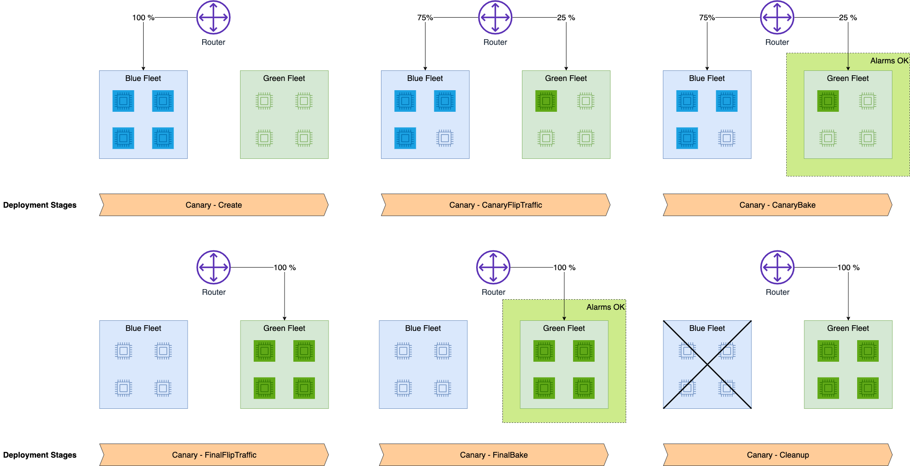
The diagram shows the router splitting traffic between the blue fleet and the green fleet. The first flip sends 25 percent to the green fleet, and the alarms must stay OK through the bake stage. The final flip sends all traffic to green, and the blue fleet is removed in cleanup. A linear rollout repeats the same idea with more steps.
switch| D["All at once with baking
period"] A -->|update instances in
batches| E["Rolling deployment"] B --> F["CloudWatch alarms watch
the new fleet"] C --> F D --> F F -->|alarm trips| G["Automatic rollback"]
Figure: Every traffic shifting mode relies on alarms. The alarm, not the operator, triggers the rollback.
Rule: Choose canary when a small share of traffic must prove the new version first. Choose linear when the stem asks for several controlled steps. Choose all at once only when the risk is low and the baking period is enough.
Trap: Deployment guardrails do not apply to every endpoint. Some endpoint features are on an exclusions list, and those features block the guardrails. Check that list before you promise a canary rollout.
Source: https://docs.aws.amazon.com/sagemaker/latest/dg/deployment-guardrails.html and https://docs.aws.amazon.com/sagemaker/latest/dg/deployment-guardrails-blue-green-canary.html
Provisioned Throughput and cross-Region inference
Fact: Provisioned Throughput reserves a higher level of throughput for one model at a fixed hourly cost. You buy it in model units. Each model unit gives a set number of input tokens and output tokens per minute for that model. A customized model uses Provisioned Throughput, or a custom model deployment for on-demand inference when its base model supports it.
Fact: The commitment term changes the hourly price. The options are no commitment, one month, and six months. Billing continues until you delete the Provisioned Throughput. The exact price per model unit is Not in source.
Fact: Cross-Region inference routes a request to another Region to find capacity. A geographic profile keeps processing inside a geography such as the United States or the European Union. A global profile routes to any supported commercial Region. Cross-Region inference is not a Provisioned Throughput feature.
traffic"] -->|spiky or unknown| B["On-demand inference"] A -->|steady load and
committed budget| C["Provisioned Throughput in
model units"] A -->|more capacity
without buying units| D["Cross-Region inference
profile"] C --> E["Required for customized
models"] D --> F["Geographic keeps data in a
geography"] D --> G["Global profile routes
worldwide"]
Figure: Traffic shape and data residency decide the throughput option.
Rule: Choose Provisioned Throughput for a steady, predictable load on one model. Choose a geographic cross-Region profile when residency rules apply. Choose a global profile when residency does not apply and lower cost matters.
Trap: An inference profile does not support Provisioned Throughput. A design that asks for reserved capacity and cross-Region routing at the same time must pick one. The stem decides which one.
Source: https://docs.aws.amazon.com/bedrock/latest/userguide/prov-throughput.html and https://docs.aws.amazon.com/bedrock/latest/userguide/cross-region-inference.html
Network placement with VPC, subnets, and PrivateLink
Place the application in private subnets of a virtual private cloud (VPC). Reach Amazon Bedrock through interface VPC endpoints that AWS PrivateLink creates. A public subnet with a NAT gateway and an internet gateway is needed only for traffic that must leave AWS for a public address.
Fact: Amazon Bedrock supports AWS PrivateLink interface endpoints. With them, the VPC reaches Bedrock with no internet gateway, no NAT device, and no VPN or Direct Connect link. Instances need no public IP address.
Fact: Creating the endpoint places an endpoint network interface in each subnet you enable. Those interfaces are the entry point for Bedrock traffic. The endpoint works across Availability Zones, so enable subnets in more than one zone for resilience.
Fact: Each API surface has its own endpoint service name. The names are bedrock for control plane actions, bedrock-runtime for inference, bedrock-agent for agent build time, and bedrock-agent-runtime for agent invocation. A separate bedrock-mantle endpoint also exists for the OpenAI-compatible surface.
| API call | bedrock-runtime | bedrock-agent-runtime | bedrock control plane |
|---|---|---|---|
| Converse or InvokeModel | Yes | No | No |
| ConverseStream or streaming invoke | Yes | No | No |
| InvokeAgent | No | Yes | No |
| Model management actions | No | No | Yes |
Figure: Each API call needs the endpoint that serves it. A private app that calls both inference and agents needs two endpoints.
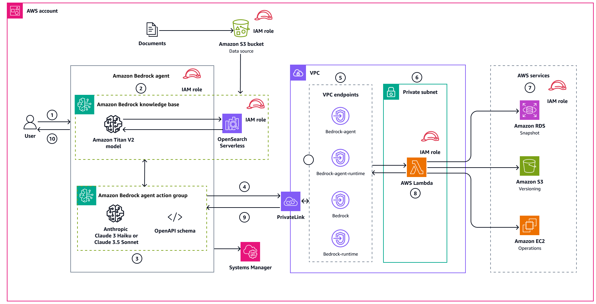
The diagram shows the Bedrock agent outside the VPC. The action group call crosses PrivateLink into the VPC, where the VPC endpoints for bedrock-agent, bedrock-agent-runtime, bedrock, and bedrock-runtime sit. The Lambda function in the private subnet uses its IAM role to reach the AWS services it needs. The response returns along the same private path.
Fact: With private DNS enabled on the endpoint, the standard Regional names such as bedrock-runtime.REGION.amazonaws.com resolve to the endpoint. The application code does not change. With private DNS disabled, the SDK client needs the endpoint URL that the VPC console shows.
Fact: An endpoint policy is an IAM resource on the interface endpoint. The default policy allows full Bedrock access through the endpoint. A custom policy limits the principals, actions, and resources that can use the endpoint.
A private endpoint is a network path, not an identity check. A request must pass the IAM policy of the caller and the endpoint policy, so both layers need to allow the call. Use the two layers together so that a compromised workload in the VPC cannot call every model in the account. Review the endpoint policy whenever a new model or a new application role joins the VPC.
Rule: Use one interface endpoint for each API surface your code calls. Enable private DNS so the code keeps the standard names. Attach a policy that names the application role and the actions it needs.
Trap: A NAT gateway does not make Bedrock calls private. It sends traffic to the public internet. A design that asks for no internet path must use interface endpoints and must not route Bedrock traffic through NAT.
Trap: Creating only the bedrock endpoint does not cover inference. A Lambda function that calls Converse needs bedrock-runtime. A function that calls InvokeAgent needs bedrock-agent-runtime.
InvokeModel| B["bedrock-runtime endpoint"] A -->|InvokeAgent| C["bedrock-agent-runtime
endpoint"] A -->|manage models and
throughput| D["bedrock control plane
endpoint"] B -->|private DNS on| E["Standard name works
unchanged"] B -->|private DNS off| F["Set endpoint URL in SDK
client"]
Figure: The API call selects the endpoint. Private DNS decides whether the code changes.
Reference architecture with the network layer
The full reference shows one request path and the network around it. A client calls an API in front of a Lambda function. The function sits in private subnets and reaches Bedrock through interface endpoints. Documents come from S3 through a gateway endpoint, and the NAT gateway serves only the rare third-party call.
public subnets"] subgraph PRIV["Private subnets"] LAMBDA EPRT["Interface endpoint
bedrock-runtime"] EPAG["Endpoint
bedrock-agent-runtime"] GWS3["Gateway endpoint for S3"] end NAT["NAT gateway in public
subnet"] IGW["Internet gateway"] end LAMBDA -->|converse| EPRT LAMBDA -->|invoke agent| EPAG EPRT -->|PrivateLink| BRR["Bedrock runtime service"] EPAG -->|PrivateLink| BRA["Bedrock agent runtime
service"] LAMBDA -->|read documents| GWS3 GWS3 -->|route table| S3["Amazon S3 documents"] LAMBDA -->|third party only| NAT NAT -->|egress| IGW IGW -->|public internet| INET["Third party API"]
Figure: Bedrock and S3 traffic stays on private paths. The NAT and internet gateway serve only the third-party call.
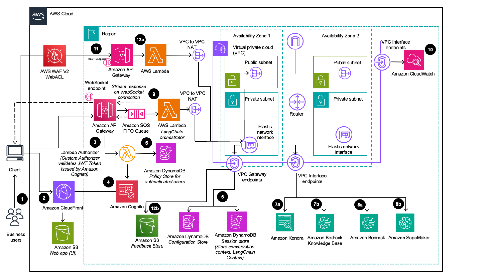
The diagram places the functions in the VPC and splits the subnets across two Availability Zones. Each zone has a public subnet and a private subnet, and the private subnets hold the elastic network interfaces. VPC interface endpoints lead to the Bedrock and other AWS services, and VPC gateway endpoints lead to S3 and DynamoDB. Use this layout as the starting point for the private design in your answer.
Source: https://docs.aws.amazon.com/bedrock/latest/userguide/vpc-interface-endpoints.html, https://docs.aws.amazon.com/bedrock/latest/userguide/endpoints.html, and https://docs.aws.amazon.com/solutions/latest/generative-ai-application-builder-on-aws/architecture-overview.html
Skill 1.1.2: Proof-of-concept implementations
A proof of concept (PoC) checks feasibility, speed, and business value before the team builds the full system. The skill names Amazon Bedrock as the example service. A good PoC has numeric pass criteria, a fixed test set, and a short time box. A PoC that skips those steps proves little.
business value"] N4 -->|only then| N5["Build the full system"] N1 -->|if steps skipped| N6["Proves little"]
Figure: A proof of concept needs criteria, a fixed test set, and a time box before it can show feasibility.
Amazon Bedrock
Fact: Amazon Bedrock is a managed service with API access to foundation models. You do not run model servers, and you do not choose instances. The Bedrock overview recommends the bedrock-runtime endpoint for new applications.
Fact: The Converse and ConverseStream operations run on the bedrock-runtime endpoint only. They give one message format for models that support messages. InvokeModel takes the native request body of a model, so it fits model-specific parameters.
Fact: The Bedrock console has playgrounds for trying models without code. Custom models are not supported in the console playgrounds. Programmatic calls are needed for those models.
Fact: Each model on bedrock-runtime has fixed requests per minute and tokens per minute quotas. You can request increases. The numeric quota values are Not in source for this section, so read them from the quota page before a load test.
Rule: For a PoC, call Bedrock with Converse from a script or a small Lambda function. Use on-demand inference first. Buy Provisioned Throughput only after the PoC proves the load.
Trap: The bedrock-mantle endpoint does not support Guardrails. A PoC that must test guardrail behavior must use bedrock-runtime, or the safety test does not run.
Trap: A load test on default quotas can show throttling that comes from the quota, not from the design. Request the quota increase before the test, and record the quota in the PoC report.
Bedrock pairs with IAM roles for least privilege, Lambda for glue code, API Gateway for a test endpoint, and Guardrails for safety checks. Bedrock does not replace an evaluation process. The team still writes the test set and scoring.
Source: https://docs.aws.amazon.com/bedrock/latest/userguide/what-is-bedrock.html, https://docs.aws.amazon.com/bedrock/latest/userguide/conversation-inference.html, https://docs.aws.amazon.com/bedrock/latest/userguide/endpoints.html, and https://docs.aws.amazon.com/bedrock/latest/userguide/playgrounds.html
A PoC needs scripted API calls, not only console clicks. Console results cannot be repeated, scored, or compared across a test set in an automated way. A script that calls Converse with the same prompts each run gives numbers that another engineer can check. The playground is useful for the first look, and the script is the evidence.
Proof-of-concept method
Use this order for every PoC. Each step has one action, and the pass or fail decision uses the numbers from step one.
- Write the success criteria as numbers before any test.
- Pick two or three candidate models that accept the same message format.
- Try the prompts in the playground for a first look only.
- Script the same prompts with Converse and log every response.
- Score quality, latency, and token use on a fixed test set.
- Decide with the criteria, then plan the production design.
criteria"] --> B["Try candidate models in
playground"] B --> C["Script same prompts with
Converse"] C --> D["Score quality latency and
tokens"] D -->|meets criteria| E["Plan production design"] D -->|misses criteria| F["Change model or prompt and
repeat"]
Figure: The criteria written in the first step decide the branch. The playground does not decide.
Rule: Define the fail condition as clearly as the pass condition. A PoC without a fail condition always looks successful.
Trap: A PoC that uses production customer data without controls creates a compliance issue. Use masked or synthetic data for the first round.
Exam tip: When a stem asks to validate feasibility before full scale, the right answer is a bounded test with criteria. A full production stack built first is the wrong answer.
Skill 1.1.3: Standardized technical components
This skill asks for components that every team reuses, so that each deployment behaves the same way. The skill names the AWS Well-Architected Framework and the Generative AI Lens of the AWS WA Tool as examples. The framework gives the review yardstick. The components give the repeatable build.
Framework"] -->|gives the yardstick| N2["Review of each component"] N2 -->|checks| N3["Standard components"] N3 -->|give| N4["Repeatable build"] N5["Generative AI Lens of WA
Tool"] -->|named example| N1
Figure: The framework sets the review, and the standard components give the repeatable build.
AWS Well-Architected Framework
Fact: The AWS Well-Architected Framework has six pillars. They are security, reliability, cost optimization, operational excellence, sustainability, and performance efficiency. It documents foundational questions that test a design against cloud best practices. The framework was published on November 6, 2024.
Fact: The framework describes the review as a constructive conversation about decisions. The page states that the review is not an audit mechanism. The framework also links to hands-on labs that give code and documentation for each best practice.
Rule: Use the six pillars as the common checklist for every standard component. A component that cannot be reviewed against a pillar is not ready to standardize.
Trap: A framework review is not a compliance audit and not a certificate. An option that claims the framework proves compliance is wrong.
The framework pairs with the AWS WA Tool for recording reviews and with lenses that add domain questions. Its limits are documented as questions and pillars, so a numeric count of questions for this module is Not in source.
Source: https://docs.aws.amazon.com/wellarchitected/latest/framework/welcome.html and https://docs.aws.amazon.com/wellarchitected/latest/framework/the-pillars-of-the-framework.html
AWS WA Tool
Fact: The AWS Well-Architected Tool (AWS WA Tool) is a service in the cloud for reviewing a workload against the framework. The framework page states that the service is available at no charge. It gives recommendations for reliability, security, efficiency, and cost.
Fact: You can create custom lenses with your own pillars, questions, and best practices. You can share a custom lens with other AWS accounts. Milestones track progress over time, and reports summarize the status of a review.
Rule: Use the WA Tool to record a review, set an improvement plan, and track it with milestones. Use it when the stem asks for a repeatable review record.
Trap: The WA Tool is where a review lives. It is not a lens, and it does not generate the architecture. An option that says the tool designs the system is wrong.
Source: https://docs.aws.amazon.com/wellarchitected/latest/framework/welcome.html and https://docs.aws.amazon.com/wellarchitected/latest/userguide/lenses-custom.html
Generative AI Lens
Fact: The Generative AI Lens was published on November 19, 2025. It extends the framework to generative AI applications that use foundation models on Amazon Bedrock or customer-managed models on SageMaker AI. It also covers business applications built with Amazon Q.
Fact: The lens gives guidance across the lifecycle stages of scoping, model selection, customization, development, deployment, and continuous improvement. It covers output quality, traceability, secure prompts, model poisoning risk, and cost optimization of models and prompts. It also treats responsible AI as a shared responsibility between model producers, providers, and consumers.
Fact: To use the lens, you download it from a public sample repository and import it into the AWS WA Tool. The lens is a custom lens in the tool. The separate Machine Learning Lens covers traditional ML on SageMaker AI and is not this lens.
Rule: For a generative AI design review, pair the six framework pillars with the Generative AI Lens. Use the lens questions for model selection, customization, and prompt risk.
Trap: The Machine Learning Lens is not the generative AI lens. A stem about foundation model apps points to the Generative AI Lens.
Source: https://docs.aws.amazon.com/wellarchitected/latest/generative-ai-lens/generative-ai-lens.html
framework pillars"] B --> C["Add Generative AI Lens
questions"] C --> D["Run review in AWS WA Tool"] D --> E["Log risks and improvement
plan"] E --> F["Track milestones and
reports"]
Figure: The framework sets the pillars, the lens adds generative AI questions, and the WA Tool stores the review.
A review loop matters because the design changes after each finding. The framework finds the risk, the lens names the generative AI risk, and the WA Tool keeps the record that shows the fix. Without the record, a team repeats the same review and loses the milestones. Treat each finding as an input to the next design draft, as the loop in this section shows.
Standardized technical components
A standard component is code, configuration, or infrastructure that every team reuses. Each component answers one repeated question. The list below names the common components for a Bedrock application. Each one reduces a separate source of drift between deployments.
- Shared model client. One library wraps Converse, retries, timeouts, and token logging. Teams stop writing their own clients.
- Versioned prompt templates. Prompts live in version control with a review step. A change to a prompt is a change to a release.
- Guardrail configuration as code. The same guardrail settings deploy to every environment. The settings are not typed by hand.
- Infrastructure as code module. One module creates the private subnets, the interface endpoints, and the endpoint policies. Every deployment gets the same network layout.
- Logging and metrics. One logging format records the model ID, Region, latency, and token counts. Dashboards compare teams on the same fields.
library"] A --> C["Versioned prompt templates"] A --> D["Guardrail configuration as
code"] A --> E["Infrastructure as code
module"] A --> F["Shared logging and metrics"] B --> G["Same build in every
deployment"] C --> G D --> G E --> G F --> G
Figure: Each standard component feeds one common build that every deployment reuses.
Rule: Standardize a component when two or more teams repeat the same decision. Review each component against the framework pillars before you publish it.
Trap: A standard component that hard codes one model ID blocks model changes. Read the model ID from configuration, so the model can change without a code release.
X versus Y decisions
Each pair below uses the same frame. A decision tree comes first. A three row comparison follows, covering purpose, input, and output or effect. The one question to ask yourself comes next, and the trap for the pair comes last.
Figure: Each pair follows the same frame from the decision tree to the trap.
Bedrock versus SageMaker AI
answer"] --> B["Own the weights or
instance type"] B -->|no| C["Amazon Bedrock"] B -->|yes| D["Amazon SageMaker AI"] C --> E["API access and no instance
choice"] D --> F["Hosted endpoint you
configure"]
Figure: Ownership of the weights or the instance decides between the two services.
- Purpose: Bedrock gives API access to hosted foundation models. SageMaker AI builds, trains, and hosts models that you control, with fully managed infrastructure.
- Input: Bedrock takes prompts or messages through Converse or InvokeModel. A SageMaker AI endpoint takes the payload format that your container expects.
- Output or effect: Bedrock returns model output without an instance to size. SageMaker AI runs on instances that you choose and scale, with deployment guardrails for rollouts.
Exam tip: The one question is whether the stem makes you own the weights or the instance type. If it does not, the answer is Bedrock.
Trap: SageMaker AI is chosen because it sounds more powerful. When the stem asks for the least hosting work, a self-managed endpoint is wrong even if it works.
Source: https://docs.aws.amazon.com/bedrock/latest/userguide/what-is-bedrock.html and https://docs.aws.amazon.com/sagemaker/latest/dg/whatis.html
Converse versus InvokeModel
request"] -->|one format for chat
models| B["Converse"] A -->|native body for the
model| C["InvokeModel"] B --> D["Stream with ConverseStream"] C --> E["Stream with invoke stream
operation"]
Figure: The need for one format across models points to Converse. The need for the native body points to InvokeModel.
- Purpose: Converse runs multi-turn conversations with a consistent message structure. InvokeModel runs the base inference call with the model specific body.
- Input: Converse takes messages, a system prompt, and inference settings. InvokeModel takes a JSON body that the model defines.
- Output or effect: Converse returns one message shape for every supported model. InvokeModel returns whatever the model returns, so the caller parses it.
Exam tip: The one question is whether the stem wants one code path across models. If yes, choose Converse. If the stem requires the exact native body of one model, choose InvokeModel.
Trap: InvokeModel is chosen for a multi-provider chat design because it looks more flexible. That choice forces a parser for each model, which breaks the one-format goal.
Source: https://docs.aws.amazon.com/bedrock/latest/userguide/conversation-inference.html
Well-Architected Framework versus Generative AI Lens
workload questions| C["Generative AI Lens"] A -->|record and track the
review| D["AWS WA Tool"] B --> E["Six pillars for every
workload"] C --> F["Extends the framework
pillars"] D --> G["Holds the framework and
lens reviews"]
Figure: The framework is the base. The lens is the extension. The WA Tool is the place where the review is kept.
- Purpose: The framework gives principles and six pillars for any workload. The Generative AI Lens adds questions and practices for foundation model applications.
- Input: The framework takes your design and the pillar questions. The lens takes the same design plus generative AI topics such as model selection and prompt risk.
- Output or effect: The framework and the lens both produce review findings. The AWS WA Tool stores those findings and tracks the improvement plan.
Exam tip: The one question is whether the stem asks about general design or about generative AI specific risk. General design points to the framework. Generative AI specific risk points to the lens, loaded into the WA Tool.
Trap: The Generative AI Lens is chosen as a replacement for the framework. The lens extends the framework, so the six pillars still apply.
Source: https://docs.aws.amazon.com/wellarchitected/latest/framework/welcome.html, https://docs.aws.amazon.com/wellarchitected/latest/generative-ai-lens/generative-ai-lens.html, and https://docs.aws.amazon.com/wellarchitected/latest/userguide/lenses-custom.html
Read a long question
Long stems add detail that looks important. Use three passes. First, write the one sentence that says what the system must do. Second, mark the constraint words that change the design. Third, reject each wrong option with one reason and keep the option that survives.
detail"] -->|pass one| N2["One sentence of the system
goal"] N2 -->|pass two| N3["Mark the constraint words"] N3 -->|pass three| N4["Reject wrong options"] N4 -->|keep one| N5["Option that survives"]
Figure: Three passes narrow a long stem down to the one option that survives.
Exam tip: Mark only words that change the design, such as steady, overnight, residency, tool calls, or three models. Team names and company types usually change nothing.
Scenario one: a steady load that must stay in one country
A records firm runs a summary feature for staff. The load stays flat through the business day. Patient-related data must stay inside one country, and the team wants the same model without a server fleet.
Figure: Each constraint word points to one design choice, and the answer must satisfy all of them.
Constraint words: steady, one country, and without a server fleet. Steady load points to reserved capacity. One country rules out routing outside that geography. No fleet rules out self-managed hosting.
- A global cross-Region profile: rejected, because requests can leave the country.
- A geographic profile with Provisioned Throughput: rejected, because inference profiles do not support Provisioned Throughput.
- A SageMaker AI endpoint: rejected, because the team wants no fleet to run.
- Provisioned Throughput in the one Region over the bedrock-runtime endpoint: kept, because it gives reserved capacity and keeps processing in the Region.
Rule: Answer is Provisioned Throughput in one Region, with private access through the bedrock-runtime interface endpoint.
Scenario two: an overnight job with tool calls and no user waiting
A legal research team summarizes a large set of filings every night. No user waits for the results, and the answers go to a warehouse the next morning. The model must call a lookup tool for each filing.
calling"] N2 -->|check| N4["Batch format rules"] N3 -->|check| N4 N4 -->|keep the option| N5["Option that passes both
checks"]
Figure: The offline job and the tool calling need each narrow the design before the options are compared.
Constraint words: overnight, no user waits, and tool calls. No waiting points to a batch job. Tool calls change the request format that the batch job accepts.
- Streaming output: rejected, because no user watches the text arrive.
- A synchronous Lambda loop over every filing: rejected, because it hits request limits and the wait time grows with the set size.
- A batch job in the Converse format with tool configuration: rejected, because the batch job rejects tool configuration in that format.
- Batch inference in the InvokeModel format with native tool calls: kept, because it runs offline and accepts tool calling.
Rule: Answer is batch inference from S3 using the InvokeModel format, with each record in the native body of the model.
Scenario three: three models in one week with no production load
A startup must show an investor demo next week. The demo compares three chat models with the same application code. The team has no production traffic and no GPU experience.
criteria"] N1 -->|same code| N3["One message format for all
models"] N1 -->|no live traffic| N4["Skip reserved capacity for
now"] N2 --> N5["Candidate answer"] N3 --> N5 N4 --> N5 N5 -->|test against| N6["All constraints met"]
Figure: The deadline, the shared code, and the lack of traffic each point to a bounded test on one message format.
Constraint words: next week, three models, same code, and no production traffic. These words point to a bounded PoC on a managed model service. The same code points to one message format.
- A SageMaker AI endpoint for each model: rejected, because hosting and instance work take longer than a week.
- Provisioned Throughput bought before any evidence: rejected, because the team would commit cost before the criteria are known.
- A full production landing zone first: rejected, because the stem asks for a demo, and the build is slower than the time box.
- Bedrock with Converse behind a small script, using the playground for a first look: kept, because it gives one format across the three models and needs no hosting.
Rule: Answer is a bounded PoC with Converse on Bedrock and written pass criteria. Keep Provisioned Throughput for the production decision.
Before you choose an answer, test it against the constraint sentence you wrote. Ask whether the option meets the constraint, breaks it, or ignores it. An option that ignores the constraint is wrong even if it is a good design. The answer that survives is usually the one that names the constraint in its own words.
Distractor patterns seen in practice items
Wrong options follow a small set of patterns. Learn the pattern as well as the service, because the same pattern appears across many topics.
service"] -->|test the constraint| N2["Meets the constraint"] N2 -->|no| N3["Reject the option"] N2 -->|yes| N4["Keep the option"] N5["Known distractor pattern"] -->|use as checklist| N3
Figure: An option can be accurate about its service and still break the stated constraint.
- Private path in name only. A NAT gateway or public endpoint is offered as private access. It still sends traffic to the public internet, so it fails a no internet path rule.
- Wrong endpoint for the API. The control plane endpoint is offered for inference calls. Inference needs bedrock-runtime, and agent invocation needs bedrock-agent-runtime.
- Reserved capacity for spiky load. Provisioned Throughput is offered for unpredictable traffic. Reserved capacity pays for idle units when the load is low.
- Cross-Region profile with reserved capacity. A profile is offered together with Provisioned Throughput. Profiles do not support Provisioned Throughput, so the option cannot work.
- Batch for live users. Batch inference is offered for a chat window. Batch is asynchronous, so the user gets no live answer.
- Framework as an audit. The framework is offered as proof of compliance. The framework is a review method, not an audit.
- Lens as a tool. The Generative AI Lens is offered as the place where reviews are stored. The WA Tool stores reviews, and the lens is loaded into it.
- Hosting for a managed need. SageMaker AI or EKS is offered for a stem that wants the least operational work. The option works, but it adds the work the stem removes.
Trap: A distractor can be true about a service and still fail the constraint. Reject it with the constraint in one sentence.
Drill
Read each prompt, answer in your head, then check the next line.
pattern"] N3 -->|differs| N5["Find the missed constraint"] N5 -->|try again| N1
Figure: Each prompt is answered before its rule line is checked, and a mismatch sends you back to the constraint.
Prompt 1: A team needs a managed model with no servers to run and no weights of its own.
Rule: Amazon Bedrock with the bedrock-runtime endpoint.
Prompt 2: A team owns fine-tuned weights and must set the instance type and the scaling policy.
Rule: Amazon SageMaker AI endpoint with deployment guardrails.
Prompt 3: A chat feature must return one message format across chat models from three providers.
Rule: Converse on bedrock-runtime.
Prompt 4: A backend must show text in the browser as the model writes it.
Rule: ConverseStream or the streaming invoke operation, with an end to end streaming path.
Prompt 5: Ten thousand documents need a summary each night, and no user waits for them.
Rule: Batch inference from S3.
Prompt 6: A private Lambda function calls InvokeAgent and has no internet path.
Rule: An interface endpoint for bedrock-agent-runtime.
Prompt 7: A private Lambda function calls Converse and has no internet path.
Rule: An interface endpoint for bedrock-runtime, with private DNS enabled.
Prompt 8: A steady load on one model must have reserved capacity, and data stays in one Region.
Rule: Provisioned Throughput in that Region, with model units sized to the load.
Prompt 9: A new model version must receive five percent of traffic first, then the rest after the alarms stay quiet.
Rule: Canary traffic shifting with CloudWatch alarms on the new fleet.
Prompt 10: A team wants the same review record for each workload, with milestones and reports.
Rule: AWS WA Tool with the framework, plus the lens for generative AI workloads.
Prompt 11: A team must confirm that a PoC meets its goals before it builds the production stack.
Rule: Numeric pass and fail criteria, a fixed test set, and a scripted Converse test.
Prompt 12: The same guardrail and logging settings must reach each team deployment without manual edits.
Rule: Standard components as code, such as the infrastructure as code module and the guardrail configuration.
Sources
AWS documentation fetched for this section:
Figure: The source list groups AWS pages by service and sets the diagram pages apart.
- https://docs.aws.amazon.com/bedrock/latest/userguide/what-is-bedrock.html
- https://docs.aws.amazon.com/bedrock/latest/userguide/models-supported.html
- https://docs.aws.amazon.com/bedrock/latest/userguide/endpoints.html
- https://docs.aws.amazon.com/bedrock/latest/userguide/vpc-interface-endpoints.html
- https://docs.aws.amazon.com/bedrock/latest/userguide/conversation-inference.html
- https://docs.aws.amazon.com/bedrock/latest/userguide/batch-inference.html
- https://docs.aws.amazon.com/bedrock/latest/userguide/prov-throughput.html
- https://docs.aws.amazon.com/bedrock/latest/userguide/cross-region-inference.html
- https://docs.aws.amazon.com/bedrock/latest/userguide/playgrounds.html
- https://docs.aws.amazon.com/sagemaker/latest/dg/whatis.html
- https://docs.aws.amazon.com/sagemaker/latest/dg/deployment-guardrails.html
- https://docs.aws.amazon.com/wellarchitected/latest/framework/welcome.html
- https://docs.aws.amazon.com/wellarchitected/latest/framework/the-pillars-of-the-framework.html
- https://docs.aws.amazon.com/wellarchitected/latest/userguide/lenses-custom.html
- https://docs.aws.amazon.com/wellarchitected/latest/generative-ai-lens/generative-ai-lens.html
Diagram pages used for the figures:
- https://docs.aws.amazon.com/sagemaker/latest/dg/deployment-guardrails-blue-green-canary.html
- https://docs.aws.amazon.com/prescriptive-guidance/latest/patterns/automate-aws-infrastructure-operations-by-using-amazon-bedrock.html
- https://docs.aws.amazon.com/solutions/latest/generative-ai-application-builder-on-aws/architecture-overview.html
Task 1.2: Select and configure FMs
After this section you can choose a foundation model (FM) for a use case, build a routing layer that switches providers without a code change, keep an AI workload running during a disruption, and deploy and retire customized models through a controlled release. Read each scenario for the one constraint that decides it. Then reject each wrong option with one reason.
constraint"] N2 -->|model choice| N3["Assess and choose FMs"] N2 -->|switch| N4["Switch providers safely"] N2 -->|disruption| N5["Stay available"] N2 -->|customize| N6["Customize and deploy"]
Figure: Each scenario is read for one deciding constraint, which then points to one of four skills.
The deciding constraint
Start from the scenario, not from the service names. Most long questions in this task describe a business need, a traffic pattern, and one rule that cannot change. The rule is usually a residency limit, an availability target, a release control, or a requirement to keep the same model. Write that rule in three or four words before you read any option.
The task has four skills, and each skill answers a different question. Skill 1.2.1 asks which model fits. Skill 1.2.2 asks how to switch models without a code change. Skill 1.2.3 asks how to keep serving during an outage. Skill 1.2.4 asks how to deploy and retire a customized model.
choice or change"] -->|Compare candidates
first| B["Benchmark and limit tests"] A -->|Switch model per
tenant| C["Routing layer with
AppConfig"] A -->|Outage or throttling| D["Resilience with
cross-Region profile"] A -->|Own fine-tuned
weights| E["Customize and deploy path"] D -->|Same model must stay| F["Inference profile in
modelId"] D -->|Repeated calls to a
broken service| G["Circuit breaker with state
table"] E -->|Supported
architecture on
Bedrock| H["Custom Model Import"] E -->|GPU or container
control needed| I["SageMaker AI endpoint"] I -->|Versions need
approval| J["Model Registry and
pipeline"]
Figure: The first split is the question the scenario asks, not the service that sounds newest.
Use these signal words to move down the tree.
- Rule: Words such as benchmark, compare, or shortlist point to Skill 1.2.1 tests before any build.
- Rule: Words such as switch provider, change without deployment, or per tenant point to a routing layer.
- Rule: Words such as outage, Regional disruption, or throttling point to Skill 1.2.3 patterns.
- Rule: Words such as approved, rollback, or retire point to Model Registry and guarded deployment.
- Rule: Words such as residency, geography, or stay inside a country point to a geographic profile.
Exam tip: The phrase "without a code change" in a stem is a constraint about where the switch lives. The switch belongs in configuration, not in the application binary. Read that phrase before the option list.
Skill 1.2.1: Assess and choose FMs
This skill asks you to match a model to a business use case and to technical limits. The named techniques are performance benchmarks, capability analysis, and limitation evaluation. Benchmarks ask how well the model does on your data. Capability analysis asks whether it can do the task at all. Limitation evaluation asks what it cannot do under your traffic, size, and residency rules.
use case"] -->|Run the same test
set| B["Performance benchmark"] B -->|Quality meets target| C["Capability check"] B -->|Quality falls short| D["Reject or customize"] C -->|Feature missing| D C -->|Limits fit traffic
and rules| E["Shortlist with limits
recorded"] E -->|Compare cost per
correct answer| F["Final choice"]
Figure: Each step removes candidates. Cost comes last, after quality and limits.
Performance benchmarks
What it is: A performance benchmark runs each candidate model on the same prompts and records how well each answer meets a measure. Amazon Bedrock model evaluation can compare models on your own prompts. The evaluation can use human judges, LLM judges, or predefined metrics, according to the course slides.
models"] -->|run one test set| N2["Same prompts for each
model"] N2 -->|same response limit| N3["Same Region and limits"] N3 -->|score answers| N4["Judges or predefined
metrics"] N4 -->|evidence| N5["One choice with evidence"] N6["Public leaderboard rank"] -->|not enough| N5
Figure: A benchmark runs one shared test set across candidates, and a leaderboard rank does not replace that evidence.
A benchmark is only as useful as its test set. Use prompts that match real traffic, including long inputs, edge cases, and the output format your application needs. Keep the same prompts, the same response limits, and the same retrieval context for every candidate. Otherwise the comparison measures the setup, not the model.
Rule: Choose a benchmark when two or more models could work and you need evidence for one choice. Run the test set on the same Region and with the same response limit.
Trap: Do not choose a model because a public leaderboard ranks it first. A public score does not show how the model handles your documents, your language, or your output schema.
Pairs with: Bedrock model evaluation for scored runs, CloudWatch for token and latency metrics during the test, and the cost tables for each candidate.
Limits: The exact list of Bedrock evaluation metrics and job types is Not in source for this section. The Bedrock evaluation overview page returned only its title when fetched. Check the current evaluation page before you quote metric names.
Source: Sundog course slides 288 and 289 on Bedrock Evaluations and price performance ratio. https://docs.aws.amazon.com/bedrock/latest/userguide/model-evaluation.html (fetch returned title only).
Capability analysis
What it is: Capability analysis checks whether a model can perform each task the use case needs. Tasks differ, such as classification, summarization, extraction, chat, and structured output. A model that writes fluent text may still fail at strict JSON output or at reading a long document.
answer"] N5["Model card feature list"] -->|not enough alone| N2
Figure: Each task gets its own tests, and the smallest model that passes a step is chosen for that step.
Break the use case into tasks before you compare models. Give each task its own test cases and its own pass criteria. A workflow can use a smaller model for a bounded step, such as classification or compression, and a larger model for the final answer. The course slides say that the smallest useful model is often enough when retrieval and tool use supply the knowledge.
Rule: Run capability analysis per task when one workflow has several steps. Use the smallest model that passes the test for each step.
Trap: Do not treat a model as capable of a task because the model card lists the feature. Feature lists show what a model family supports, not whether your prompts reach an acceptable quality.
Pairs with: Benchmarks for the scores, structured output rules in the prompt, and guardrails for output checks.
Limits: Feature support differs by model and Region. Exact support tables are Not in source for this section. Check the model support table in the Bedrock documentation for each Region you plan to use.
Source: Sundog course slides 288 and 289 on model selection and cost capability tradeoff.
Limitation evaluation
What it is: Limitation evaluation records the hard edges of a model before you commit. The edges include supported Regions, context size, quota, output limits, supported invocation APIs, and whether the model can be customized or imported. Each limit can remove a candidate even when its quality is high.
size"] N1 -->|check each limit| N4["Provisioned or cross
Region options"] N2 -->|fails a hard limit| N5["Drop the candidate"] N3 -->|fails a hard limit| N5 N4 -->|fails a hard limit| N5
Figure: Each candidate is checked against every hard limit, and one failure removes it before quality is compared.
Write the limits as a table with one row per candidate. Include the Region list, the invocation API, the context size, and whether provisioned capacity or cross-Region routing is available. A limit that matters for one workload can be irrelevant for another. For example, a batch job ignores latency, but it cannot use some features that interactive calls use.
Rule: Record each limit as a yes or no for each candidate before you compare quality. Drop a candidate that fails a hard limit.
Trap: A model that fails a residency rule is not a candidate, even if it scores best. Quality never overrides a Region or data rule.
Pairs with: Custom Model Import limits, cross-Region inference support tables, and provisioned capacity planning.
Limits: Quota values for each model and Region are Not in source for this section. Custom Model Import limits are listed in the import section below.
Source: https://docs.aws.amazon.com/bedrock/latest/userguide/cross-region-inference.html and https://docs.aws.amazon.com/bedrock/latest/userguide/model-customization-import-model.html
Skill 1.2.2: Create flexible architecture for model switching
This skill asks you to let an application change the model or provider without a code change. The pattern puts a stable API in front of the model call. A small routing function reads the chosen model from configuration. The configuration is validated and deployed on its own schedule, so the application code does not change when the model changes.
API"] -->|Request with tenant
ID| B["API Gateway method"] B -->|Invoke integration| C["Lambda router function"] C -->|Read current route| D["AppConfig Agent or Lambda
extension"] C -->|Bedrock route| E["Bedrock Converse call"] C -->|SageMaker route| F["SageMaker runtime call"] D -->|New version
validated first| C
Figure: The client contract never changes. Only the route in configuration changes.
AWS Lambda
What it is: AWS Lambda runs code on demand without servers you manage. In this pattern, a Lambda function is the router. It reads the route for the request, builds the provider call, invokes the model, and returns a response in one shape. Lambda functions can also call Bedrock and SageMaker AI runtime APIs with the AWS SDK.
route"] -->|router reads route| N2["Lambda router function"] N2 -->|builds the call| N3["Bedrock Converse request"] N2 -->|builds the call| N4["SageMaker endpoint request"] N3 -->|one response shape| N5["Client sees one format"] N4 -->|one response shape| N5 N6["Route data outside the
function"] -->|no redeploy| N2
Figure: The Lambda router builds each provider call while the route data stays outside the function.
The router keeps all provider-specific logic in one place. A Bedrock route uses the Converse request shape, which gives one message format across supported chat models. A SageMaker route uses the endpoint request shape of the hosted model. The client sees one response format either way. This is how the provider changes without a client release.
Rule: Use Lambda as the router when the switch must run code that formats each provider request. Keep the route data outside the function, so a change does not need a redeploy.
Trap: Do not put model names in the function code. A new model then needs a code change and a deployment, which breaks the requirement.
Pairs with: API Gateway in front, AppConfig for route data, and CloudWatch for per-route metrics.
Limits: Lambda quotas and timeouts are Not in source for this section. Check the Lambda quota page before you size concurrency for a burst.
Source: https://docs.aws.amazon.com/appconfig/latest/userguide/appconfig-integration-lambda-extensions.html and Sundog course slide 363.
Lambda in private subnets for private model calls
A router that calls Bedrock can run inside a VPC. Place the function in private subnets, which have no route to an internet gateway. Give the function a security group that allows outbound HTTPS to the endpoint security group only. Create an interface VPC endpoint for the Bedrock runtime service, so the call stays on AWS PrivateLink.
resolves to endpoint| D["Interface endpoint
bedrock-runtime"] D -->|PrivateLink to
Bedrock| E["Amazon Bedrock runtime"] C -->|Other internet calls
only| F["NAT gateway in public
subnet"] F -->|Route to internet
gateway| G["Internet gateway"]
Figure: Bedrock traffic uses the endpoint. The NAT path exists only for other internet destinations.
The interface endpoint places a network interface in each subnet you enable. Traffic from the function reaches the Bedrock runtime through those interfaces. Private DNS lets the standard Regional hostname resolve to the endpoint, so the code does not change. The security group on the endpoint limits which resources can reach it on port 443.
Rule: For Bedrock calls from private subnets, create an interface endpoint with private DNS. Add a NAT gateway only when the function needs other internet destinations.
Trap: A NAT gateway does not keep Bedrock traffic private. Its traffic leaves the VPC through a public route, which the security rule may forbid.
Source: https://docs.aws.amazon.com/bedrock/latest/userguide/vpc-interface-endpoints.html and https://docs.aws.amazon.com/vpc/latest/privatelink/what-is-privatelink.html
Amazon API Gateway
What it is: Amazon API Gateway exposes an HTTP or REST API to clients. It validates requests, applies throttling, and invokes the backend, which here is the Lambda router. The client calls one URL for every model, so the contract stays the same when the route changes. API Gateway endpoint types include edge-optimized, regional, and private, according to the course slides.
route changes"] N2 -->|authenticate with| N6["IAM or authorizer or
Cognito"]
Figure: API Gateway gives clients one fixed contract in front of the Lambda router and validates requests before they arrive.
Put API Gateway at the front so that model changes happen behind a fixed interface. Use request validation to reject malformed bodies before they reach the router. Use usage plans and API keys for client-level targets, but do not treat them as security. Authentication still belongs to IAM, a Lambda authorizer, or Amazon Cognito.
Rule: Use API Gateway as the stable contract when many clients call one model service. Authenticate with IAM, a Lambda authorizer, or Cognito, not with API keys.
Trap: Do not use usage plan throttling as a hard cost or access limit. The docs state that throttling and quotas are applied on a best-effort basis, and clients can exceed them.
Pairs with: Lambda as the router, Cognito for user sign-in, and AWS WAF for request filtering.
Limits: Exact throttle rates for a given account are Not in source. The course slides give rough ranges for throttling and burst capacity, but account values differ.
Source: https://docs.aws.amazon.com/apigateway/latest/developerguide/api-gateway-api-usage-plans.html and Sundog course slides 361 to 363.
AWS AppConfig
What it is: AWS AppConfig changes application configuration in production without a code deployment. A configuration profile defines where the data lives and what type it is. Validators check the data before it deploys. A deployment strategy rolls the change out over time, and CloudWatch alarm monitors can roll it back automatically.
For provider switching, the configuration holds the route for each tenant, the model identifier, and the rollout percentage. The router reads the deployed configuration from the local AppConfig Agent, or from the Lambda extension. A bad route fails validation or trips an alarm, and AppConfig reverts the change. The team changes routes without touching the router code.
profile"] -->|Validator checks
schema| B["Validation step"] B -->|Invalid data| C["Deployment stops"] B -->|Valid data| D["Deployment strategy shifts
over time"] D -->|CloudWatch alarm
fires| E["Automatic rollback"] D -->|Rollout completes| F["Agent serves new route"]
Figure: Validation and alarms sit between an edit and a live route.
Rule: Store routes, model IDs, and rollout percentages in AppConfig when a change must be validated, staged, and reversed without a deploy.
Trap: Environment variables change without a code deploy, but they give no validator, no staged rollout, and no alarm rollback. Choose AppConfig when the scenario asks for those controls.
Pairs with: Lambda extension for cached reads, CloudWatch alarms for rollback, and Parameter Store or S3 as sources.
Limits: Polling intervals and extension cache durations are Not in source for this section. The AppConfig Agent reduces calls to the service, which lowers cost for frequent reads.
Source: https://docs.aws.amazon.com/appconfig/latest/userguide/what-is-appconfig.html and https://docs.aws.amazon.com/appconfig/latest/userguide/appconfig-integration-lambda-extensions.html
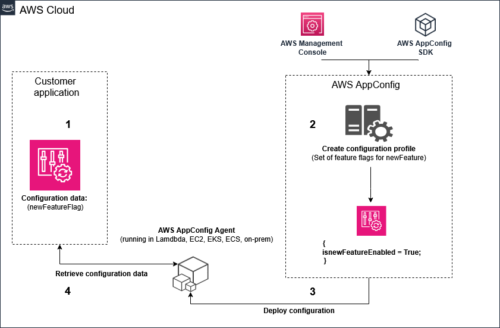
The diagram shows the four steps in order. The customer application holds a configuration data reference. AppConfig creates the profile in the second box, then deploys the validated data to the AppConfig Agent in step three. The application reads the cached copy from the agent in step four, so no code path calls the service on each request.
Dynamic model selection and provider switching
What it is: Dynamic model selection chooses a model for each request from rules, such as tenant, task type, or load. Provider switching moves traffic from one provider or API to another. Both need a stable contract, a router, and route data that changes separately from code.
request"] N3 -->|log the route| N4["Route logged with response"] N5["Route data changes
separately"] -->|read by router| N3 N3 -->|one response shape| N6["Client gets one format"]
Figure: The model is picked by task type first and then by tenant or load, and the router keeps one response shape.
Choose the model per request by the task type first, then by tenant tier. Keep the router's decision table short, because each rule is a place where a wrong route can start. Log the chosen model with every response, so you can see which route served each request. A clean log makes a rollback decision possible.
Rule: Select the model by task type, then by tenant or load. Log the chosen route with each response.
Trap: A switch that sends a request to a different provider can change the output format. The client breaks if the router does not return one response shape.
Pairs with: The Converse request shape, AppConfig routes, and the usage fields for per-route cost.
Limits: Model support by Region changes over time. The current list is Not in source for this section.
Source: Sundog course slides 288 and 363. https://docs.aws.amazon.com/bedrock/latest/userguide/conversation-inference.html
Skill 1.2.3: Design resilient AI systems
This skill asks you to keep the AI system running when a service has a disruption. The named techniques are a Step Functions circuit breaker, Amazon Bedrock Cross-Region Inference, cross-Region model deployment, and graceful degradation. A circuit breaker stops repeated calls to a broken dependency. Cross-Region inference moves a request to another Region. Graceful degradation keeps a reduced service when no full path works.
error| C["Backoff with jitter retry"] C -->|Still failing after
bounded tries| D["Fallback model for same
task"] D -->|Fallback succeeds| E["Return answer with notice"] D -->|Fallback fails| F["Cached or template
response"] F -->|Work can wait| G["Queue for later processing"]
Figure: A degradation ladder. Each step runs only when the step above fails.
AWS Step Functions circuit breaker pattern
What it is: A circuit breaker sits between a caller and a dependency. It stops calls to a dependency that has failed repeatedly, returns an immediate failure, and tests the dependency again after a set time. Step Functions has no single circuit breaker switch. The documented AWS pattern builds one from a state machine and a DynamoDB table that holds the circuit status with an expiry time.
retries"] N3 -->|retries fail| N4["Write open record with
expiry"] N4 -->|later runs| N2 N3 -->|success| N5["Return the result"]
Figure: The workflow fails fast while the open record lasts and calls the dependency only when no open record exists.
The workflow first reads the circuit record for the dependency. If the record is open and not expired, the workflow fails fast and does not call the dependency. If there is no open record, the workflow calls the dependency with retries. When retries fail, the workflow writes an open record with an expiry time, so later executions also fail fast until the expiry passes.
Rule: Use a circuit breaker when a caller keeps retrying a dependency that is down, and the retries add load or hold resources. Store the state in a shared table, so every execution sees it.
Trap: Step Functions retry settings alone do not stop other executions from calling a broken service. Each execution would retry on its own, which is the problem the circuit breaker solves.
Pairs with: DynamoDB with time to live for expired records, Lambda for the dependency call, and CloudWatch logs for failed calls while the circuit is open.
Limits: The circuit breaker in the sample uses express workflows. Exact limits on Step Functions executions are Not in source for this section.
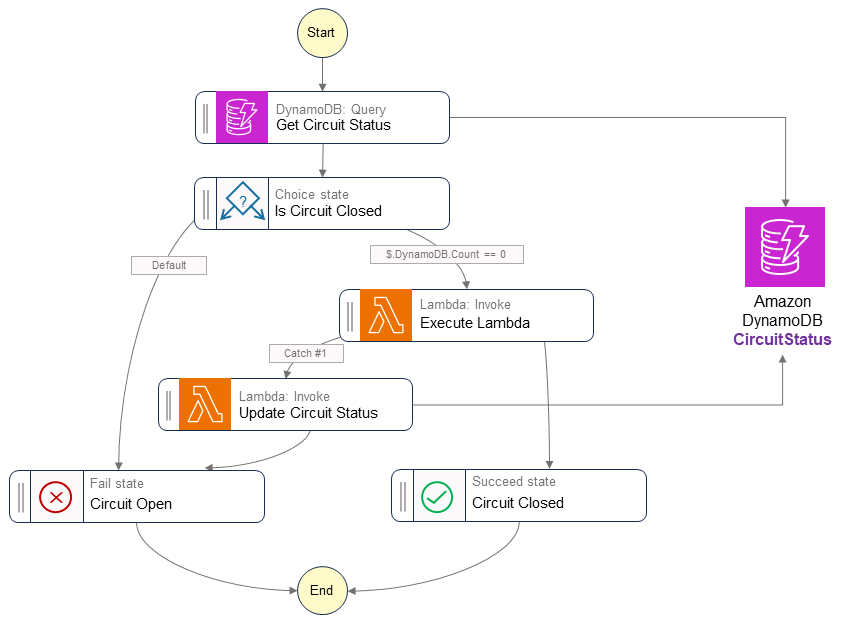
The diagram starts with a DynamoDB query named Get Circuit Status. A Choice state named Is Circuit Closed sends the flow to a Fail state when the record is open. When the count of records is zero, the flow reaches Execute Lambda, and a catch path updates the circuit status when that call fails. The Succeed state at the right marks the closed path.
Source: https://docs.aws.amazon.com/prescriptive-guidance/latest/cloud-design-patterns/circuit-breaker.html and https://docs.aws.amazon.com/step-functions/latest/dg/concepts-error-handling.html
Retry fields that the circuit breaker depends on
Step Functions retriers use fields named ErrorEquals, IntervalSeconds, MaxAttempts, BackoffRate, MaxDelaySeconds, and JitterStrategy. The documented defaults are one second for the first interval, three attempts, and a backoff rate of 2.0. JitterStrategy accepts FULL or NONE, and the default is NONE. A catcher with States.ALL must appear alone and last in the list of errors.
Rule: Set MaxAttempts and MaxDelaySeconds for every retry on a model call. Set JitterStrategy to FULL when many executions retry at the same time.
Trap: A retry with no maximum delay can wait far longer than the caller allows. Set MaxDelaySeconds so the wait stays bounded.
Amazon Bedrock Cross-Region Inference
What it is: Cross-Region inference uses an inference profile. A profile defines a foundation model and the Regions where Bedrock can route the request. Bedrock selects a Region from the profile for each request. The traffic stays on the AWS network and is encrypted in transit between Regions.
identifier"] -->|in model ID| N2["Inference profile"] N2 -->|picks a Region| N3["Region chosen per request"] N3 -->|absorbs bursts| N4["Capacity from several
Regions"] N2 -->|not a guarantee| N5["Not a guarantee of zero
errors"] N6["Bounded retries in the
caller"] -->|still needed| N1
Figure: The application passes the profile identifier and Bedrock picks a Region for each request, while the caller keeps its own retries.
The application passes the profile identifier, not the Regional model identifier, in the model ID field of the runtime call. The same code then benefits from routing across the Regions in the profile. Routing uses compute in several Regions to absorb bursts and to route around disruption within the profile. The profile does not replace application retries, so the caller still needs bounded retries.
Rule: Pass the inference profile identifier in modelId when the model must stay the same and the workload needs Regional resilience or burst absorption.
Trap: A cross-Region profile is not a guarantee of zero errors. The docs say to add bounded retries and fallback in the application when an availability target applies.
Pairs with: Geographic or global profile choice, CloudTrail for the serving Region, and retry settings in the SDK.
Limits: Inference profiles do not support Provisioned Throughput. The Regions in each profile are listed in the supported Regions table. The profile list changes over time, so check it before you use a profile in a new Region.
Source: https://docs.aws.amazon.com/bedrock/latest/userguide/cross-region-inference.html and Sundog course slides 304 and 305.
Cross-Region model deployment
What it is: Cross-Region model deployment means the same model is available in more than one Region, and the application can reach each Region. For Bedrock, the managed form is the cross-Region profile. For a self-hosted model on SageMaker AI, the team deploys the endpoint in each Region and routes traffic between them.
Regions"] -->|profile exists| N2["Use the managed profile"] N1 -->|self hosted model| N3["Endpoint in each Region"] N3 -->|routing layer| N4["Route traffic between
Regions"] N3 -->|team owns| N5["Health checks and aligned
versions"] N6["Different versions per
Region"] -->|answers differ| N4
Figure: A managed profile is the smaller design for a Bedrock model, while a self hosted model needs an endpoint in each Region.
A managed profile is the smaller design when the model is a Bedrock model. A self-hosted design needs an endpoint in each Region, a routing layer, health checks, and a way to keep model versions aligned. The team owns each of those parts. Only choose the self-hosted design when the model is not available through a profile or when hosting control is required.
Rule: For a Bedrock model with a supported profile, use the profile. For a self-hosted model, deploy the same approved version to each Region and route between them.
Trap: Deploying the same model name in two Regions does not keep them in sync. Different versions in each Region produce different answers during a failover.
Pairs with: Model Registry for version alignment, Route 53 or Global Accelerator for routing, and the Regional endpoint health checks.
Limits: Route 53 health check thresholds and failover times are Not in source for this section. The course slides say Global Accelerator provides fast regional failover for unhealthy endpoints.
Source: https://docs.aws.amazon.com/bedrock/latest/userguide/cross-region-inference.html and Sundog course slides 318 and 319.
Graceful degradation strategies
What it is: Graceful degradation keeps a service useful when the full path fails. The service serves a smaller model, a cached answer, a template answer, or a queued job. The user sees a reduced result and a clear notice, not a failure. The design decides in advance which path is acceptable for each task.
family"] N2 -->|still fails| N3["Cached or template answer"] N3 -->|work can wait| N4["Queued asynchronous job"] N4 -->|log the step| N5["Reduced result marked as
reduced"]
Figure: Each degradation step runs only when the step above it fails, and the reduced result is marked.
Start the degradation ladder with the cheapest safe path that still meets the task. For example, a short classification can fall back to a smaller model in the same family. A summary can fall back to a cached summary from an earlier run. A report that can wait goes to an asynchronous job, which writes its output to Amazon S3 when it completes.
Rule: Define the fallback for each task before an outage. Mark the reduced result as reduced, and log which step served it.
Trap: A fallback that uses the same overloaded service does not degrade anything. The second call fails for the same reason as the first.
Pairs with: Retry with bounded backoff, the circuit breaker, asynchronous endpoints for queued work, and AppConfig to switch fallback on and off.
Limits: Fallback model quality is Not in source for any specific pair. Measure it with the benchmark from Skill 1.2.1 before you rely on it.
Source: Sundog course slides 294 and 295 on caching and responsive systems, and https://docs.aws.amazon.com/sagemaker/latest/dg/async-inference.html
Skill 1.2.4: Implement customization deployment and lifecycle management
This skill asks you to deploy a customized model, update it safely, and retire it. The named items are Amazon SageMaker AI for fine-tuned models, LoRA and adapters, Model Registry for versioning, automated deployment pipelines, rollback, and lifecycle management. Each item is a stage in one release path. A version enters the registry, a reviewer approves it, a pipeline deploys it with a guardrail, and a rollback path stays ready.
registry"] -->|reviewer approves| N2["Approved status"] N2 -->|pipeline deploys| N3["Deploy with a guardrail"] N3 -->|rollback path| N4["Rollback path stays ready"] N4 -->|after traffic moves| N5["Retire the version"]
Figure: A version moves from registration through approval and a guarded deployment to a ready rollback and retirement.
Amazon SageMaker AI for fine-tuned models
What it is: Amazon SageMaker AI hosts a model that you trained or fine-tuned yourself. A real-time endpoint serves interactive requests from a chosen instance type. An asynchronous endpoint serves large or slow requests from a queue and writes results to S3. The team controls the container, the instance type, and the scaling policy.
Choose SageMaker AI when the team needs a custom container, a chosen GPU instance, or an endpoint type that Bedrock does not offer. Choose Bedrock Custom Model Import when the weights are already in a supported architecture and the application should call Bedrock. The two paths differ in who runs the hosting layer. Read the scenario for who owns the weights and who must run the container.
architecture and S3
weights| B["Bedrock Custom Model
Import"] A -->|GPU or container
control needed| C["SageMaker AI endpoint"] C -->|Adapters over one
base| D["LoRA adapter as model
package"] C -->|Full model per
release| E["Full model package"]
Figure: The weight format and the hosting need decide the path, and the release format follows.
Rule: Use SageMaker AI when the team controls the container or instance. Use Custom Model Import when the weights are supported and Bedrock calls are the goal.
Trap: Custom Model Import does not train anything. It hosts weights that already exist, so a request for new training needs a customization job or a SageMaker AI training job.
Pairs with: SageMaker Model Registry, deployment guardrails, and CloudWatch for endpoint metrics.
Limits: For Custom Model Import, the supported Regions are eu-central-1, us-east-1, us-east-2, and us-west-2. Text model weights must be under 200 GB, and multimodal weights under 100 GB. The context length must be under 128K. Batch inference and CloudFormation do not work with imported models. Embedding models are not supported.
Source: https://docs.aws.amazon.com/bedrock/latest/userguide/model-customization-import-model.html and https://docs.aws.amazon.com/sagemaker/latest/dg/async-inference.html
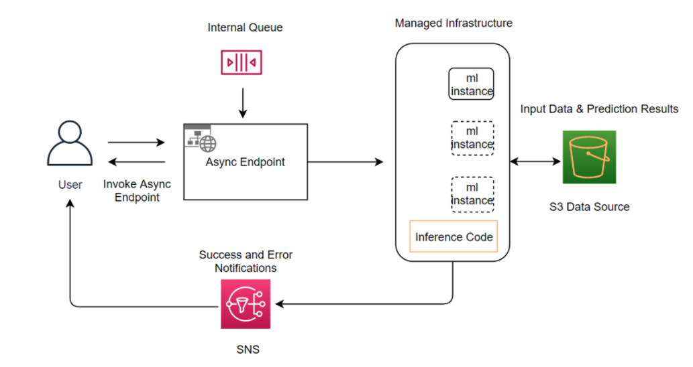
The diagram shows the caller on the left sending a request to the async endpoint. The request waits in an internal queue until managed instances can process it. Input data and prediction results move through an S3 bucket. Success and error notices can reach the user through SNS, so the caller does not hold a connection open.
Parameter-efficient adaptation with LoRA
What it is: Low-Rank Adaptation (LoRA) adds small low-rank matrices to a model, usually beside the attention weights. Training updates only those matrices, and the base model stays unchanged. At inference, the learned matrices are added to the base weights. Storage, training, and inference costs fall because the changed part is small.
base"] -->|suits a team| N2["Small LoRA adapter version"] N2 -->|load over the base| N3["Serve the tuned model"] N3 -->|rollback loads| N4["Previous adapter"] N4 -->|faster than a copy| N5["No full model copy needed"]
Figure: Each LoRA release is a small adapter over one shared base, so rollback loads the previous adapter instead of copying a model.
LoRA suits a team that tunes many versions of one large base model. Each version is a small file of matrices, not a full copy of the model. A release then becomes a choice of which adapter to load over the shared base. Rollback means loading the previous adapter, which is faster than copying a full model back into place.
Rule: Choose LoRA when many tuned versions of one base model must be stored, versioned, and rolled back cheaply.
Trap: LoRA is not an adapter layer added to the top of the model. The course slides say the two differ. Do not describe LoRA as a new layer when the scenario asks about weight matrices.
Pairs with: SageMaker AI inference components for hosting, Model Registry for versions, and the base model version recorded with each adapter.
Limits: The exact size of an adapter depends on the rank and the layers tuned. That size is Not in source for this section. Training job limits for LoRA are Not in source.
Source: Sundog course slide 28 on Low-Rank Adaptation, and Sundog course slide 317 on optimizing foundation model deployments.
Adapters
What it is: An adapter is a small set of trained weights that works with a base model. In the customization context, a LoRA adapter is the common form. The adapter stores only the tuned change, so the same base can serve several tasks or tenants.
Figure: Each adapter release names its base, and an adapter without its base cannot be loaded.
An adapter release depends on its base. The registry entry for an adapter must name the base model version, or the adapter cannot be reproduced later. Deploying an adapter means deploying the pair, the base and the adapter, to one hosting unit. Retiring the base also affects every adapter built on it.
Rule: Record the base model version with every adapter release. Retire adapters together with the base they need.
Trap: An adapter file alone is not a deployable model. Without its base, the endpoint cannot load it, so a release that stores only the adapter cannot run.
Pairs with: Inference components for per-model scaling, Model Registry metadata, and the release checklist.
Limits: The maximum number of adapters on one endpoint is Not in source for this section.
Source: Sundog course slides 28 and 317, and https://docs.aws.amazon.com/sagemaker/latest/dg/realtime-endpoints.html
SageMaker Model Registry
What it is: SageMaker Model Registry catalogs model versions in model package groups. Each training result registers as a new version. The registry stores metadata, lineage, and an approval status for each version. The approval status decides whether a pipeline may deploy the version.
version"] N4 -->|reason recorded| N6["Reason kept with the
version"]
Figure: A new version waits for manual approval, and the pipeline deploys only a version that is approved.
The documented approval statuses are PendingManualApproval, Approved, and Rejected. A new version usually starts in PendingManualApproval. A reviewer sets it to Approved after evaluation, and a deployment pipeline reacts to that change. Setting a version to Rejected stops it from deploying. A condition step in a pipeline can also set the status based on an evaluation result.
Rule: Register every release in Model Registry and deploy only Approved versions. Record the reason for each Rejected decision with the version.
Trap: S3 versioning keeps old files, but it does not hold an approval state that a pipeline checks. A version in S3 can be deployed by mistake even when no one approved it.
Pairs with: SageMaker Pipelines for the registration step, model cards for documentation, and EventBridge for approval events.
Limits: The maximum number of model package groups per account is Not in source for this section. Naming rules for package groups are Not in source.
Source: https://docs.aws.amazon.com/sagemaker/latest/dg/model-registry.html and https://docs.aws.amazon.com/sagemaker/latest/dg/model-registry-approve.html
Automated deployment pipelines
What it is: SageMaker Pipelines defines the steps of an ML workflow as a directed acyclic graph. Steps include processing, training, condition, register model, create model, and transform, according to the docs. A condition step can stop a run when a metric misses its limit. The pipeline can register a version and then deploy an approved version through a separate deployment step.
candidate"] -->|passes condition| N2["Register the version"] N1 -->|metric misses limit| N3["Run stops"] N2 -->|approval status set| N4["Approved version"] N4 -->|separate step| N5["Deploy with a guardrail"]
Figure: A condition step can stop the run, and deployment waits for the approval status before it moves a version forward.
A release pipeline has two halves. The first half trains, evaluates, and registers a candidate version. The second half runs after approval, and it deploys the approved version to the endpoint with a guardrail. Keep the halves separate so a training run never changes production by itself. The approval status is the handoff between them.
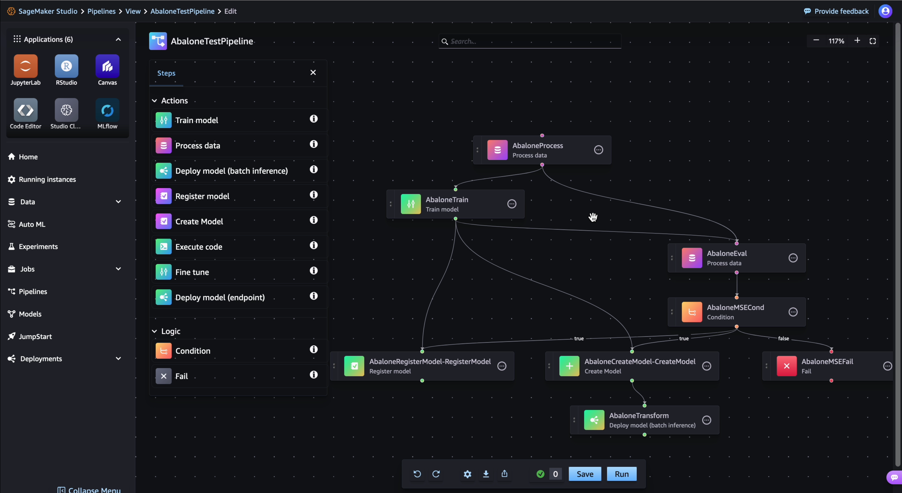
The example graph reads from left to right and top to bottom in dependency order. Processing prepares data, training produces a model, and evaluation reads the test split. The condition step decides whether the run continues to registration. Registration and model creation come after the condition, so a failed model never reaches the registry.
Rule: Use SageMaker Pipelines when the same ML steps repeat for each new version. Put a condition step before registration.
Trap: A pipeline that deploys every trained model directly skips the approval gate. Keep deployment behind the approved status, not behind the training step.
Pairs with: Model Registry approval, deployment guardrails, and EventBridge rules that start the deployment step.
Limits: The EventBridge event pattern for approval changes is Not in source for this section. The pipeline quotas are Not in source.
Source: https://docs.aws.amazon.com/sagemaker/latest/dg/pipelines-overview.html and https://docs.aws.amazon.com/sagemaker/latest/dg/model-registry-approve.html
Rollback strategies
What it is: A rollback returns production to a known good version. SageMaker AI deployment guardrails shift traffic in blue/green modes, which are all at once, canary, and linear. A CloudWatch alarm watches the new fleet during a baking period. When an alarm trips, the guardrail rolls traffic back to the blue fleet automatically.
Two rollback paths exist. The first path is automatic. It runs during the rollout, while the blue fleet still exists. The second path runs after a full shift, when an error appears later. For the second path, reject the bad version in the registry, and the pipeline redeploys the latest version that is still approved, according to the approval transition rules.
shift| C["Reject version in registry"] C -->|Pipeline redeploys
latest approved| D["Previous approved version
serves"] B -->|Blue fleet restored| D D -->|Investigate and fix| E["New candidate registered"]
Figure: Automatic rollback runs during the rollout. Registry rejection covers failures found later.
Rule: Use guardrail auto rollback for failures seen during rollout. Use registry rejection for failures found after the blue fleet has been removed.
Trap: Rejecting a version does not stop traffic that already reached it. A failed version keeps serving until the pipeline deploys the previous approved version.
Pairs with: CloudWatch alarms on error rate and latency, the registry approval history, and the release notes for each version.
Limits: The length of the baking period for each mode is set in the deployment configuration. The default value is Not in source. Exclusions from guardrails are listed on a separate page, and the full list is Not in source here.
Source: https://docs.aws.amazon.com/sagemaker/latest/dg/deployment-guardrails.html and https://docs.aws.amazon.com/sagemaker/latest/dg/model-registry-approve.html
Lifecycle management to retire and replace models
What it is: Lifecycle management tracks each model version from registration to retirement. A version can be Approved, Rejected, live, or retired. Retirement removes it from routing and keeps its record for audit. Replacement moves traffic to a newer approved version through the same guarded path.
version"] N3 -->|window closes| N4["Old version retired"] N4 -->|record kept| N5["Audit history stays
complete"]
Figure: A version moves from registration to replacement and retirement, and its record stays for audit.
Plan retirement at release time, not after an incident. Set a rule for how many earlier approved versions stay available for rollback. Keep the registry record for every retired version, because auditors ask which version served a given date. Remove the endpoint capacity once the traffic has moved and the rollback window has closed.
Rule: Keep the previous approved version until the rollback window closes. Retire a version only after traffic has moved and its record is kept.
Trap: Deleting a version from the registry removes the audit trail. Mark it Rejected or retired instead, so the history stays complete.
Pairs with: Model Registry history, deployment guardrails, and AppConfig for route changes that move traffic.
Limits: The retention period for registry records is Not in source. The number of versions per group is Not in source.
Source: https://docs.aws.amazon.com/sagemaker/latest/dg/model-registry.html and https://docs.aws.amazon.com/sagemaker/latest/dg/deployment-guardrails.html
Versus pairs: confusable choices
Each pair below has one decision tree, a three-row comparison, one question to ask yourself, and one trap. Read the question first. The question usually names the constraint that decides the pair.
constraint"]
Figure: Each versus pair starts from its one question, and the decision tree, comparison, and trap follow from it.
Geographic versus global cross-Region profile
needed"] -->|Residency names a
geography| B["Geographic profile"] A -->|Only cost and
capacity matter| C["Global profile"] B -->|Routes inside listed
Regions| D["Standard pricing"] C -->|Allow unspecified
Region in SCP| E["About 10 percent savings
in docs table"]
Figure: Residency language is the first filter. Price is the second.
- Purpose: A geographic profile keeps processing inside a geography. A global profile routes to any supported commercial Region.
- Input: Both take the profile identifier in the model ID field of the runtime call.
- Output or effect: Geographic has standard pricing and keeps data in the geography. Global is listed at about 10 percent savings, and it can route worldwide.
The one question: Does the rule name a geography, or does it name only a cost goal?
Trap: A global profile is cheaper, but it is not a residency control. When the stem names a geography, the cheaper profile breaks the rule.
Source: https://docs.aws.amazon.com/bedrock/latest/userguide/cross-region-inference.html
All at once, canary, and linear traffic shifting
accepted| B["All at once"] A -->|Small trial slice
first| C["Canary"] A -->|Many gradual steps| D["Linear"] B -->|Alarms watch baking
period| E["Blue fleet removed if
clean"] C -->|Rest of traffic
after trial| E D -->|Equal steps across
time| E
Figure: All three modes end the same way. They differ in how much traffic moves before the check.
- Purpose: All at once moves every request in one step. Canary moves a small part first, then the rest. Linear moves traffic in several set steps.
- Input: All three start from a blue fleet and a new green fleet, with CloudWatch alarms.
- Output or effect: All at once has the widest exposure if the version is bad. Linear has the most control and the longest rollout.
The one question: How much traffic may reach an unproven version before anyone checks it?
Trap: Choosing all at once because it is the fastest. The stem usually asks for a small trial slice, and all at once sends the full load to the new version at once.
Source: https://docs.aws.amazon.com/sagemaker/latest/dg/deployment-guardrails.html
Circuit breaker versus retry with backoff
repeatedly"] -->|Short blip| B["Retry with backoff only"] A -->|Long outage or
timeouts| C["Circuit breaker with
shared state"] B -->|Still failing after
bounds| C C -->|Open record stops
calls| D["Fail fast for every
execution"]
Figure: Retry handles a blip inside one call. A circuit breaker handles an outage across calls.
- Purpose: Retry with backoff waits and tries the same call again. A circuit breaker stops calls to a failing service for a set time.
- Input: Retry reads the error type of one call. A circuit breaker reads a shared status record for the dependency.
- Output or effect: Retry lowers failures from short faults. A circuit breaker lowers load on a dependency that is down.
The one question: Is the failure short and local, or does it persist across many callers?
Trap: Adding more retries to a long outage increases the load on the failing service. A circuit breaker with a shared table is the fix for that case.
Source: https://docs.aws.amazon.com/prescriptive-guidance/latest/cloud-design-patterns/circuit-breaker.html and https://docs.aws.amazon.com/step-functions/latest/dg/concepts-error-handling.html
SageMaker Pipelines versus Step Functions
workflow"] -->|Only ML steps and
registry| B["SageMaker Pipelines"] A -->|Waits and many AWS
services| C["Step Functions workflow"] B -->|Condition step gates
approval| D["Register and deploy"] C -->|Callback or wait
state| D
Figure: Pipelines runs the ML lifecycle. Step Functions coordinates a wider workflow.
- Purpose: SageMaker Pipelines runs ML steps and the registry steps. Step Functions coordinates any AWS service with retries, catches, and waits.
- Input: Pipelines takes processing, training, and model steps. Step Functions takes Lambda, service integrations, and state machine definitions.
- Output or effect: Pipelines produces registered model versions. Step Functions produces the result of a business workflow.
The one question: Does the workflow mostly train and register ML artifacts, or does it coordinate many services and human steps?
Trap: Using Step Functions for a plain train, evaluate, and register loop adds custom code that Pipelines already provides.
Source: https://docs.aws.amazon.com/sagemaker/latest/dg/pipelines-overview.html and https://docs.aws.amazon.com/step-functions/latest/dg/concepts-error-handling.html
LoRA adapters versus a full model copy
base"] -->|Small change set| B["LoRA adapters"] A -->|Retrain the whole
model| C["Full model artifact"] B -->|Version each adapter| D["Registry versions over one
base"] C -->|Store whole model
per release| E["Large storage per release"]
Figure: Adapters save storage and make rollback a load change. Full copies make rollback a copy job.
- Purpose: LoRA stores a small set of tuned matrices. A full copy stores the whole model for each release.
- Input: LoRA needs the shared base and the adapter. A full copy needs only its own artifact.
- Output or effect: LoRA lowers storage and speeds rollback. A full copy is simpler to host but costs more to store and move.
The one question: Does the change touch a small part of the model, or does it need a new model from scratch?
Trap: An adapter without its base cannot run. Registering only the adapter gives a version that fails at deployment.
Source: Sundog course slide 28, and https://docs.aws.amazon.com/sagemaker/latest/dg/model-registry.html
AppConfig versus environment variables
production"] -->|Validation and
staged rollout| B["AppConfig deployment"] A -->|Single value and no
staging| C["Environment variable
update"] B -->|Alarm breach| D["Automatic rollback"] C -->|Bad value| E["Manual fix with no alarm"]
Figure: AppConfig adds safety steps that a plain variable does not have.
- Purpose: AppConfig deploys validated configuration with strategies and monitors. Environment variables set a value for a function.
- Input: AppConfig reads a profile from a source with validators. Environment variables are typed in the function settings.
- Output or effect: AppConfig rolls back on alarm. An environment variable change takes effect with no automatic check.
The one question: Does the change need validation, staging, or automatic rollback?
Trap: Calling an environment variable change a deployment with safety. The stem asks for validation and alarm rollback, which the variable does not provide.
Source: https://docs.aws.amazon.com/appconfig/latest/userguide/what-is-appconfig.html
Custom Model Import versus a SageMaker AI endpoint
for Bedrock calls| B["Custom Model Import"] A -->|Custom container or
GPU control| C["SageMaker AI endpoint"] B -->|On-demand invoke| D["Bedrock runtime API"] C -->|Autoscaling and
endpoint types| E["Your own serving stack"]
Figure: Import moves hosting to Bedrock. A SageMaker AI endpoint keeps hosting under your control.
- Purpose: Custom Model Import hosts supported weights for Bedrock calls. A SageMaker AI endpoint hosts any container you build.
- Input: Import reads Hugging Face weights in S3. An endpoint reads a container image and model artifacts.
- Output or effect: Import is invoked through the Bedrock runtime. An endpoint is invoked through the SageMaker runtime.
The one question: Does the scenario need a container or instance that Bedrock cannot provide?
Trap: Import is not a training step. A team that needs new training must run a customization job or a training job first.
Source: https://docs.aws.amazon.com/bedrock/latest/userguide/model-customization-import-model.html
Read a long question
Each scenario below is written for practice. Underline the constraint words first. Then reject each wrong option by its type, with one reason. The answer comes last, so you can test yourself before you read it.
Figure: Each practice scenario is worked from its constraint words to the rejected option types before the answer is compared.
Scenario 1: Switch provider without redeploy
A retail app calls one chat model today. The product team wants to move a set of tenants to a different provider next week, and the change must not require a new application build. Operations also wants a validated change that rolls back on error alarms.
configuration"] N1 -->|validated change| N3["Validator before deploy"] N1 -->|rollback on alarm| N4["Alarm driven rollback"] N2 -->|combine| N5["Candidate answer"] N3 -->|combine| N5 N4 -->|combine| N5 N5 -->|test against| N6["All constraints met"]
Figure: Each constraint word in this scenario points to a configuration, validation, or rollback choice.
- Constraint words: without a new build, validated change, rolls back on alarm.
- Rejected type: a hard-coded model name in the function code. Reason: the change needs a build and a deployment.
- Rejected type: an environment variable update. Reason: it gives no validator and no alarm rollback.
- Rejected type: a new API per provider. Reason: clients must change their calls, which breaks the stable contract.
Answer: Keep one API Gateway contract, a Lambda router, and the route data in an AppConfig profile with a validator and an alarm monitor.
Rule: A switch with no build and with alarm rollback points to AppConfig for route data.
Scenario 2: Regional outage with residency
A public agency runs a citizen assistant on a Bedrock model. All processing must stay inside the European Union, and the service must keep answering during a Regional outage. The team must keep the same model.
global"] N1 -->|keep answering| N3["Retries and a degradation
path"] N1 -->|model must stay| N4["Same model through the
profile"] N2 -->|combine| N5["Candidate answer"] N3 -->|combine| N5 N4 -->|combine| N5 N5 -->|test against| N6["All constraints met"]
Figure: The residency rule, the outage target, and the fixed model each narrow the design in this scenario.
- Constraint words: stay inside the European Union, keep answering during outage, same model.
- Rejected type: a global profile. Reason: it can route outside the geography, which breaks the residency rule.
- Rejected type: a single Region with a larger quota. Reason: one Region still fails during an outage.
- Rejected type: switching to a different model. Reason: the rule says the same model must stay.
Answer: Pass the European Union geographic profile identifier as modelId, and add bounded retries with a degradation path for work that can wait.
Rule: A geography rule selects the geographic profile, and the same model stays in place.
Scenario 3: Release with rollback path
A logistics firm hosts its tuned model on an endpoint in SageMaker AI. Each new version needs reviewer approval, a small live trial before full traffic, and automatic rollback when error alarms fire. The team must keep the previous approved version ready for a week.
Figure: Each constraint word points to a registry, traffic shift, alarm, or rollback choice that the answer must include.
- Constraint words: reviewer approval, small live trial, automatic rollback, keep previous version.
- Rejected type: deploy every trained model directly. Reason: it skips the approval gate.
- Rejected type: all at once shifting. Reason: it sends full traffic before any trial.
- Rejected type: S3 versioning alone. Reason: it holds files but no approval state a pipeline can check.
Answer: Register each version in Model Registry, deploy only Approved versions through a pipeline, and use a canary guardrail with a CloudWatch alarm for rollback.
Rule: Approval state in the registry plus a guarded shift covers release control and rollback together.
Distractor patterns seen in the tests
Wrong options follow patterns. Learn the pattern, and you can reject an option even when you do not know the service detail. Each pattern below names the error and the reason it fails. Use the list as a checklist after you find the constraint.
Figure: The constraint is found first, then the pattern list is used as a checklist before the service detail is checked.
- Trap: Code change for a config change. The option asks for a redeploy when the stem asks for a switch without one. Route data belongs in configuration.
- Trap: Bigger hammer. More compute is offered for a limit that compute cannot change. A quota or timeout stays the same on a larger instance.
- Trap: Retries for a long outage. More retries add load to a failing service. A shared circuit state is the fix.
- Trap: Mixed residency and cost. A global profile is offered for a rule that names a geography. The rule decides, not the price.
- Trap: Storage as lifecycle. S3 files are offered as version control. Storage keeps objects but does not gate a deployment on approval.
- Trap: Fast shift as safe shift. All at once is offered when the stem asks for a trial slice first.
- Trap: Serverless means limitless. A function or endpoint is offered as unlimited. Every service keeps its own limits.
- Trap: Private by label. A NAT gateway or public route is offered as private access. Private access needs an interface endpoint.
- Trap: Adapter without base. An adapter-only release is offered as complete. The base is required at deployment.
- Trap: Training as import. Import is offered as a way to create new weights. Import only hosts weights that already exist.
Drill
Read each prompt and answer before you look at the next line. Each answer names the deciding constraint and the one feature it points to.
constraint"] N2 -->|points to| N3["One feature or service"] N3 -->|check next line| N4["Rule line confirms the
answer"]
Figure: Each drill prompt is answered by naming its deciding constraint before the rule line is checked.
1. A tenant route must change within minutes, with validation and rollback on alarm. Which feature holds the route?
Rule: AWS AppConfig with a validator and a CloudWatch alarm monitor.
2. A service must keep one contract for many model providers. Which edge service fits?
Rule: Put a Lambda router behind Amazon API Gateway.
3. A Bedrock model must stay the same during a Regional disruption, and the rule names one country. Which profile fits?
Rule: A geographic cross-Region inference profile, passed as modelId.
4. A caller retries a dependency that has been down for an hour across many executions. Which pattern fits?
Rule: A circuit breaker with a shared status table and an expiry time.
5. A fine-tuned model must roll out to five percent of traffic first, then roll back on alarm. Which guardrail fits?
Rule: Canary traffic shifting with a CloudWatch alarm for automatic rollback.
6. A version failed after the blue fleet was removed. How do you stop new traffic to it?
Rule: Reject the version in Model Registry, so the pipeline redeploys the latest approved version.
7. Ten tuned variants share one large base model, and each release must be cheap to store. Which technique fits?
Rule: LoRA adapters registered as versions over the shared base.
8. A customized model with supported weights must answer Bedrock calls, and the team owns no container. Which path fits?
Rule: Bedrock Custom Model Import, then invoke the imported model on demand.
9. A team must hold a release until a reviewer approves it, and the audit needs the decision recorded. Which feature fits?
Rule: Model Registry approval status, with a pipeline that deploys only Approved versions.
10. A workflow has many AWS services, a human wait, and a callback. Which orchestrator fits?
Rule: Step Functions, with a callback task for the human step.
11. Private Lambda functions must call Bedrock with no internet route. What must the VPC contain?
Rule: An interface endpoint for the Bedrock runtime service with private DNS enabled.
12. A fallback path serves a smaller model when the main model is throttled. Is that enough to keep the service available?
Trap: Not alone. The fallback must be tested for quality and must not call the same overloaded service.
Sources
Source: AWS documentation fetched for this section. The list is the set of pages whose text this section relies on.
patterns"] N1 -->|course slides| N7["Course slides for the
module"]
Figure: The sources group pages by the service each part of the section relies on.
- https://docs.aws.amazon.com/bedrock/latest/userguide/cross-region-inference.html
- https://docs.aws.amazon.com/bedrock/latest/userguide/prov-throughput.html
- https://docs.aws.amazon.com/bedrock/latest/userguide/model-customization-import-model.html
- https://docs.aws.amazon.com/bedrock/latest/userguide/vpc-interface-endpoints.html
- https://docs.aws.amazon.com/apigateway/latest/developerguide/api-gateway-api-usage-plans.html
- https://docs.aws.amazon.com/appconfig/latest/userguide/what-is-appconfig.html
- https://docs.aws.amazon.com/appconfig/latest/userguide/appconfig-integration-lambda-extensions.html
- https://docs.aws.amazon.com/step-functions/latest/dg/concepts-error-handling.html
- https://docs.aws.amazon.com/prescriptive-guidance/latest/cloud-design-patterns/circuit-breaker.html
- https://docs.aws.amazon.com/sagemaker/latest/dg/async-inference.html
- https://docs.aws.amazon.com/sagemaker/latest/dg/deployment-guardrails.html
- https://docs.aws.amazon.com/sagemaker/latest/dg/model-registry.html
- https://docs.aws.amazon.com/sagemaker/latest/dg/model-registry-approve.html
- https://docs.aws.amazon.com/sagemaker/latest/dg/pipelines-overview.html
- https://docs.aws.amazon.com/vpc/latest/privatelink/what-is-privatelink.html
- Sundog course slides for this module, pages 28, 288 to 295, 304, 305, 317 to 319, 361 to 363 (second source of facts).
Task 1.3: Implement data validation and processing pipelines for FM consumption.
After this section, you can read a data pipeline scenario for a foundation model, find the constraint that decides the validation and processing design, and reject each wrong option with one reason. You will choose a validation service, a parser or transcription step for each media type, a request format for each model API, and a network path for each component.
consumer"] -->|media type| N2["Parser or transcription
step"] N1 -->|check before model| N3["Validation service"] N1 -->|API contract| N4["Request format per model"] N1 -->|network path| N5["Network path per component"]
Figure: The data type and the consumer decide the validation service, the parser, the request format, and the network path.
The deciding constraint
Start from the data type and the consumer. Three inputs decide most designs: the media type, the check that must pass before the model sees the data, and the time limit for the answer. Read the question for those three inputs before you read the options.
The tree below starts from a pipeline input and ends at a service family. Use it as a first filter. Then check the signal words for the branch you chose.
table| B["Glue Data Quality on Data
Catalog"] A -->|rules inside an ETL
job| C["Glue Data Quality in ETL"] A -->|custom business
logic| D["Lambda validation function"] A -->|audio files| E["Amazon Transcribe"] A -->|PDF tables or
scanned images| F["Bedrock Data Automation or
FM parser"] A -->|tabular features for
training or scoring| G["SageMaker Data Wrangler or
Processing"]
Figure: First filter for a validation or processing service, starting from the pipeline input.
Signal words for each branch:
- Cataloged table, scheduled checks, rule suggestions: Glue Data Quality on the Data Catalog entry point.
- Failed row list, quarantine inside a job: Glue Data Quality in an ETL job.
- Visual prep, insights, export to a pipeline: SageMaker Data Wrangler.
- Custom script, own container, batch output in S3: SageMaker Processing.
- Call recording, interview, voicemail: Amazon Transcribe.
- Scanned table, chart, image inside a PDF: a multimodal parser.
- Exact field names for one API: a request body for Converse or InvokeModel.
- Typed spans with offsets: Amazon Comprehend.
Skill 1.3.1: Create comprehensive data validation workflows to ensure data meets quality standards for FM consumption
Validation runs before chunking, embedding, or prompt assembly. A bad record that reaches the model can cause a wrong answer or a leaked value. Each check needs a rule, a result, and an action. The four services below cover the rule, the visual prep, the custom code, and the signal that tells an operator the check failed.
embedding"] -->|each check has| N2["Rule result and action"] N2 -->|rules| N3["Glue Data Quality"] N2 -->|visual prep| N4["Data Wrangler"] N2 -->|custom code| N5["Lambda validator"] N2 -->|operator signal| N6["CloudWatch metrics and
alarms"]
Figure: Each validation check needs a rule, a result, and an action, and four services cover the different parts.
AWS Glue Data Quality
Fact: AWS Glue Data Quality is a serverless service for measuring and monitoring data quality. It uses DQDL, a domain specific language, to write rules. It is built on the open source DeeQu framework.
Fact: The service has two entry points. The Data Catalog entry point evaluates tables and supported Athena views. The ETL entry point runs inside AWS Glue ETL jobs and can filter or label bad rows.
Fact: Rule recommendations are supported for the Data Catalog entry point. They are not supported for the ETL entry point. The ETL entry point can identify the records that failed a check.
Fact: The documented service limits are 2,000 rules in one ruleset and a ruleset size of 65 KB. A ruleset must be associated with a table in the Data Catalog.
DQDL is case sensitive. A ruleset is a list named Rules that holds comma separated rules. Each rule has a rule type, its parameters, and an expression that returns true or false. A completeness check, a uniqueness check, and a column value range check are all written this way.
Rule: Use the Data Catalog entry point when the data is already cataloged and you need suggested rules.
Rule: Use the ETL entry point when the answer must list the failed rows for quarantine or repair.
Composite rules need one setting. By default, AWS Glue Data Quality evaluates each rule across the whole table first, then combines the results. To check a whole row, set the row evaluation option. The row option changes the result of an OR between two column checks.
Trap: Nested or list-type data cannot be evaluated directly. Flatten the structs first, then write the rules on the flat columns.
Trap: A recommended ruleset is a starting point. Review each rule before you treat it as a release gate.
When to choose it: a table in the lake is the input, the checks are column rules, and a scheduled run must publish scores. The score is the share of rules that pass. The service publishes results to Amazon S3, Amazon CloudWatch, and Amazon EventBridge.
When not to choose it: the check needs an external API call, a model judgment, or a multi-step decision. Use a Lambda function for those checks.
What it pairs with: an AWS Glue crawler that catalogs the S3 prefix, an EventBridge rule that starts remediation after a run, and a Step Functions workflow for the full pipeline.
Source: https://docs.aws.amazon.com/glue/latest/dg/glue-data-quality.html and https://docs.aws.amazon.com/glue/latest/dg/dqdl.html
retrieval"] -->|table already in
catalog| B["Catalog entry point"] A -->|rows inside a job| C["ETL entry point"] B -->|need suggested rules| D["Rule recommendations"] C -->|need failed row list| E["Row level results"] D --> F["Ruleset evaluation run"] E --> F F -->|scores and outputs| G["CloudWatch and S3 outputs"]
Figure: Choosing the Glue Data Quality entry point from the job shape.
SageMaker Data Wrangler
Fact: Data Wrangler imports data from Amazon S3, Amazon Athena, Amazon Redshift, Snowflake, and Databricks. It applies transforms in a visual data flow. It also produces a data quality and insights report.
Fact: AWS documents that Data Wrangler has been integrated into Amazon SageMaker Canvas. The Canvas experience adds a natural language interface for data exploration.
Fact: A flow can be exported to an S3 bucket, to SageMaker Pipelines, to SageMaker Feature Store, or to a Python script.
Data Wrangler suits a data scientist or analyst who must prepare tabular data with little code. The flow records each step, so a reviewer can see the transforms. The export step decides how the flow runs again.
Rule: Choose Data Wrangler when a person must review the transforms and the output is a repeatable flow.
Trap: A visual flow is not the production control by itself. Export the flow to a pipeline or a script before a scheduled run depends on it.
Trap: Data Wrangler is not the choice for unstructured PDFs or audio. Use a parser or a transcription service for those files.
Limits for flow size are Not in source. Plan the size from a sample run before a full load.
Source: https://docs.aws.amazon.com/sagemaker/latest/dg/data-wrangler.html
Custom Lambda validation functions
A Lambda validator runs your code for each object or record. Use it for a rule that DQDL cannot express. Examples are a value that must match a code in a reference table, a rule that calls a private system, or a check that routes a record to a quarantine prefix.
Fact: A Lambda function that reaches private resources must be attached to a VPC through private subnets and security groups. Attaching a function to a VPC removes its default internet access.
Fact: The AWSLambdaVPCAccessExecutionRole managed policy grants the network interface permissions that a VPC function needs.
The validator must return the same result for the same input. Keep the rule list in code or in a versioned table. Write the result, the rule name, and the record key to a log or an S3 prefix.
Rule: Use Lambda when the check needs your own code, an external lookup, or a routing decision.
Trap: A custom validator recreates scoring, result storage, and eventing that Glue Data Quality already provides for table rules. Build it only when the rule cannot be written in DQDL.
Trap: A Lambda function in a VPC has no path to the internet without a NAT gateway or endpoints. A call to an external API then fails with a timeout.
Source: https://docs.aws.amazon.com/lambda/latest/dg/configuration-vpc.html
Amazon CloudWatch metrics
Fact: Glue Data Quality integrates with Amazon CloudWatch for both entry points. SageMaker Processing jobs also publish CloudWatch logs and metrics, including CPU, GPU, memory, and disk metrics.
A metric is a number over time. A validation run can publish a pass rate, a failed row count, or a latency value. An alarm on that value tells an operator when the pipeline must stop.
Figure: A validation metric that drives an alarm and a pause.
Rule: Publish a metric for trends and alarms. Store record level failures in S3 or in the ETL output.
Trap: A metric shows how many records failed, not which records. An answer that asks for the failed rows needs row level results.
Source: https://docs.aws.amazon.com/glue/latest/dg/glue-data-quality.html and https://docs.aws.amazon.com/sagemaker/latest/dg/processing-job.html
Skill 1.3.2: Create data processing workflows to handle complex data types including text, image, audio, and tabular data
Each media type needs a conversion step before embedding. Plain text files need the least work. PDFs with tables, scanned pages, and images need a multimodal parser. Audio needs speech to text. Tabular data needs a batch job or a visual flow that shapes the columns.
Figure: Each media type takes its own conversion step before embedding, from plain text to tabular prep.
Amazon Bedrock multimodal models
Fact: The default Bedrock parser reads only text. It handles txt, md, html, doc, docx, xls, xlsx, and pdf files. It has no usage charge.
Fact: The Bedrock Data Automation parser and the foundation model parser handle figures, charts, tables, and images. They process PDF, JPEG, and PNG files. They can store extracted images and tables in an S3 destination.
Fact: Bedrock Data Automation charges per page or per image. It needs no prompt. The foundation model parser charges by input and output tokens. It lets you customize the extraction prompt.
Fact: The foundation model parser has a total file size limit of 100 GB across all files in the data source.
A multimodal model reads an image or a document page and returns text or structured output. The Converse page documents the message structure, tool use, and guardrails. The exact content block names for images and documents are Not in source for this section.
Rule: Choose a multimodal parser when the answer sits in a table, a chart, or an image inside a PDF.
Rule: Choose the foundation model parser when the extraction needs a custom instruction. Choose Bedrock Data Automation when no instruction is needed.
Trap: Once a multimodal parser is selected, it parses every PDF in the data source, including text only PDFs. Those files still incur parser charges.
Trap: The default parser on a PDF of rate tables returns text only. The table values are not indexed as table content.
Exam tip: The phrase "custom instruction" points to the foundation model parser. The phrase "no prompt" points to Bedrock Data Automation.
Source: https://docs.aws.amazon.com/bedrock/latest/userguide/kb-advanced-parsing.html, https://docs.aws.amazon.com/bedrock/latest/userguide/bda.html, and https://docs.aws.amazon.com/bedrock/latest/userguide/conversation-inference.html
SageMaker Processing
Fact: SageMaker Processing runs data pre processing, post processing, feature engineering, and model evaluation tasks on managed infrastructure. It runs as processing jobs.
Fact: The input data must be in an S3 bucket. Amazon Athena and Amazon Redshift can also be input sources. The output is written to an S3 bucket that you specify.
Fact: You can use built-in processing containers or your own container. The job sends CloudWatch logs and metrics.
The job starts compute for the run and releases it when the run ends. The pattern suits a large transform that must run as a batch step in a pipeline.
script"] --> D["S3 output prefix"]
Figure: A SageMaker Processing job from input prefix to output prefix.
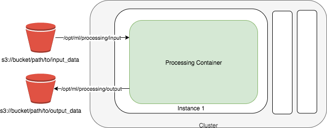
The diagram shows the job as a short-lived unit. SageMaker AI takes the script, copies input from S3, and starts the container on managed instances. The instances are released after the run finishes. The output goes to the S3 location named in the request, so the next step reads from S3 and not from the job instance.
Rule: Choose Processing for a large custom transform or a Spark workload that runs as a batch step.
Trap: A real time endpoint is not a batch processor. A nightly batch sent to a real time endpoint pays for the endpoint all night and risks throttling.
Limits for job duration are Not in source for this section.
Source: https://docs.aws.amazon.com/sagemaker/latest/dg/processing-job.html
AWS Transcribe
Fact: Amazon Transcribe converts speech in audio to text. It runs batch transcription on media files in S3. It runs streaming transcription on a live media stream.
Fact: Batch media formats are AMR, FLAC, M4A, MP3, MP4, Ogg, WebM, and WAV. AWS recommends FLAC or WAV with PCM 16-bit encoding. Streaming formats are FLAC, Ogg Opus, and PCM.
Fact: The transcript output is JSON. It has the full text, one entry for each word or punctuation mark with start time, end time, and confidence, and audio segments with start and end times.
Fact: Amazon Transcribe supports single channel and dual channel media. Media with more than two channels is not supported. Speaker partitioning and channel identification are optional features.
Fact: Sample rates for telephone audio are typically 8,000 Hz. Sample rates from 16,000 Hz to 48,000 Hz are supported for high fidelity audio. A batch job sample rate is optional but must match the audio.
Fact: Batch transcripts go to S3. A temporary URI for a default bucket is valid for 15 minutes. Transcripts in the default bucket expire after 90 days.
Rule: Choose batch when the audio already sits in S3 and the answer can wait. Choose streaming when the speaker is still talking.
Trap: Streaming is for a live stream, not for a file that already exists. A file in S3 goes to a batch job.
Trap: A recording with more than two channels is not supported. Split the channels before the job, or use the supported channel options.
Exam tip: Words such as "recorded calls" or "existing files" point to batch. Words such as "live" or "while the caller speaks" point to streaming.
Source: https://docs.aws.amazon.com/transcribe/latest/dg/what-is.html and https://docs.aws.amazon.com/transcribe/latest/dg/how-input.html
Advanced multimodal pipeline architectures
A multimodal pipeline has a fixed order of stages. Each stage writes its output to S3 or to a table, so a failed stage can restart without a full rerun. The order is upload, parse or transcribe, normalize, validate, embed, and index. Each output keeps a pointer to the source object and its version.
Figure: Stage order for a multimodal pipeline that feeds an FM.
Long files need an asynchronous path. SageMaker AI asynchronous inference queues a request, reads the payload from S3, and writes the result to S3. The request is designed for large payloads, long processing times, and cases where near real time is enough.
Fact: Asynchronous inference supports payloads up to 1 GB and processing times up to one hour. It can scale the instance count to zero when there are no requests.
The diagram shows the request path. The caller sends the request, and the endpoint queues it for the managed instances. The input and the output both sit in S3, and SNS can report success or error. The caller reads the output location from S3 later, so the request does not hold a connection open.
Rule: Use an asynchronous path for large media or long runs, and keep the parse step outside the request path.
Trap: A synchronous API call with a long file times out at the API layer. Move the work to a queue or an asynchronous endpoint first.
Source: https://docs.aws.amazon.com/sagemaker/latest/dg/async-inference.html
Network placement for validation and processing
Many pipelines fail in the network before they fail in the code. A Lambda validator in a private subnet needs a route to Amazon Bedrock, to S3, and to any other AWS service it calls. The three paths below cover AWS service calls without an internet route.
subnet"] N -->|through internet
gateway| I L["Lambda in private subnet"] -->|Bedrock calls| E["Interface endpoint
bedrock-runtime"] L -->|S3 reads and writes| G["Gateway endpoint for S3"] L -->|other internet calls| N E --> B["Amazon Bedrock runtime"] G --> S["Amazon S3 bucket"] SG["Security group allows
HTTPS"] -->|protects| E
Figure: Lambda in a private subnet reaching Bedrock and S3 through endpoints, with a NAT gateway only for other internet calls.
Interface endpoints for Amazon Bedrock
Fact: An interface endpoint built on AWS PrivateLink gives a private connection from your VPC to Amazon Bedrock. Instances in the VPC do not need public IP addresses. No internet gateway, NAT device, VPN, or Direct Connect connection is needed for the Bedrock calls.
Fact: The runtime endpoint suffix is bedrock-runtime. The Converse and ConverseStream operations are available on bedrock-runtime only.
The endpoint creates a network interface in each subnet you enable. With private DNS enabled, the normal Regional DNS name resolves to the endpoint and the code needs no change. Without private DNS, the code must set the endpoint URL.
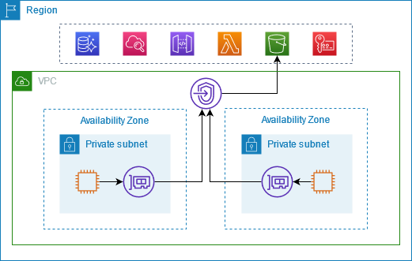
The image shows two private subnets. Each subnet has an instance that sends traffic to an endpoint network interface inside the VPC. The endpoint then reaches the AWS service without a public route. Use this pattern for the Lambda validator and for the processing workers that call Bedrock.
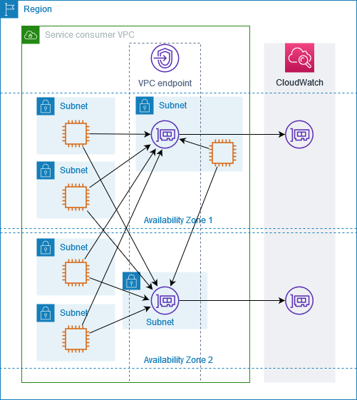
The second image shows the endpoint as a set of network interfaces, one in each Availability Zone. Subnets in both zones send traffic to the endpoint, and the endpoint reaches the service. Each zone has its own interface, so the design does not depend on one zone for the AWS service path.
Rule: Place an interface endpoint for bedrock-runtime in every subnet that holds a Bedrock caller.
Trap: An endpoint policy that allows only some actions blocks the other actions. Check the policy when a call returns an access error.
Source: https://docs.aws.amazon.com/bedrock/latest/userguide/vpc-interface-endpoints.html and https://docs.aws.amazon.com/vpc/latest/privatelink/privatelink-access-aws-services.html
Gateway endpoint for Amazon S3
Fact: A gateway VPC endpoint for S3 adds a route to the route table. It has no additional charge. It works only in the Region where it is created.
Fact: A gateway endpoint does not allow access from on-premises networks, from peered VPCs in other Regions, or through a transit gateway. An interface endpoint is needed for those paths, and it has an additional cost.
Fact: The security group and the network ACL for the subnet must allow traffic to and from S3. A security group can reference the S3 prefix list.
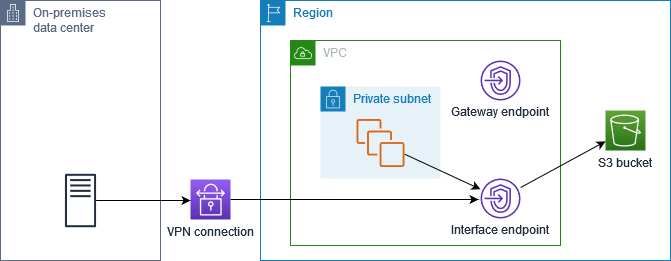
The diagram shows the on-premises path. Traffic from the data center crosses a VPN into an interface endpoint, and the endpoint reaches the bucket. The gateway endpoint sits in the VPC as its own element, and the private subnet arrow in this example points to the interface endpoint. The point for the exam is that the on-premises path needs the interface endpoint, because a gateway endpoint does not serve it.
Rule: Use a gateway endpoint for S3 when the caller is inside the VPC, and add an interface endpoint only for on-premises or peered callers.
Trap: A gateway endpoint is not reachable from on-premises networks through a VPN. A design that reads an S3 bucket from a data center through a VPN needs the interface endpoint.
Source: https://docs.aws.amazon.com/vpc/latest/privatelink/vpc-endpoints-s3.html
NAT gateway for outbound internet
Fact: A public NAT gateway sits in a public subnet and has an Elastic IP address. It lets instances in private subnets start outbound connections to the internet. Outside services cannot start a connection to those instances.
Rule: Use a NAT gateway only for calls that must leave to the internet, such as a third party API.
Trap: A NAT gateway is not the path for Bedrock or S3 calls when an endpoint exists. Sending those calls through NAT adds a public path that the design did not need.
Source: https://docs.aws.amazon.com/vpc/latest/userguide/vpc-nat-gateway.html
Security groups for the validation path
Security groups control the traffic of Lambda network interfaces and the traffic that reaches an endpoint. Lambda takes subnets and security groups in its VPC settings. The rule must allow HTTPS from the Lambda security group to the endpoint. The S3 gateway path must allow traffic to and from the S3 prefix list.
Rule: Name the security group in the Lambda VPC settings, and allow HTTPS from that group on the endpoint.
Trap: Opening the whole VPC CIDR on the endpoint group is broader than the design needs. A group reference is the narrower rule.
Source: https://docs.aws.amazon.com/lambda/latest/dg/configuration-vpc.html and https://docs.aws.amazon.com/vpc/latest/privatelink/vpc-endpoints-s3.html
X versus Y: confusable pairs
Each pair below appears in the same family of questions. Each pair has a decision tree, a three row comparison, the question to ask yourself, and the trap.
Figure: Each confusable pair follows the same order from the decision tree to the trap.
Glue Data Quality versus a custom Lambda validator
rule| B["Glue Data Quality ruleset"] A -->|needs custom code or
external call| C["Lambda validator"] B -->|cataloged table scan| D["Catalog evaluation"] C -->|own metrics and
results code| E["Team maintains outputs"]
Figure: Choosing a managed rule set or custom code for a validation rule.
- Purpose: Glue Data Quality checks a table against declared rules. A Lambda validator runs any logic you write.
- Input: Glue Data Quality reads a cataloged table or an ETL frame. A Lambda validator reads a record or an object from an event.
- Output: Glue Data Quality writes scores and results to S3, CloudWatch, and EventBridge. A Lambda validator writes whatever you code.
Exam tip: Ask yourself whether DQDL can express the rule with a table or a column check. If it can, the managed service is the first choice.
Trap: A custom validator is not wrong. It is wrong when the stem asks for scoring and lineage with the least operational work.
Data Wrangler versus SageMaker Processing
and insights| B["Data Wrangler flow"] A -->|scripted custom
container| C["SageMaker Processing job"] B -->|export to pipeline| D["SageMaker Pipelines"] B -->|export as script| E["Python script output"] C -->|results written| F["S3 output location"]
Figure: Choosing a visual flow or a scripted batch job for tabular prep.
- Purpose: Data Wrangler gives a visual flow with insights and transforms. Processing runs your script or container as a batch job.
- Input: Data Wrangler imports from S3, Athena, Redshift, Snowflake, or Databricks. Processing reads S3 objects, Athena, or Redshift.
- Output: Data Wrangler exports a flow to S3, Pipelines, Feature Store, or a script. Processing writes results to an S3 output location.
Exam tip: Ask yourself whether a person reviews the transforms interactively. If yes, the stem points to Data Wrangler. If the stem names a container or a script, it points to Processing.
Trap: Processing does not give a visual insights report. A stem that asks for visual review of transforms does not fit Processing alone.
Bedrock Data Automation versus the foundation model parser
prompt| C["Bedrock Data Automation"] A -->|tables with custom
instruction| D["Foundation model parser"] B -->|tables lost| E["Poor table retrieval"] C -->|one parser for all
PDFs| F["Every PDF uses this parser"] D -->|token based cost| F
Figure: Choosing a multimodal parser for PDFs and images.
- Purpose: Bedrock Data Automation extracts elements with no prompt. The foundation model parser extracts elements with a prompt you can change.
- Input: Both read PDF, JPEG, and PNG files. Both can store extracted images and tables in S3.
- Output: Bedrock Data Automation charges per page or image. The foundation model parser charges by tokens.
Exam tip: Ask yourself whether the stem gives a custom extraction instruction. If it does, pick the foundation model parser.
Trap: Either multimodal parser applies to every PDF in the source. A design that needs a text only parser for some PDFs and a multimodal parser for others cannot use one setting for both.
Converse versus InvokeModel
for models| B["Converse or ConverseStream"] A -->|model defined body
fields| C["InvokeModel with model
JSON"] B -->|incremental output| D["ConverseStream"] C -->|body format per
model| E["Model documentation sets
fields"]
Figure: Choosing the Bedrock request operation from the body shape.
- Purpose: Converse gives one message structure for models that support messages. InvokeModel sends a body in the format that one model defines.
- Input: Converse takes a list of messages with a role and content blocks, plus optional system text and inference settings. InvokeModel takes a model specific JSON body.
- Output: Converse returns a message. ConverseStream returns incremental events. InvokeModel returns the model body, and InvokeModelWithResponseStream returns a stream.
Exam tip: Ask yourself whether the stem asks for one format across several models. If yes, Converse is the answer. If the stem names a model specific field, InvokeModel with that model body is the answer.
Trap: A Converse body sent to InvokeModel fails because the model expects its own body fields.
Comprehend entities versus Bedrock text reformatting
offsets| B["Comprehend DetectEntities"] A -->|need rewritten clean
text| C["Bedrock text reformatting"] A -->|need fixed codes or
units| D["Lambda normalization"] B -->|filter by confidence
score| E["Entity list kept"] C -->|check output schema| F["Lambda validator after
model"]
Figure: Choosing an entity extractor, a model rewrite, or deterministic code for messy text.
- Purpose: Comprehend finds named entities and their types. Bedrock rewrites text into another form. Lambda applies fixed rules.
- Input: Comprehend reads text. Bedrock reads a prompt with the text. Lambda reads the record fields.
- Output: Comprehend returns entity text, type, score, and offsets. Bedrock returns generated text. Lambda returns the normalized record.
Exam tip: Ask yourself whether the output must point to exact character positions. If it must, Comprehend gives the offsets. A generated rewrite does not.
Trap: A model rewrite can add a value that the source did not contain. Validate the output against the schema before the next step.
Transcribe batch versus streaming
stream| D B -->|supported container
formats| E["AMR FLAC M4A MP3 MP4 Ogg
WebM WAV"]
Figure: Choosing batch or streaming transcription from the input source.
- Purpose: Batch transcribes stored media files. Streaming transcribes media while it arrives.
- Input: Batch reads S3 media files. Streaming reads a media stream in a supported format.
- Output: Batch writes a JSON transcript to S3. Streaming returns transcript events on the same stream.
Exam tip: Ask yourself whether the audio already exists as a file. If yes, the answer is batch.
Trap: A streaming design for recorded files adds a stream producer that the stem did not ask for.
Interface endpoint versus gateway endpoint
service"] -->|S3 from inside the
VPC| B["Gateway endpoint for S3"] A -->|service needs
private IP access| C["Interface endpoint
PrivateLink"] A -->|S3 from on premises
over VPN| D["Interface endpoint for S3"] B -->|route table entry
only| E["No additional endpoint
charge"] C -->|network interface
per subnet| F["Additional cost per
interface endpoint"]
Figure: Choosing a gateway or an interface endpoint for a private path.
- Purpose: A gateway endpoint adds a route for S3 in the VPC. An interface endpoint adds a network interface with a private IP address.
- Input: A gateway endpoint serves callers in the VPC and the Region. An interface endpoint serves callers in the VPC and also on premises or peered networks.
- Output: A gateway endpoint has no additional charge. An interface endpoint has an additional cost.
Exam tip: Ask yourself where the caller sits. A caller in the VPC uses the gateway for S3. A caller across a VPN needs the interface endpoint.
Trap: A gateway endpoint does not serve a caller over a VPN, even when the bucket is the same.
Real time endpoint versus asynchronous inference
model"] -->|low latency
interactive| B["Real time endpoint"] A -->|large payload or
long run| C["Asynchronous inference"] C -->|input placed in S3| D["Request references S3
object"] C -->|result written to S3| E["Output location returned"] B -->|response in same
call| F["Caller waits for result"]
Figure: Choosing a synchronous or asynchronous endpoint from payload and latency.
- Purpose: A real time endpoint answers a request in the same call. Asynchronous inference queues a request and writes the result to S3.
- Input: A real time endpoint takes the payload in the request. Asynchronous inference reads the payload from S3.
- Output: A real time endpoint returns the response to the caller. Asynchronous inference writes the result to S3 and can send notifications.
Exam tip: Ask yourself whether the caller must wait for the answer. If not, and the payload is large, the asynchronous pattern fits.
Trap: The real time payload limit is Not in source for this section. Do not choose a real time endpoint from a payload size that the stem does not give.
Skill 1.3.3: Format input data for FM inference according to model-specific requirements
Each model API expects a body with exact fields. A wrong shape fails before the model runs, or it runs with a field the model ignores. The three patterns below cover the Bedrock JSON request, the SageMaker endpoint input, and the dialog history.
fields"] -->|Bedrock request| N2["Converse or InvokeModel
JSON"] N1 -->|endpoint input| N3["Schema check before the
call"] N1 -->|dialog history| N4["Trim history and keep
system apart"] N2 -->|needs model field| N5["InvokeModel body for one
model"]
Figure: Three formatting patterns cover the Bedrock request body, the endpoint input, and the dialog history.
JSON formatting for Amazon Bedrock API requests
Fact: The Converse API uses a message structure. Each message has a role and a list of content blocks. The AWS documentation example uses a user message with one text block.
Fact: The Converse API works with models that support messages. Model specific inference parameters can go in a model specific field inside the request.
Fact: InvokeModel takes a body in the format defined by the model. The AWS CLI example for an Anthropic model body uses fields such as the model version string, a maximum token count, and a list of messages.
The request is JSON in both operations. The difference is who defines the fields. Converse defines one shape for many models. InvokeModel uses the shape of the model you call.
Rule: Use Converse for chat requests across models. Use InvokeModel only when the required field exists in the model body and not in Converse.
Trap: A body that works for one model fails for another model in InvokeModel. A stem that changes the model ID needs a body check.
Trap: The Converse operation is available on the bedrock-runtime endpoint only. A control plane endpoint does not serve the call.
Source: https://docs.aws.amazon.com/bedrock/latest/userguide/conversation-inference.html and https://docs.aws.amazon.com/bedrock/latest/userguide/vpc-interface-endpoints.html
Structured data preparation for SageMaker AI endpoints
Fact: A SageMaker AI real time endpoint is for low latency interactive requests. It can autoscale and can be monitored with enhanced metrics.
Fact: For asynchronous inference, the request payload is placed in S3 and a pointer to it is sent in the request. The result is placed in S3. The documented payload limit is up to 1 GB.
The input must match the schema that the model container expects. Keep the column names, the order, the types, and the encoding the same as in training. Put a schema check in front of the endpoint. A check that runs once per file catches most format errors before the endpoint call.
The real time payload size limit is Not in source for this section. Confirm the limit in the endpoint documentation before the design depends on it.
Rule: Validate the schema before the call. Use asynchronous inference for large or slow inputs and read the result from S3.
Trap: Nested JSON sent to a container that expects flat rows fails at the model step. Flatten the record in the preparation step.
Source: https://docs.aws.amazon.com/sagemaker/latest/dg/realtime-endpoints.html and https://docs.aws.amazon.com/sagemaker/latest/dg/async-inference.html
Conversation formatting for dialog applications
A dialog application sends the stored turns with each request. Each turn needs a role, usually a user or an assistant role. The system instruction stays separate from the turns. Old turns must be trimmed or summarized before the context window fills.
Fact: The course slides advise summarizing or dropping older conversation history to reduce tokens. They also advise limiting the response size with a maximum token setting or with a length instruction in the prompt.
A good sequence keeps the latest turns in full. It summarizes older turns into one short message. It adds the system instruction once, at the top of the request. Each step is a plain data transform, so it can run in Lambda.
Figure: Order of steps that format a dialog history before a Converse call.
Rule: Keep system instructions separate from turns. Summarize older turns and keep the latest turns in full.
Trap: Appending the full history on every turn grows the input cost and the latency. It can also push the answer out of the context window.
Source: course slide extract, page 287, and https://docs.aws.amazon.com/bedrock/latest/userguide/conversation-inference.html
Skill 1.3.4: Enhance input data quality to improve FM response quality and consistency
Cleaning changes the text before it becomes a prompt or an embedding source. A cleaned field gives the same answer each time. A messy field gives a different answer when a wording changes. The three services below clean the data in different ways.
model"] N4 -->|same output| N6["Consistent cleaned field"]
Figure: Each cleaning service fits a different kind of rule, and model rewrites need a schema check afterward.
Amazon Bedrock text reformatting
A model can rewrite messy text into a standard form. It can expand abbreviations, remove duplicate lines, or turn a paragraph into a list of fields. The model does this well when the rule is about meaning and not about an exact code.
The output is not exact. A model can add a value or change a unit. Use a schema check after the model call. The check should reject any field that is not in the allowed set.
Rule: Use a Bedrock call to reformat text when the rule is about meaning. Validate the output with a schema check before the next step.
Trap: Asking the model to fix a code or a unit gives a plausible value, not a verified value. Use a lookup table for exact codes.
Source: https://docs.aws.amazon.com/bedrock/latest/userguide/conversation-inference.html
Amazon Comprehend entity extraction
Fact: Comprehend returns entities with the text, the type, a score, and begin and end offsets. The entity types include person, location, organization, date, quantity, title, event, commercial item, and other.
Fact: Entity detection runs as a synchronous operation on a document, as a batch operation on several documents, or as an asynchronous job. The asynchronous job writes its output to a file.
Use the score to filter weak matches. The threshold is a design choice. Comprehend reports a confidence score, so the threshold can be tuned against labeled examples. Input size limits are Not in source for this section.
Rule: Use Comprehend when the output must be typed spans with offsets, and keep only entities above your chosen score threshold.
Trap: Comprehend knows the standard entity types. It does not know an internal part number unless a custom model is trained for it. Use a lookup list for internal codes.
Source: https://docs.aws.amazon.com/comprehend/latest/dg/how-entities.html
Lambda data normalization
A Lambda function normalizes records with fixed rules. Typical steps trim whitespace, map variant spellings to one canonical name, convert units, parse dates to one format, and reject a record that lacks a required key. The same input gives the same output on every run.
Rule: Normalize with Lambda when the mapping is a fixed table or a fixed formula. Put the table in code or in a versioned store.
Trap: A normalization step that calls a model for each record is slower and less consistent than a lookup. Choose a model only for meaning-based rewrites.
Trap: A normalization function inside a VPC needs the same endpoint and NAT planning as any other VPC function.
Source: https://docs.aws.amazon.com/lambda/latest/dg/configuration-vpc.html
Read a long question
Each worked scenario below is original. Read the scenario, mark the constraint words, and eliminate each wrong option with one reason. Then compare your answer with the one given.
each"] N3 -->|one left| N4["Option that fits all
constraints"] N4 -->|compare| N5["Check against the given
answer"]
Figure: Each worked scenario is read, its constraint words are marked, and wrong options are eliminated before the answer is checked.
Scenario one: scanned forms and recorded calls
A clinic stores scanned intake forms as PDFs and phone recordings as audio files in S3. The forms hold a table of medication names and doses. The team wants no custom model training and a parse step that returns the table values.
Constraint words: scanned forms, table values, phone recordings, and no custom model training.
- Eliminate: A custom model trained for the forms, because the stem excludes training.
- Eliminate: The default parser for the forms, because it returns text only and loses the table values.
- Eliminate: A streaming transcription job for the recordings, because the files already exist in S3.
Rule: Use Bedrock Data Automation for the PDF tables and a batch Transcribe job for the recordings. The parser choice is the one that keeps the table values.
Scenario two: a cataloged product table with failed rows to quarantine
A retailer keeps a product table in the Data Catalog. The data team wants suggested rules first, then a nightly run that lists the failed rows for quarantine. The quarantine step must read a row list, not a summary count.
Constraint words: cataloged table, suggested rules, and failed rows.
- Eliminate: A Lambda validator as the first choice, because the stem asks for suggested rules and managed scoring.
- Eliminate: A metric alarm alone, because a count does not name the failed rows.
- Eliminate: The ETL entry point for the rule suggestions, because recommendations are not supported there.
Rule: Generate the rules from the Data Catalog entry point, then run the ruleset in an ETL job for the failed row list. Each entry point covers one half of the stem.
Scenario three: a timed entity check before a model call
An insurer reads free text claim notes and must mark person names and dates before a model call. The mark must include the exact character positions. The check runs in the request path and must return before the model call starts.
Constraint words: exact character positions, person names and dates, and in the request path.
- Eliminate: An asynchronous entity job, because it is not in the request path.
- Eliminate: A prompt that asks the model for names, because a generated answer does not give verified offsets.
- Eliminate: A regular expression alone, because it misses most person names.
Rule: Use the synchronous entity detection operation and keep entities above the chosen score threshold.
Distractor patterns seen in the tests
The wrong options in long questions follow a few patterns. Each pattern is wrong for a stated reason. Learn the pattern, then check the stem for the exact constraint that breaks it.
breaks"] N3 -->|confirm in the stem| N4["Reject the option"]
Figure: A wrong option is matched to a known pattern, then the stem confirms the constraint that it breaks.
- Right service, wrong entry point. The service is correct, but the entry point cannot give the output. The Catalog path cannot list failed rows, and the ETL path cannot give rule recommendations.
- Batch work on a real time path. A real time endpoint or a live stream serves a file that already exists. The batch job is cheaper and matches the timing.
- Metric in place of record check. A metric alarm reports a count. It does not give the record that must be quarantined.
- Model repairs bad data. A model fills a missing or wrong value with a plausible guess. Exact codes need a lookup or a schema check.
- One parser for every file. A multimodal parser applies to all PDFs in a source. A text only file in the same source still pays for that parser.
- One format for every model. A body that fits one model fails for another. A message structure fits a family of models only when the API supports it.
- Internet path for AWS calls. A NAT gateway sends traffic to the internet. A VPC endpoint keeps AWS calls on the AWS network.
- Full history every turn. Sending all past turns increases cost. It also loses the latest turns when the window fills.
Drill
Cover the answer line. Read the prompt, decide, then check the answer.
Figure: Each drill prompt is decided before the answer line is uncovered, and a mismatch sends you back to the constraint.
A cataloged table needs suggested DQDL rules before a nightly run.
Rule: Use the Data Catalog entry point of Glue Data Quality with rule recommendations.
An ETL job must list the failed rows for quarantine.
Rule: Use the ETL entry point of Glue Data Quality with row level results.
A scanned PDF holds a table and the team wants no prompt to tune.
Rule: Use Bedrock Data Automation as the parser for that PDF source.
A scanned PDF needs a custom extraction instruction for each field.
Rule: Use the foundation model parser and set the extraction prompt.
Nightly call recordings already sit in an S3 bucket.
Trap: A streaming transcription job is for live media. Use a batch job for files in S3.
One chat feature must send the same message shape to three different models.
Rule: Use Converse or ConverseStream for the message shape.
A model needs one field that only its own body defines.
Rule: Use InvokeModel with that model body, and check the field in the model documentation.
An input file of 800 MB takes 20 minutes to process and the caller does not wait.
Rule: Use SageMaker AI asynchronous inference with the input and output in S3.
A Lambda validator in a private subnet must call Bedrock and no internet route exists.
Rule: Place an interface endpoint for bedrock-runtime in the subnet and allow HTTPS from the Lambda security group.
A Lambda function in a private subnet reads objects from an S3 bucket in the same Region.
Rule: Use a gateway endpoint for S3 with a route table entry for the subnet.
A design must return exact entity offsets for names and dates in the request path.
Rule: Use Comprehend DetectEntities synchronously and filter by score.
A code field must match a fixed list of codes before the model call.
Trap: Asking the model to correct the code gives a guess. Use a lookup table in Lambda and reject unknown codes.
Sources
Source: AWS documentation pages fetched or used for this section.
processing pages"] N1 -->|Bedrock| N3["Parser and API pages"] N1 -->|speech and entities| N4["Transcribe and Comprehend
pages"] N1 -->|network| N5["VPC and endpoint pages"] N1 -->|Lambda| N6["Lambda VPC configuration"]
Figure: The sources group pages by the service family that each part of the section relies on.
- Source: https://docs.aws.amazon.com/glue/latest/dg/glue-data-quality.html
- Source: https://docs.aws.amazon.com/glue/latest/dg/dqdl.html
- Source: https://docs.aws.amazon.com/sagemaker/latest/dg/data-wrangler.html
- Source: https://docs.aws.amazon.com/sagemaker/latest/dg/processing-job.html
- Source: https://docs.aws.amazon.com/sagemaker/latest/dg/realtime-endpoints.html
- Source: https://docs.aws.amazon.com/sagemaker/latest/dg/async-inference.html
- Source: https://docs.aws.amazon.com/bedrock/latest/userguide/kb-advanced-parsing.html
- Source: https://docs.aws.amazon.com/bedrock/latest/userguide/bda.html
- Source: https://docs.aws.amazon.com/bedrock/latest/userguide/conversation-inference.html
- Source: https://docs.aws.amazon.com/bedrock/latest/userguide/vpc-interface-endpoints.html
- Source: https://docs.aws.amazon.com/transcribe/latest/dg/what-is.html
- Source: https://docs.aws.amazon.com/transcribe/latest/dg/how-input.html
- Source: https://docs.aws.amazon.com/comprehend/latest/dg/how-entities.html
- Source: https://docs.aws.amazon.com/lambda/latest/dg/configuration-vpc.html
- Source: https://docs.aws.amazon.com/vpc/latest/privatelink/privatelink-access-aws-services.html
- Source: https://docs.aws.amazon.com/vpc/latest/privatelink/vpc-endpoints-s3.html
- Source: https://docs.aws.amazon.com/vpc/latest/userguide/vpc-nat-gateway.html
Source: course slide extract, page 287, for the token efficiency advice in the dialog section.
Task 1.4: Design and implement vector store solutions.
After this module, you can read a long vector store question, find the constraint that decides the store, and reject each wrong option with one reason. You will also set the network path, metadata, sharding, and sync design that each store needs. Facts come from AWS documentation fetched for this module and from the course slides.
and sync"]
Figure: the module method moves from the question to the constraint, then to each rejected option and the design.
The deciding constraint
Start from the scenario, not from the service list. Ask first what shape the source data has. Then ask who must reach the store and how often the content changes. The tree below moves in that order and ends at a store family.
FM context"] -->|facts few and fixed| B["Long prompt or no
retrieval"] A -->|facts large or
change often| C["Vector store design needed"] C -->|rows join with
business data| D["Aurora PostgreSQL pgvector"] C -->|items in DynamoDB
with embeddings| E["DynamoDB source plus sync
to store"] C -->|documents in S3 or
SaaS sources| F["Bedrock Knowledge Base"] C -->|search control and
hybrid needed| G["OpenSearch Service"] C -->|rare queries and
huge volume| H["S3 Vectors"] F -->|no vector store
administration| I["Managed knowledge base"] F -->|named store or
network control| J["Customer-managed knowledge
base"] G -->|no node tuning
wanted| K["OpenSearch Serverless
collection"] G -->|shard and node
control wanted| L["OpenSearch managed domain"]
Figure: the data shape picks the family, the control need picks the Knowledge Base type, and the operations need picks the OpenSearch variant.
Signal words in the scenario point to a branch. Underline them before you read the options. Each rule below names one signal and one answer.
- Rule: "rows", "join", "transaction", or "same database" points to Aurora pgvector.
- Rule: "exact codes", "facets", or "full text" points to OpenSearch hybrid search.
- Rule: "rarely queried" with "lowest cost" points to S3 Vectors.
- Rule: "private only" or "no public path" points to a network design that the store supports.
- Rule: "within minutes" points to event-driven sync. "Each night" points to a scheduled job.
- Rule: "filter by author or domain" points to sidecar metadata, not to tags.
Exam tip: a long scenario lists several services and one deciding constraint. The constraint is usually a number, a frequency, a permission, a network rule, or a data shape. Find that first.
Skill 1.4.1: Advanced vector database architectures
This skill asks for an architecture that gives semantic retrieval beyond keyword search. The named options are Bedrock Knowledge Bases, OpenSearch with the Neural plugin, Aurora or RDS with S3 documents, and DynamoDB with vectors. Each option gives a different team the work of chunking, indexing, and sync.
Amazon Bedrock Knowledge Bases for hierarchical organization
Fact: Knowledge Bases runs ingestion for you. Ingestion parses a source, splits it into chunks, creates embeddings, and writes them to a vector store. Retrieval then returns chunks or an answer with citations.
citations"]
Figure: ingestion writes chunks and vectors into the store, and retrieval returns chunks or a cited answer.
Fact: a managed knowledge base has an auto-scaling datastore, a managed embedding model, a managed reranker, and seven native connectors. A customer-managed knowledge base lets you choose and run the vector store.
Rule: choose a managed knowledge base when the scenario needs native connectors and no vector store administration.
Rule: choose a customer-managed knowledge base when the scenario names Aurora, OpenSearch, S3 Vectors, or Neptune as the store.
Trap: a managed knowledge base hides the store. If the scenario names a store, the managed type fails that constraint.
The knowledge base pairs with a data source, an embedding model, a service role, and a vector store. The embedding model and the store must agree on the number of dimensions. The setup page lists 1,536 for Titan G1 Text, 1,024, 512, and 256 for Titan V2 Text, and 1,024 for Cohere Embed English and Multilingual.
Source: https://docs.aws.amazon.com/bedrock/latest/userguide/knowledge-base-setup.html and https://docs.aws.amazon.com/bedrock/latest/userguide/kb-build-managed.html
Hierarchical organization with hierarchical chunking
Fact: hierarchical chunking has a parent maximum token size, a child maximum token size, and an overlap in tokens. Retrieval matches child chunks, then returns their parent chunks for wider context.
Fact: the returned number of results can be lower than the number you asked for, because several children map to one parent.
Trap: hierarchical chunking is not recommended with S3 Vectors. Parent and child context is stored as non-filterable metadata, and a high token count can exceed the metadata size limit.
Source: https://docs.aws.amazon.com/bedrock/latest/userguide/kb-chunking.html
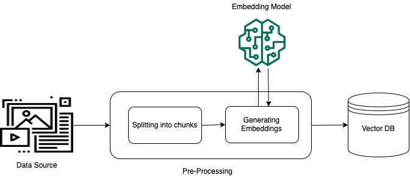
The data source feeds the pre-processing step first. Pre-processing splits the content into chunks, and the embedding model turns each chunk into a vector. The vector database then stores each vector. Your team does not write any of these steps when you use a managed or customer-managed knowledge base.
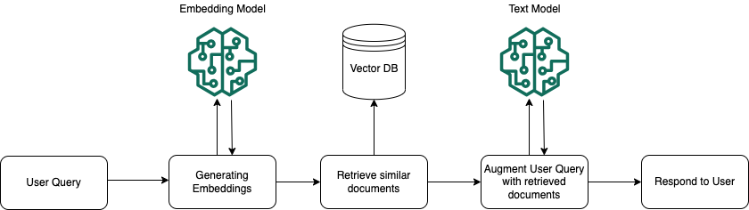
The user query goes to the embedding model first. The vector database returns similar documents for that query vector. The text model then receives the query with the retrieved text, and the answer returns to the user.
OpenSearch Service with the Neural plugin for Bedrock integration
Fact: the Neural plugin lets OpenSearch call an embedding model during ingestion and during search. A text embedding step runs in an ingest pipeline. A neural query sends text, and OpenSearch embeds it at query time.
OpenSearch"] -->|index time| N2["Text embedding in ingest
pipeline"] N1 -->|query time| N3["Neural query sends text"] N2 -->|calls model| N4["ML connector with IAM role"] N3 -->|calls model| N4 N1 -->|remote model needs| N5["model_config with output
dimension"]
Figure: the plugin embeds text at index time and at query time, and each call reaches the model through a connector.
Fact: the plugin reaches the model through an ML connector. For an AWS service, the connector uses an IAM role. For OpenSearch Serverless, the trust principal is ml.opensearchservice.amazonaws.com.
Fact: a remote model that serves semantic search needs a model_config with the output dimension. Without it, creating a semantic field fails.
Rule: choose the Neural plugin when the OpenSearch collection already holds the source records and the team wants no separate sync job.
Trap: the Neural plugin and the Knowledge Bases integration are two routes to the same kind of index. Running both for one corpus stores the vectors twice.
Limits: the exact Bedrock connector parameters and the full neural query syntax were not in the pages fetched. Not in source for those values.
Source: https://docs.aws.amazon.com/opensearch-service/latest/developerguide/ml-amazon-connector.html and course slides, page 144.
Topic-based segmentation with indexes and fields
Topic-based segmentation splits the corpus so that a query reaches only the right part. Put each topic in its own index when the topics use different embedding models. Keep one index with a topic field when the topics share a model and the queries filter well. The slides suggest one index per document family, plus a router that sends each query to the right index.
Source: course slides, page 142.
Amazon RDS and Aurora with Amazon S3 document repositories
Fact: a common pattern stores structured records in a relational table with a vector column. Each row points to a larger object in S3. The application reads the object after the row matches.
column"] -->|row matches| N2["Pointer to S3 object"] N2 -->|app reads object| N3["Full document from S3"] N1 -->|KB store needs| N4["Table with id embedding
and text"] N4 -->|KB writes chunks| N5["Chunks and embeddings
stored"]
Figure: a pointer row leads to S3 content, while a knowledge base store keeps chunks and embeddings in its table.
Fact: Knowledge Bases supports an Aurora PostgreSQL cluster with pgvector. The table needs an id, an embedding vector, a text column, a metadata JSON column, and an optional custom metadata JSONB column.
Fact: the index for the embedding uses hnsw with vector_cosine_ops. A GIN index covers the text column, and another GIN index covers the custom metadata column.
Limits: a plain RDS PostgreSQL instance as a Knowledge Bases store is Not in source. Private subnet placement for an Aurora store used by a knowledge base is also Not in source.
Rule: choose Aurora with pgvector when rows, joins, or transactions must share one database with the vectors.
Trap: a relational table that holds only an S3 pointer is not a knowledge base store. The knowledge base writes chunks and embeddings into the columns named at setup.
Trap: an Aurora cluster in another account is not a valid store for the knowledge base. The cluster must be in the same account.
Source: https://docs.aws.amazon.com/bedrock/latest/userguide/knowledge-base-setup.html and course slides, pages 154 and 159.
Amazon DynamoDB with vector databases for metadata and embeddings
Fact: DynamoDB stores items and can keep embeddings beside them. The course slides describe a SearchVectors operation for approximate nearest neighbor search. The slides list on-demand capacity only, equality-only inline filters, and a 16 MB response limit with no pagination.
DynamoDB"] -->|KB store required| N2["DynamoDB not on store list"] N1 -->|zero ETL pipeline| N3["OpenSearch as KB store"] N3 -->|DynamoDB stays| N4["Source of truth"] N1 -->|same table search| N5["SearchVectors per course
slides"]
Figure: DynamoDB stays the source of truth, and a listed store such as OpenSearch serves the search.
Limits: the AWS page for the DynamoDB vector feature was not fetched, so its current status is Not in source. The slide values are course values, not confirmed AWS values.
Fact: DynamoDB is not on the list of vector stores for Knowledge Bases. The list includes OpenSearch Serverless, OpenSearch managed clusters, S3 Vectors, Aurora, Neptune Analytics, Pinecone, Redis Enterprise Cloud, and MongoDB Atlas.
Fact: the course slides describe a zero-ETL pipeline from DynamoDB to OpenSearch. Then OpenSearch serves as the Knowledge Bases store. DynamoDB stays the source of truth.
Rule: when the question names a Knowledge Bases store, keep DynamoDB as the source and sync the embeddings to a listed store.
Rule: use DynamoDB vector search only when the same table holds the items and the team accepts the slide limits.
Trap: a DynamoDB table is not a Knowledge Bases store, even when it holds the embeddings. The store list decides.
Trap: a scan of DynamoDB items with similarity math in code is not vector search. It reads every item and does not rank by meaning at scale.
Source: https://docs.aws.amazon.com/bedrock/latest/userguide/knowledge-base-setup.html and course slides, pages 186 to 188.
Network placement for each vector store
Network placement decides how the knowledge base reaches the store. Some stores need a public endpoint. Some stores take a VPC endpoint. Some stores need no network setup from you. Read the network words in the scenario before you choose a store.
| Store | Public access needed | VPC endpoint option | Same account rule |
|---|---|---|---|
| OpenSearch Serverless collection | No, a VPC access type is allowed | Yes, an interface endpoint | Not in source |
| OpenSearch managed domain | Yes, required for Knowledge Bases | No, a VPC-only domain is not supported | Not in source |
| Aurora PostgreSQL | Not in source | Not in source | Yes |
| S3 Vectors | No, Block Public Access is always on | Not in source | Not in source |
| Neptune Analytics | No setup by you, Bedrock creates the connection | Not in source | Not in source |
network setup"] -->|Knowledge Base on
managed domain| B["Public access required"] A -->|Knowledge Base on
serverless| C["VPC access type with
endpoint"] A -->|Knowledge Base on
Aurora| D["Same account and secret
ARN"] A -->|Knowledge Base on S3
Vectors| E["Block Public Access always
on"] A -->|Knowledge Base on
Neptune| F["Bedrock creates the
connection"] B -->|VPC-only domain| G["Not supported for
knowledge base"] C -->|private application
access| H["Interface endpoint with
PrivateLink"]
Figure: each store family has its own network rule, and the managed OpenSearch domain is the one that must stay public.
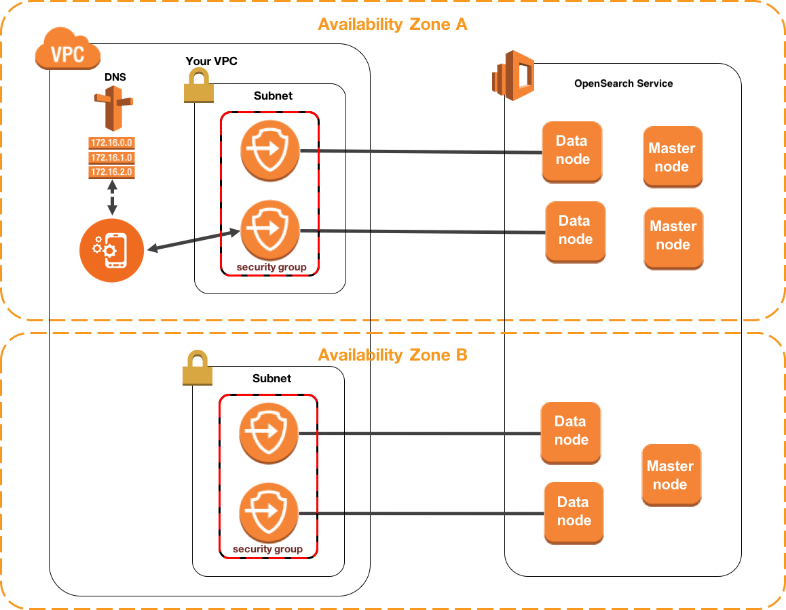
The diagram shows data nodes and master nodes in two Availability Zones. Each zone has a subnet, and security groups link the VPC-side resources to the data nodes. The application reaches the domain through the VPC DNS path. This VPC pattern is the one that a Knowledge Bases managed domain does not support.
Rule: for a private Knowledge Bases path to OpenSearch, use a serverless collection with a VPC endpoint.
Trap: a VPC-only managed domain is a common wrong choice. The fix is public access on that domain, or a serverless collection with a VPC endpoint.
Source: https://docs.aws.amazon.com/bedrock/latest/userguide/knowledge-base-setup.html and https://docs.aws.amazon.com/opensearch-service/latest/developerguide/vpc.html
Skill 1.4.2: Comprehensive metadata frameworks
Metadata narrows the candidate set before ranking. The task names S3 object metadata for timestamps, custom attributes for authors, and tags for domain classes. The Knowledge Bases filter path reads sidecar files, so the other mechanisms need a bridge into that path.
S3 object metadata for document timestamps
Fact: S3 keeps system-defined metadata for each object. Last-Modified is set by S3. You cannot change it by a request, and it reflects the creation or the latest modification.
date"] N5["User defined header at
upload"] -->|not a filter| N2
Figure: the business effective date belongs in a sidecar attribute, while Last Modified is only a fallback.
Fact: user-defined metadata uses x-amz-meta- headers at upload. The user-defined part is limited to 2 KB in the PUT header. To change it later, you copy the object and set the metadata again.
Rule: put the business effective date in a sidecar attribute. Keep Last-Modified only as a fallback.
Trap: Last-Modified changes when a file is replaced. It does not record the policy effective date.
Trap: an x-amz-meta header is not a Knowledge Base filter field in the documented sidecar path.
Source: https://docs.aws.amazon.com/AmazonS3/latest/userguide/UsingMetadata.html
Metadata sidecar files for custom attributes
Fact: for an S3 source, the metadata file is named with the source file name, the source extension, and then .metadata.json. The file holds a metadataAttributes object with key-value pairs.
Fact: the supported attribute types are STRING, NUMBER, BOOLEAN, and STRING_LIST. CSV metadata values are stored as strings.
Fact: a metadata-only change avoids embedding calls when the content file is not CSV and no custom transformation Lambda is set. A CSV file is always re-ingested when its metadata changes.
Rule: put any filter field that retrieval must read in the sidecar file, with a typed value.
Trap: a metadata file whose name does not match its source is ignored. The filter field then never reaches the index.
Source: https://docs.aws.amazon.com/bedrock/latest/userguide/kb-metadata.html and https://docs.aws.amazon.com/bedrock/latest/userguide/kb-data-source-sync-ingest.html
Figure: the sidecar is the only path that carries typed filter values into the index.
Custom attributes for authorship information
Store the author, the team, and the owner as STRING or STRING_LIST attributes in the sidecar. Use a list when one document has several owners. Retrieval can then filter on an author with an equals or in condition. The application must set that filter from a trusted identity, not from a browser value.
Rule: author and team fields go in the sidecar, typed as STRING or STRING_LIST.
Trap: an author name written in the body text is only content. It is not a filter field.
Limits: the maximum keys and values per document for an S3 source are Not in source. For S3 Vectors, the limit is 1 KB of custom metadata and 35 keys per vector.
Tagging systems for domain classification
Fact: an S3 object tag is a key-value pair. An object can have up to 10 tags. Tags work in IAM and bucket policies, in Lifecycle rules, and in cost allocation reports.
Fact: S3 sends an event to EventBridge when a tag is added or removed. The Knowledge Bases metadata workflow reads sidecar files, and the pages fetched do not show object tags in that path.
Rule: use tags for access control and cost. Copy the domain value into the sidecar when retrieval must filter on it.
Trap: tagging every document with a domain and expecting a Retrieve filter to read the tag. The filter reads the sidecar.
Source: https://docs.aws.amazon.com/AmazonS3/latest/userguide/UsingMetadata.html and https://docs.aws.amazon.com/AmazonS3/latest/userguide/EventBridge.html
documents"] -->|Knowledge Base
filter must read it| B["Sidecar metadata JSON"] A -->|access or lifecycle
use only| C["S3 object tags"] A -->|header set at upload| D["User-defined metadata"] B -->|typed value at sync| E["Filter in Retrieve request"] C -->|up to 10 tags per
object| F["Not in documented KB
filter path"] D -->|2 KB limit and fixed
at upload| G["Not in documented KB
filter path"]
Figure: only the sidecar carries a typed value into the retrieval filter.
Skill 1.4.3: High-performance vector database architectures
This skill tests whether you can keep search fast as the corpus grows. The named techniques are OpenSearch sharding, multi-index designs, and hierarchical indexing. Shard counts, shard sizes, and the number of indexes all change latency and memory use.
OpenSearch sharding strategies
Fact: you set the number of primary shards when you create the index. Each replica is a full copy of the primary shards. Use at least one replica.
Fact: the AWS guidance for search workloads is 10 to 30 GiB per shard, with 50 GiB as a maximum. The course slides give 30 to 50 GiB for semantic search and 10 to 30 GiB for hybrid search.
Fact: keep 25 shards or fewer for each GiB of JVM heap. The shard limit per node is 4,000 for OpenSearch 2.17 and above. The AWS guidance starts at 1.5 vCPU for each shard.
Fact: a shard count that is a multiple of the data node count spreads shards evenly. OpenSearch Serverless manages shard layout for you, according to the course slides.
Rule: size shards by data volume first, then match the shard count to the node count and vCPU count.
Trap: more shards always speed up search. Each search touches each primary shard, and extra shards add coordination work.
Trap: a 5 GiB index on 12 shards. Shard size comes before shard count.
Limits: the course slides call vector search the case for fewer, larger shards. The AWS guidance is a general rule for all workloads. Test the design with your own data before you fix the count.
Source: https://docs.aws.amazon.com/opensearch-service/latest/developerguide/bp.html and course slides, page 142.
corpus"] -->|one corpus with one
model| B["Single index sized by
shard rule"] A -->|different document
types or models| C["Multi-index with query
routing"] A -->|very large corpus
and semantic queries| D["Fewer larger shards for
semantic"] B -->|shard size 10 to 30
GiB| E["Check shard count per node"] D -->|course target 30 to
50 GiB| F["Test before fixing the
count"]
Figure: data volume and query type set the shard size, and the model count sets the index count.
k-NN query settings and filters
Fact: the knn_vector type holds one list of floats. The dimension parameter sets its length, and one list holds up to 10,000 floats. The index needs the index.knn setting to run k-NN queries.
with k"] -->|add size| N2["k results for whole query"] N1 -->|no size| N3["k results per shard and
segment"] N1 -->|post_filter after| N4["Fewer results possible"] N4 -->|scope limit only| N5["Use post_filter only then"]
Figure: adding size gives k results for the whole query, and a post_filter can return fewer results.
Fact: k is the number of neighbors to return, and its maximum is 10,000. Include size with k. Without size, you get k results for each shard and segment, not k results for the whole query.
Fact: post_filter runs after the k-NN step. It can return fewer than k results.
Fact: the _msearch API sends many k-NN searches in one request. OpenSearch Serverless vector collections accept up to 16,000 dimensions.
Rule: use post_filter only when fewer results are acceptable after a scope limit.
Trap: a post_filter that removes the other regions and expects a full set of k results. The count drops after the filter.
Limits: whether a filter inside the knn query keeps k results is Not in source in the pages fetched.
Source: https://docs.aws.amazon.com/opensearch-service/latest/developerguide/knn.html and https://docs.aws.amazon.com/opensearch-service/latest/developerguide/serverless-vector-search.html
Multi-index approaches for specialized domains
Fact: a knn_vector field fixes its dimension in the mapping. Two embedding models with different dimensions need separate fields or separate indexes.
embedding models"] -->|dimension differs| N2["Separate index per corpus"] N2 -->|query router| N3["Router picks the index"] N1 -->|one shared index| N4["Cannot hold two dimensions"] N2 -->|no router| N5["App must still choose
index"]
Figure: separate indexes suit corpora with different dimensions, and either a router or the app picks the index for each query.
Fact: the course slides suggest a separate index for each document family, so each corpus gets its own tuning. A query router then picks the index for each request.
Rule: create one index for each corpus when the embedding model or the dimension differs.
Trap: one index for all domains with a label field. This works for filtering, but it cannot hold two dimensions or two tuning profiles.
Trap: several indexes with no router. The application must still choose the index for each query.
Source: https://docs.aws.amazon.com/opensearch-service/latest/developerguide/knn.html and course slides, page 142.
Hierarchical indexing techniques
Fact: the index holds small child chunks for precise matches. Retrieval returns the parent chunk, so the model gets the surrounding section.
text"] N1 -->|change sizes later| N4["Replacement data source
needed"] N2 -->|large parent size| N5["Metadata limit with S3
Vectors"]
Figure: the index holds small child chunks, and the returned parent chunk supplies the wider context.
Fact: the parent size, child size, and overlap are set in the chunking configuration. Changing them later needs a replacement data source.
Rule: index small child units for precise matching, and return the parent for context.
Trap: a large parent size with S3 Vectors. The parent context is stored as metadata, and it can exceed the metadata size limit.
Source: https://docs.aws.amazon.com/bedrock/latest/userguide/kb-chunking.html and https://docs.aws.amazon.com/bedrock/latest/APIReference/API_agent_UpdateDataSource.html
Skill 1.4.4: Integration components for GenAI data sources
This skill connects document systems, knowledge bases, and internal wikis to the vector layer. Use a managed connector when the system is on the list. Use a push call when the application owns the content. Use an application contract when several clients need the same retrieval.
Document management systems
Fact: a managed knowledge base has seven native connectors. They are S3, SharePoint, Confluence, Web Crawler, Google Drive, OneDrive, and Custom. A customer-managed knowledge base has two options, S3 and Custom.
managed KB"] N1 -->|customer managed| N3["Only S3 or Custom native"] N3 -->|SaaS source| N4["Team builds the reader"] N2 -->|no custom reader| N5["Team writes no reader"]
Figure: a native connector avoids a custom reader, while a customer managed knowledge base with SaaS sources needs one.
Fact: the managed connector configuration has a syncSchedule field. The allowed schedule values are Not in source in the pages fetched.
Rule: use a native connector when the document system is on the list and the team wants no custom reader.
Trap: a customer-managed knowledge base with a SaaS document system. Only S3 and Custom are native there, so the team must build the reader.
Source: https://docs.aws.amazon.com/bedrock/latest/userguide/kb-build-managed.html and https://docs.aws.amazon.com/bedrock/latest/APIReference/API_agent_UpdateDataSource.html
Knowledge bases as integration targets
Fact: Retrieve returns chunks with content, location, metadata, and a score. RetrieveAndGenerate returns an answer with citations.
documents"] -->|read chunks| N2["Retrieve with score and
location"] N1 -->|cited answer| N3["RetrieveAndGenerate"] N1 -->|push new content| N4["IngestKnowledgeBaseDocuments"] N2 -->|store can change| N5["No application edits
needed"]
Figure: applications connect to Retrieve, so the store can change without application edits.
Fact: IngestKnowledgeBaseDocuments pushes up to 10 documents in one request. The call returns HTTP 202. The data source type in each document must match the data source you name.
Fact: the course slides describe cross-account retrieval. OpenSearch can call a Bedrock model through a remote-inference connector. The Bedrock account needs a role that allows InvokeModel from the OpenSearch account.
Rule: connect each application to Retrieve, so the store can change without application edits.
Trap: each application calls the embedding model and the store directly. Every application then keeps its own chunking and ranking code.
Source: https://docs.aws.amazon.com/bedrock/latest/APIReference/API_agent_IngestKnowledgeBaseDocuments.html and course slides, page 129.
Internal wikis
Fact: Confluence and SharePoint are native managed connectors. The course slides say Kendra fits document-level access control with SharePoint and Confluence, and that its cost can be high for large deployments.
permissions"] N2 -->|owner field alone| N4["Does not enforce access"] N4 -->|app sets filter| N5["From a trusted identity"]
Figure: wiki content uses a native connector, and access rules need Kendra or a filter set from a trusted identity.
Limits: Kendra query pricing and index limits were not fetched. Not in source.
Rule: use the Confluence or SharePoint connector for wiki content. Use Kendra when existing document permissions must decide every result.
Trap: an owner field in metadata does not enforce access by itself. The application must set the filter from a trusted identity.
Source: https://docs.aws.amazon.com/bedrock/latest/userguide/kb-build-managed.html and course slides, pages 657 to 658.
Skill 1.4.5: Data maintenance systems
This skill keeps the vector store current without full rebuilds. The named techniques are incremental updates, change detection, synchronization workflows, and scheduled pipelines. Choose the smallest mechanism that sees each kind of change.
Incremental update mechanisms
Fact: a sync is incremental. Added, modified, and deleted documents are processed since the previous sync. Unchanged documents are skipped, and deleted documents are removed from the store.
COMPLETE"]
Figure: an incremental sync processes added, modified, and deleted documents, and it skips unchanged ones.
Fact: a sync reports status. StartIngestionJob starts it. GetIngestionJob returns the status, and COMPLETE means the job finished.
Limits: for stores other than Aurora, vectors can take a few minutes to become queryable after the job ends.
Rule: use managed incremental sync for file changes in a supported source.
Trap: a custom script that re-embeds every file each night. The managed sync already processes only the changes.
Trap: a file uploaded to S3 changes the answers only after a sync job runs.
Source: https://docs.aws.amazon.com/bedrock/latest/userguide/kb-data-source-sync-ingest.html
Real-time change detection systems
Fact: DynamoDB Streams writes a record for each item change. The record can hold keys only, new image, old image, or both images. The stream keeps records for 24 hours.
Fact: the view type cannot be edited after setup. To change it, turn off the stream and create a new one.
Fact: S3 sends object events to EventBridge once it is enabled. Events include object created, object deleted, and tag changes. Rules filter the events that matter.
Rule: use a stream view that carries keys for deletes and new images for upserts.
Trap: a DynamoDB stream as the only history. Records older than 24 hours can be trimmed at any time.
Trap: more than two readers on one shard at the same time. The documentation says this can cause throttling.
Source: https://docs.aws.amazon.com/amazondynamodb/latest/developerguide/Streams.html and https://docs.aws.amazon.com/AmazonS3/latest/userguide/EventBridge.html
source| B["Scheduled or event sync
job"] A -->|DynamoDB table item| C["DynamoDB stream record"] A -->|S3 object created or
removed| D["EventBridge rule for
object events"] C -->|Lambda reads stream| E["Upsert or delete vector in
store"] D -->|Lambda starts sync
or direct ingest| F["Start sync or direct
ingest API"] B -->|incremental
processing| G["Only changed documents
re-ingested"]
Figure: each source type has its own change feed, and each feed ends at a sync call or a direct write.
Automated synchronization workflows
Fact: an EventBridge rule for S3 object events can invoke a Lambda function. The function calls StartIngestionJob for the data source. Batching the burst before the call is a design choice, and no fixed rule for it appears in the pages fetched.
EventBridge"] -->|rule invokes| N2["Lambda function"] N2 -->|batch the burst| N3["One StartIngestionJob call"] N3 -->|track job ID| N4["Status reaches COMPLETE"] N2 -->|one job per file| N5["Many job records for one
burst"]
Figure: an event rule starts a Lambda function, and the burst should be batched into one ingestion job that is tracked by its job ID.
Fact: StopIngestionJob works only while a job runs. GetIngestionJob and ListIngestionJobs show job history.
Rule: record each sync with its job ID and track it to COMPLETE.
Trap: a job for every file in a burst. Many job records appear, and the team cannot see one batch as one update. Batch the burst, then start one job.
Source: https://docs.aws.amazon.com/bedrock/latest/userguide/kb-data-source-sync-ingest.html and https://docs.aws.amazon.com/AmazonS3/latest/userguide/EventBridge.html
Scheduled refresh pipelines
Fact: the managed connector configuration accepts a syncSchedule. The values and the scheduling units are Not in source in the pages fetched.
and swapped"] N3 -->|re embeds| N5["Content that did not
change"]
Figure: a next morning need fits a scheduled ingestion job, while a periodic full rebuild embeds content again.
Fact: the course slides describe a periodic rebuild that uses AWS Batch to create new embeddings, validate them, and swap indexes. This is the older full rebuild pattern.
Rule: a next-morning freshness need fits a scheduled ingestion job, not a full rebuild.
Trap: a nightly full rebuild for a store that supports sync. The rebuild re-embeds content that did not change.
Source: https://docs.aws.amazon.com/bedrock/latest/APIReference/API_agent_UpdateDataSource.html and course slides, page 191.
X versus Y: confusable pairs
Each pair below has one decision tree, a three-row comparison, one question, and one trap. Use the question to decide. Then check the trap against the distractors in the options.
Aurora pgvector versus OpenSearch
business rows| B["Aurora PostgreSQL pgvector"] A -->|full text facets and
tuning| C["OpenSearch Service"] B -->|store must be in KB
account| D["Same account check"] C -->|KB needs faiss
engine| E["faiss index mapping"]
Figure: relational work points to Aurora, and search engine work points to OpenSearch.
- Purpose: Aurora keeps vectors next to relational data. OpenSearch is a search engine with vector support.
- Input: Aurora takes rows with an embedding column and SQL. OpenSearch takes documents with a mapping.
- Output or effect: Aurora returns joins and transactional writes. OpenSearch returns hybrid and faceted search.
The one question is whether the vectors must join or commit with business rows. If yes, Aurora fits. If the need is full text and tuning, OpenSearch fits.
Trap: Aurora as the store for a large keyword search platform. The search features and tuning control sit in OpenSearch.
OpenSearch Serverless versus managed OpenSearch
small ops team| B["OpenSearch Serverless"] A -->|shard and node
tuning required| C["OpenSearch managed domain"] C -->|Knowledge Base needs
public access| D["Public access on the
domain"] B -->|private access
wanted| E["VPC endpoint on the
collection"]
Figure: the operations need and the network need separate the two options.
- Purpose: both store and search vectors. Serverless removes node management. Managed gives full control of the cluster.
- Input: serverless takes a collection and an index. Managed takes a domain with instance and shard settings.
- Output or effect: serverless bills for requests and storage. Managed bills for running capacity, with steadier latency.
The one question is whether the team must tune shards and nodes. If it must, choose managed. If it does not, choose serverless.
Trap: a managed domain for uneven traffic and a small team. The always-on capacity cost fits the traffic badly.
S3 Vectors versus OpenSearch
store"] -->|rare queries and low
cost| B["S3 Vectors"] A -->|frequent queries and
low latency| C["OpenSearch"] A -->|binary vectors
required| D["OpenSearch not S3 Vectors"] B -->|copy to a faster
tier| E["Two stores billed"]
Figure: rare queries favor S3 Vectors, and frequent low-latency queries favor OpenSearch.
- Purpose: S3 Vectors stores large vector sets cheaply. OpenSearch gives fast, rich search.
- Input: S3 Vectors takes a vector bucket, an index, and metadata. OpenSearch takes an index with mappings.
- Output or effect: S3 Vectors gives sub-second answers for infrequent queries, and about 100 ms for frequent ones. OpenSearch gives steadier latency at higher cost.
The one question is how often the store is queried and how fast the answer must arrive.
Trap: a tiered design with S3 Vectors for storage and OpenSearch for speed. The data is paid for twice, so check the cost before you copy.
Source: https://docs.aws.amazon.com/AmazonS3/latest/userguide/s3-vectors.html, https://docs.aws.amazon.com/bedrock/latest/userguide/knowledge-base-setup.html, and course slides, page 149.
Sidecar metadata versus S3 object tags
retrieval filter"] -->|filter reads it| B["Sidecar metadata file"] A -->|access control or
cost| C["S3 object tags"] B -->|typed value at sync| D["Retrieve filter works"] C -->|tag change event| E["EventBridge rule can react"]
Figure: tags serve access and cost, and the sidecar serves retrieval filters.
- Purpose: the sidecar carries typed filter values into the index. Tags classify objects for access and billing.
- Input: the sidecar is a JSON file named after the source. Tags are key-value pairs, up to 10 per object.
- Output or effect: the sidecar changes the index at sync. A tag change sends an event but does not change the index by itself.
The one question is whether a Retrieve filter must read the value. If yes, write the sidecar.
Trap: a tag set for the domain and a filter that expects it. The index does not read the tag in the documented path.
StartIngestionJob versus IngestKnowledgeBaseDocuments
files| B["StartIngestionJob sync"] A -->|direct document push| C["IngestKnowledgeBaseDocuments"] B -->|job status tracked| D["GetIngestionJob and
ListIngestionJobs"] C -->|up to 10 documents
per request| E["202 response with document
details"]
Figure: a sync reads a configured source, while the direct call pushes content you hold.
- Purpose: a sync reads everything in the configured data source and processes the changes. A direct call adds the documents you send.
- Input: a sync takes a knowledge base ID and a data source ID. The direct call takes documents with content and metadata.
- Output or effect: a sync returns an ingestion job with status and statistics. The direct call returns document details with a status for each document.
The one question is whether the content lives in a configured source or in your application. A configured source needs a sync. Application content needs the direct call.
Trap: a direct call for a file set that already sits in the S3 data source. The sync is the simpler managed path.
DynamoDB Streams versus S3 event notifications
table| B["DynamoDB Streams"] A -->|object changes in a
bucket| C["S3 events to EventBridge"] B -->|24 hour retention| D["Consumer must keep up"] C -->|all event types sent
once enabled| E["Rules filter to created
and removed"]
Figure: the source service decides the change feed, and each feed has its own retention and filter rules.
- Purpose: DynamoDB Streams reports item changes. S3 events report object changes.
- Input: a stream is enabled on a table with a view type. S3 events are enabled on a bucket, and every event type is sent.
- Output or effect: a stream record holds keys and images. An S3 event holds the bucket, the key, and the event reason.
The one question is which service holds the content that changes. Choose the feed that belongs to that service.
Trap: an S3 event for each tag change treated as a content change. Filter the rule to created and removed events.
Managed versus customer-managed knowledge base
native connectors| B["Managed knowledge base"] A -->|store named and
custom settings| C["Customer-managed knowledge
base"] B -->|agentic retrieval
supported| D["Managed datastore"] C -->|choose Aurora or S3
Vectors| E["Team runs the store"]
Figure: the managed type takes over the store, and the customer-managed type keeps the store under your control.
- Purpose: the managed type runs the whole pipeline. The customer-managed type lets you pick the store and the parsing.
- Input: the managed type takes a data source. The customer-managed type takes a data source and a store you provision.
- Output or effect: the managed type offers agentic retrieval and seven connectors. The customer-managed type offers two connectors.
The one question is whether the scenario names a store or a network rule. If it does, the customer-managed type fits.
Trap: a managed knowledge base for a scenario that names Aurora. The managed type hides the store, so the constraint fails.
DynamoDB vector search versus OpenSearch
items"] -->|Knowledge Base store
required| B["Reject DynamoDB as the
store"] A -->|same table search
only| C["SearchVectors per course
slides"] A -->|hybrid or full text
needed| D["Sync to OpenSearch"] C -->|check AWS page first| E["Status Not in source"]
Figure: DynamoDB keeps the items, and OpenSearch gives the search features.
- Purpose: DynamoDB vector search keeps similarity search beside the items. OpenSearch offers hybrid, full-text, and exact search.
- Input: the table holds items and embeddings. OpenSearch takes documents with a mapping.
- Output or effect: the course slides list a 16 MB response limit with no pagination. OpenSearch returns ranked and faceted results.
The one question is whether the search needs hybrid or full-text features. If it does, sync to OpenSearch.
Trap: a DynamoDB table named as the Knowledge Bases store. The store list does not include DynamoDB.
Read a long question
Each worked scenario below uses three sentences. Underline the constraint words, eliminate each wrong option with one reason, then check the answer. The scenarios are original.
Worked scenario one: clinic lab tables in PDFs
Scenario: A clinic stores visit notes and lab tables as PDFs in S3. Staff ask for one lab value and need the page and the clinic branch that wrote it. The team wants managed citations and no custom parsing code.
branch"] -->|answer| N2["Managed Knowledge Base on
PDFs"] N2 -->|branch in sidecar| N3["Typed STRING attribute"] N2 -->|cited answer| N4["RetrieveAndGenerate"] N1 -->|wrong option| N5["Lambda with custom parsing
code"] N1 -->|wrong option| N6["DynamoDB scan of lab
values"] N1 -->|wrong option| N7["Hand tuned OpenSearch
domain"]
Figure: a managed Knowledge Base with a sidecar branch field answers the clinic case, and three options fail the constraints.
Constraint words: lab tables, page, branch, managed citations, no custom parsing code.
- Trap: a Lambda function that extracts text with custom code. It works, but it breaks the no custom parsing constraint.
- Trap: a DynamoDB table of lab values with a scan. A scan returns items by key and does not rank text by meaning.
- Trap: an OpenSearch managed domain that the team tunes by hand. The scenario adds no need for node control, and the managed type handles parsing.
Rule: answer is a managed Knowledge Base on the PDFs, with the branch in a sidecar typed as STRING, and RetrieveAndGenerate for the cited answer.
Worked scenario two: product manuals with new files all day
Scenario: A retailer uploads product manuals to S3 through the day, and each new file must be searchable within 15 minutes. Users also search by exact model numbers. The team wants no custom embedding code.
ingestion"] N1 -->|model numbers| N3["Hybrid search on
OpenSearch Serverless"] N1 -->|wrong option| N4["Nightly full rebuild
misses target"] N1 -->|wrong option| N5["Lambda calls Titan per
object"] N1 -->|wrong option| N6["S3 Vectors alone"]
Figure: an event rule and hybrid search meet the two stated needs, and three wrong options each fail one constraint.
Constraint words: through the day, within 15 minutes, exact model numbers, no custom embedding code.
- Trap: a nightly full rebuild of the index. It misses the 15 minute target and re-embeds unchanged files.
- Trap: a Lambda function that calls Titan for every object. It meets the freshness need but adds the custom embedding code the team rejected.
- Trap: S3 Vectors alone for the search. The pages fetched show no native keyword search there, so exact model numbers can fail.
Rule: answer is a Knowledge Base on OpenSearch Serverless with hybrid search and filterable keyword fields, plus an S3 event rule that starts an ingestion job for each batch.
Worked scenario three: a rarely queried research archive
Scenario: A research group keeps 40 million vectors from archived papers. Analysts run a few queries each month and accept a delay near one second. The budget is the first priority.
queries"] -->|budget first| N2["Customer managed Knowledge
Base"] N2 -->|S3 Vectors index| N3["Dimension matches the
model"] N1 -->|wrong option| N4["Always on OpenSearch
domain"] N1 -->|wrong option| N5["Always on Aurora cluster"] N1 -->|wrong option| N6["DynamoDB similarity scan"]
Figure: few queries and a budget first point to a customer managed Knowledge Base on S3 Vectors, and the always on options add idle cost.
Constraint words: few queries each month, accept a delay, budget first.
- Trap: an always-on OpenSearch managed domain. It bills for capacity that sits idle between monthly queries.
- Trap: an always-on Aurora cluster. The scenario needs no joins or transactions, so the database adds cost with no matching need.
- Trap: a DynamoDB table with an application-side similarity scan. The scan reads every item on every query.
Rule: answer is a customer-managed Knowledge Base on an S3 Vectors index, with the index dimension matching the chosen embedding model.
Distractor patterns seen in long questions
These patterns repeat in long options. Each one looks correct on a first read. Each one fails for a concept reason, not for a memorized fact.
first read"] -->|check the concept| N2["Name the failing concept"] N2 -->|control level| N3["Right store wrong control
level"] N2 -->|wrong stage| N4["Fix at the stage that lost
content"] N2 -->|store or network| N5["Store off the list or
wrong network"] N2 -->|filter or rebuild| N6["Filter or freshness
mismatch"]
Figure: each distractor looks right at first and fails on a concept such as control level, stage, network, or metadata.
Trap: right store, wrong control level. A serverless option is offered to a team that needs shard tuning. The control need decides, not the store name.
Trap: right store, manual pipeline. A custom re-embedding job is offered where a managed sync already handles changes.
Trap: a fix at the wrong stage. A reranker or a larger prompt is offered for chunks that were never indexed. The stage that lost the content must change.
Trap: a store that is not on the list. DynamoDB or another operational database is offered as the Knowledge Bases store.
Trap: two stores billed for one job. A copy into a faster store is offered without a cost check.
Trap: a network setting that breaks the setup. A VPC-only managed domain is offered for a knowledge base. The setup needs public access on that domain type.
Trap: a metadata mechanism that the filter cannot read. Object tags or a header are offered where the filter reads only the sidecar.
Trap: a rebuild for a freshness need. A nightly full rebuild is offered when the need is an hourly or minute-level update.
Trap: a cross-account store with no role. An Aurora cluster in another account is offered for a knowledge base. The setup needs the same account.
Drill
Each prompt is one line. Read the answer on the next line, then say why the wrong option fails.
fails"] N4 -->|next prompt| N1
Figure: each drill prompt is answered aloud first, checked against the next line, and then explained through its wrong option.
A managed OpenSearch domain for a Knowledge Base has VPC-only networking. What must change?
Trap: a VPC-only domain is not supported for Knowledge Bases. Use public access on the domain, or a serverless collection with a VPC endpoint.
An item-level change feed must carry the old and new values. Which service fits?
Rule: DynamoDB Streams with a view type that holds both images.
A metadata file has a name that does not match its PDF. The filter misses the document. Why?
Trap: the sidecar name must match the source file name and extension. The mismatched file is ignored.
Author lists must filter retrieval, and one document has several authors. Where does the field go?
Rule: in the sidecar, typed as STRING_LIST.
Chunking must change for a data source that already exists. What is the action?
Rule: create a replacement data source with the new chunking, sync it, then cut over. The chunking cannot change in place.
An application has 10 new documents to load now. Which API fits?
Rule: IngestKnowledgeBaseDocuments, which takes up to 10 documents per request.
Two corpora use embedding models with different dimensions. How do you lay out the index?
Rule: separate indexes or fields, because a knn_vector field fixes its dimension.
An Aurora cluster sits in another account from the knowledge base. The team wants to keep the cluster there. What is the issue?
Trap: the cluster must be in the same account as the knowledge base. Move the cluster or choose another store.
Vectors must commit with order rows in one transaction. Which store fits?
Rule: Aurora PostgreSQL with pgvector, in the same account as the knowledge base.
A catalog needs exact stock keys in a semantic search. Which OpenSearch search type fixes the misses?
Rule: hybrid search, with filterable keyword fields in the index.
Object tags hold the product domain. A retrieval filter on that domain returns no results. Why?
Trap: the documented filter path reads the sidecar, not object tags. Copy the domain value into the sidecar and sync.
Source files change each day, and answers must reflect them by morning. A nightly full rebuild costs too much. What runs instead?
Rule: a scheduled ingestion job on the managed data source, so only changed documents are processed.
Sources
Source: AWS documentation fetched for this module, and the course slides for this module.
number"] N2 -->|listed as URLs| N4["Page links in this section"] N3 -->|slide extract| N5["Page numbers in each
section"]
Figure: the module draws on fetched AWS documentation pages and on course slides, each cited in its section.
- https://docs.aws.amazon.com/bedrock/latest/userguide/knowledge-base-setup.html
- https://docs.aws.amazon.com/bedrock/latest/userguide/kb-chunking.html
- https://docs.aws.amazon.com/bedrock/latest/userguide/kb-metadata.html
- https://docs.aws.amazon.com/bedrock/latest/userguide/kb-data-source-sync-ingest.html
- https://docs.aws.amazon.com/bedrock/latest/userguide/kb-build-managed.html
- https://docs.aws.amazon.com/bedrock/latest/userguide/kb-how-it-works.html
- https://docs.aws.amazon.com/bedrock/latest/APIReference/API_agent_IngestKnowledgeBaseDocuments.html
- https://docs.aws.amazon.com/bedrock/latest/APIReference/API_agent_UpdateDataSource.html
- https://docs.aws.amazon.com/opensearch-service/latest/developerguide/serverless-vector-search.html
- https://docs.aws.amazon.com/opensearch-service/latest/developerguide/knn.html
- https://docs.aws.amazon.com/opensearch-service/latest/developerguide/bp.html
- https://docs.aws.amazon.com/opensearch-service/latest/developerguide/ml-amazon-connector.html
- https://docs.aws.amazon.com/opensearch-service/latest/developerguide/vpc.html
- https://docs.aws.amazon.com/AmazonS3/latest/userguide/s3-vectors.html
- https://docs.aws.amazon.com/AmazonS3/latest/userguide/UsingMetadata.html
- https://docs.aws.amazon.com/AmazonS3/latest/userguide/EventBridge.html
- https://docs.aws.amazon.com/amazondynamodb/latest/developerguide/Streams.html
Source: course slide extract for this module, pages 129, 142, 144, 149, 154, 159, 186 to 188, 191, and 657 to 658.
Task 1.5: Design retrieval mechanisms for FM augmentation.
After this section, you can read a long retrieval scenario and name the segmentation, embedding, store, search, query, and access design it needs. You can also reject each wrong option with one reason. Most long questions hide the decision in one constraint, such as a freshness window, a permission rule, or a data shape.
The deciding constraint
Start from the scenario. Ask what the retrieval layer must return and under which rule. The answer to that question usually decides the store, the chunk shape, and the search type. The tree below moves from the scenario to the design choice in a fixed order.
changes| B["Retrieval path"] A -->|facts fit every
prompt| C["Long prompt is enough"] B -->|answer lives in a
table or image| D["Multimodal parser first"] B -->|text documents only| E["Managed chunking choice"] E -->|answer needs the
section around a
match| F["Hierarchical chunking"] E -->|topics mix inside
one chunk| G["Semantic chunking"] E -->|structure is special| H["Lambda custom
transformation"] B -->|exact codes or names
matter| I["Hybrid search"] B -->|right chunk ranks
too low| J["Reranker"] B -->|wrong scope or
region| K["Metadata filter"] B -->|store choice| L["Vector store by control
and data"]
Figure: the first split is the content and change rate. The later splits pick the chunk shape, the search type, and the store.
Signal words tell you which branch to take. Underline them before you read the options. Each rule below maps one signal word or phrase to one branch.
- Rule: "fixed size" or "overlap" points to fixed-size chunking.
- Rule: "parent section" or "surrounding context" points to hierarchical chunking.
- Rule: "exact code", "SKU", or "rare name" points to hybrid search.
- Rule: "right result, wrong order" points to a reranker.
- Rule: "only for one region" or "only approved" points to a metadata filter.
- Rule: "multi-part question" points to query decomposition.
- Rule: "tool the model can request" points to function calling.
- Exam tip: a long scenario lists five services. The constraint is usually a number, a frequency, a permission, or a data shape. Find that first.
Network and account placement
Retrieval designs fail when the parts sit in the wrong account or network path. Three placement facts matter for this task. The Aurora cluster for a knowledge base must sit in the same account as the knowledge base. A private OpenSearch Serverless collection is reached through a VPC endpoint. A cross-account OpenSearch connector to a Bedrock model needs an IAM role that allows the model call.
VPC"] -->|private path| B["VPC endpoint for
collection"] B -->|private access| C["OpenSearch Serverless
collection"] A -->|Retrieve call| D["Bedrock knowledge base"] E["Aurora cluster in same
account"] -->|must match account| D F["OpenSearch in other
account"] -->|remote connector and
IAM role| G["Bedrock model in model
account"]
Figure: placement rules for a private collection, a same-account Aurora store, and a cross-account model call.
Source: https://docs.aws.amazon.com/bedrock/latest/userguide/knowledge-base-setup.html and course slides, page 71 and page 139.
Skill 1.5.1: Develop effective document segmentation approaches
Segmentation sets the unit that retrieval returns. A chunk that is too large mixes topics. A chunk that is too small loses the context that makes the match useful. The skill asks you to match the chunk method to the document structure and the answer shape.
choice"] -->|match structure| N2["Chunk method"] N2 -->|managed fits| N3["Managed chunking default"] N2 -->|bounded chunks| N4["Fixed size with overlap"] N2 -->|needs section| N5["Hierarchical chunking"] N2 -->|custom split rule| N6["Lambda transformation"]
Figure: the document structure and the answer shape choose the chunking method, and managed chunking is the default.
Amazon Bedrock chunking capabilities
Fact: Knowledge Bases offers default, fixed-size, hierarchical, semantic, and no chunking. Default chunking targets about 300 tokens and keeps sentences whole.
Fact: chunking applies to text documents. Audio, video, and image files chunk at the embedding model level, except the Bedrock Data Automation path, which converts content to text first.
The managed choice is the first option to test. Plan the strategy before the first sync. Test the strategy on a separate data source before you change production content.
Rule: use managed chunking unless the question names a structure that managed options cannot express.
Trap: changing chunk size does not fix a table that the parser never extracted. Check the parser first.
Source: https://docs.aws.amazon.com/bedrock/latest/userguide/kb-chunking.html
Fixed-size chunking
Fact: fixed-size chunking takes a maximum token count per chunk and an overlap percentage between consecutive chunks. The exact allowed overlap range is Not in source.
This method suits content with even density. It also suits a requirement for bounded chunk sizes and adjacent overlap. A rule that spans a boundary can still split across two chunks. Overlap reduces that risk but does not remove it.
Rule: choose fixed-size chunking when the question asks for predictable bounded chunks with overlap and no custom code.
Trap: fixed-size chunking does not keep a section together. A long methodology section can split in the middle.
Source: https://docs.aws.amazon.com/bedrock/latest/userguide/kb-chunking.html
Hierarchical chunking by content structure
Fact: hierarchical chunking takes a parent maximum token size, a child maximum token size, and an overlap in tokens. Retrieval matches child chunks and then returns the parent chunks.
Fact: the returned result count can fall below the requested number, because several child matches can map to one parent. Hierarchical chunking is not recommended with an S3 vector bucket as the store.
This method suits documents where a precise sentence needs its heading or clause context. The child chunk gives precision in the search. The parent chunk gives the model enough text to answer. The two sizes must fit the model context budget together.
Rule: choose hierarchical chunking when a match is small but the answer needs the section that contains it.
Trap: hierarchical chunking does not help when the answer sits in one short paragraph. The extra parent text adds tokens with no new facts.
Source: https://docs.aws.amazon.com/bedrock/latest/userguide/kb-chunking.html
AWS Lambda for fixed-size chunking
Fact: a custom transformation Lambda function can split content before the managed embedding step. The docs describe custom processing as the route for chunk-level table results when no chunking runs in the managed path.
Use Lambda when the split rule is not in the managed options. A fixed-size split with your own tokenizer is one example. A split by record in a structured file is another. Your code owns the output, so test each output file before you sync.
Rule: choose a Lambda transformation when the question requires a split rule that managed chunking cannot express.
Trap: a Lambda split does not add managed citations by itself. Keep the source location and the chunk order in metadata.
Source: https://docs.aws.amazon.com/bedrock/latest/userguide/kb-chunking.html and https://docs.aws.amazon.com/bedrock/latest/userguide/kb-how-it-works.html
Custom hierarchical processing for structured content
Some documents have numbered articles, sections, and clauses. The managed hierarchy uses size limits, not document structure. Custom processing reads the heading tree and writes a parent identifier into each child chunk. Retrieval then fetches the parent by identifier when a child matches.
This design needs more code and more state. You own the parent store, the identifier scheme, and the test set. Test that every child carries its parent identifier. A missing identifier returns a child with no context.
Rule: choose custom hierarchy when the question names heading levels or numbered clauses that managed size limits cannot follow.
Trap: adding a heading only to the first chunk of a section. Later chunks then lose the article or section label.
Source: https://docs.aws.amazon.com/bedrock/latest/userguide/kb-chunking.html
The diagram shows the pre-processing path. Documents leave the data source and reach a splitting step. Each chunk then passes to the embedding model, and the vector and text go to the vector database. Segmentation choices change the first step only. The embedding and store steps stay the same for each strategy.
Skill 1.5.2: Pick and tune embedding solutions
An embedding model turns text into a vector. The model sets the vector size, the language fit, and the throughput limits. The index in the store must match the size. Choose the model first, then the store.
first"] -->|sets vector size| N2["Index must match the size"] N1 -->|language fit| N3["English and many other
languages"] N3 -->|cross language| N4["Suboptimal results"] N1 -->|throughput limits| N5["Requests per minute quota"]
Figure: the model sets the vector size and the language fit, and the index must match that size.
Amazon Titan Text Embeddings
Fact: Titan Text Embeddings v2 has an input limit of 8,192 tokens or 50,000 characters per request. It outputs 1,024 dimensions by default, and 512 or 256 when you set a smaller size.
Fact: the v2 model is optimized for English and supports many other languages. Cross-language queries, such as a knowledge base in one language and a query in another, return sub-optimal results.
The embedding model computes the vector only. The vector database performs the similarity search. A latency-optimized endpoint suits the query step. A throughput-optimized batch job suits large indexing runs.
Rule: choose Titan v2 when the question needs a native smaller vector size and English or mixed-language retrieval on Bedrock.
Trap: a v2 query against a knowledge base written in another language is not a fix for poor recall. Pick a model that fits the corpus language.
Source: https://docs.aws.amazon.com/bedrock/latest/userguide/titan-embedding-models.html
Dimensionality and domain fit
Fact: the setup page lists Titan G1 Text at 1,536 dimensions, Titan v2 at 1,024, 512, and 256, and Cohere Embed English and Multilingual at 1,024. The page recommends Euclidean distance for floating-point embeddings.
Smaller vectors cost less to store and search. They can also lose meaning detail. The right size depends on how much nuance the domain needs. A narrow domain with simple terms often works with a smaller size. A domain with close terms, such as similar part numbers, needs a test before the size is fixed.
Rule: choose the smallest vector size that passes the domain test set, and confirm the store accepts that size.
Trap: a smaller vector from a model that does not offer it, made by post-processing, is a different design. Check the next section.
Source: https://docs.aws.amazon.com/bedrock/latest/userguide/knowledge-base-setup.html and https://docs.aws.amazon.com/bedrock/latest/userguide/titan-embedding-models.html and course slides, page 45.
Evaluating Bedrock embedding models
Compare embedding models with one test set. Build a set of queries with known correct chunks. For each model, record the rank of the correct chunk, the latency, and the vector size. Keep the chunking and the store fixed during the comparison, so only the model changes.
This section does not confirm a built-in evaluation metric for embedding models. Use the Retrieve API for the retrieval test. Use your own script for the rank and latency measures. Record the throughput cost too, because embedding quotas count requests per minute.
Rule: compare embedding models by retrieval rank and latency on your own labeled queries, not by a general leaderboard.
Trap: an embedding model that scores well on public text can still miss your product codes. Test with your own codes.
Source: https://docs.aws.amazon.com/bedrock/latest/userguide/titan-embedding-models.html and https://docs.aws.amazon.com/bedrock/latest/userguide/kb-test-retrieve.html
AWS Lambda for batch embedding generation
Fact: embedding models on Bedrock are throttled by requests per minute, not tokens per minute. Plan batch size from the request quota.
Fact: Bedrock offers a throughput-optimized batch path for indexing. The Lambda route suits smaller or event-driven batches.
A Lambda function reads a batch of items, calls the embedding model, and writes the vectors. Put the batch in a queue so retries and rate limits stay in one place. Limits such as the Lambda run time are Not in source for this section.
Rule: choose Lambda batching for event-driven or small batches, and a batch job for very large backfills.
Trap: calling the embedding model once per item from many parallel functions can exceed the request quota and fail in bursts.
Source: https://docs.aws.amazon.com/bedrock/latest/userguide/titan-embedding-models.html
Skill 1.5.3: Deploy vector search solutions and settings
The store decides who manages capacity, which search features exist, and how the store connects to the rest of the design. The four stores below cover the named options for this skill. Each has a clear fit and a clear trap.
collection"] N1 -->|rows must join| N4["Aurora with pgvector"] N1 -->|no store named| N5["Managed Knowledge Base"]
Figure: the control need, the traffic shape, the data shape, and a named store each point to one of four stores.
Amazon OpenSearch Service vector search
Fact: to use k-NN in a managed domain, create an index with the index.knn setting. Add a field of type knn_vector with a required dimension value. Each vector is one list of up to 10,000 floats.
Fact: the k value in a k-NN query has a maximum of 10,000. Set the size option too. Without size, you get k results for each shard and each segment, not k results in total.
Fact: a post_filter after a k-NN query can remove hits, so you can get fewer than k results. Put the filter inside the k-NN query when you need k results after filtering.
A managed domain suits teams that need control over nodes, shards, and index settings. Memory is a real limit. Graph memory for k-NN must fit within the circuit breaker limit on each data node. Otherwise latency rises.
Rule: choose a managed domain when the question needs shard and node tuning and the team can run the capacity.
Trap: a k-NN query with a post_filter does not return the same count as the k value. Use an in-query filter when the count matters.
Source: https://docs.aws.amazon.com/opensearch-service/latest/developerguide/knn.html and course slides, page 142.
Amazon OpenSearch Serverless collections
Fact: a vector search collection supports up to 16,000 dimensions and the distance metrics Euclidean, cosine, and dot product.
Fact: NextGen vector collections scale on demand. Idle collections scale to zero for both indexing and search. Read-after-write latency is 10 seconds. Classic collections use a 60 second refresh interval.
Fact: a collection can be private, reached through a VPC endpoint. The index mapping default for NextGen compresses vectors to 32x unless you set another level.
The course slides say serverless does not scale to zero. The current NextGen docs say idle collections scale to zero. Check the collection type in the scenario before you rely on either claim.
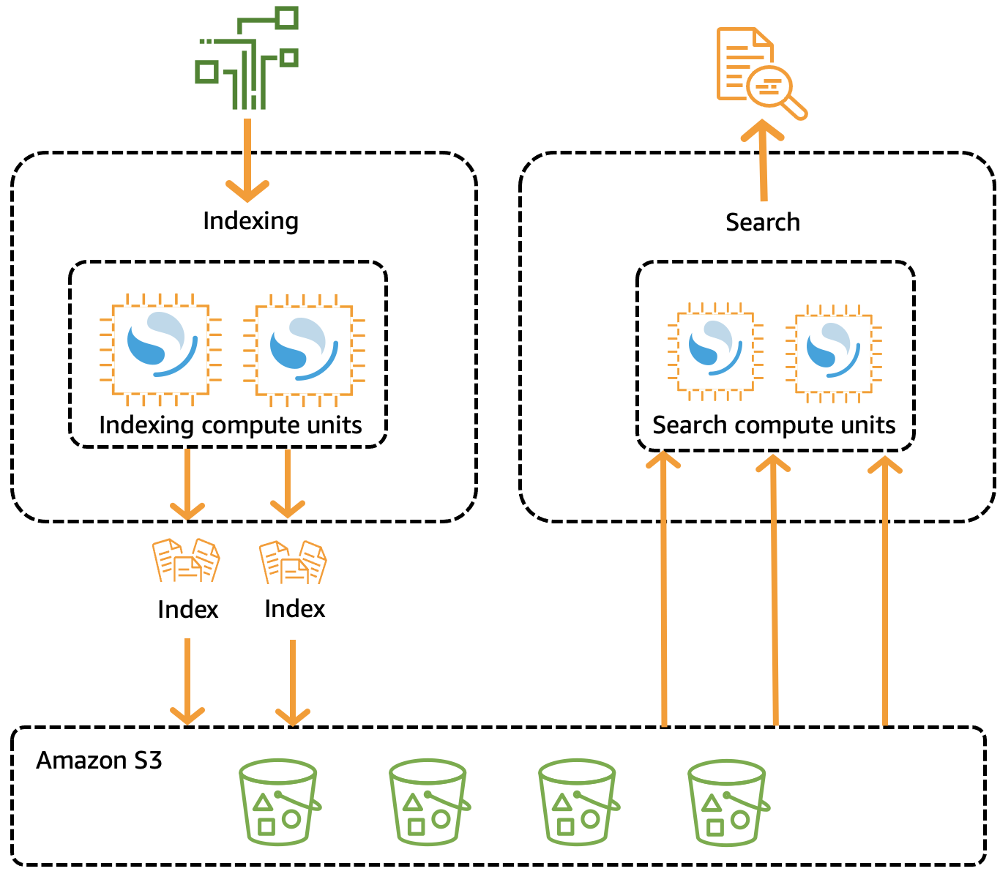
The diagram separates the two compute paths. Indexing compute units read the source data and write indexes to S3. Search compute units scale on the query side and read the same indexes. The team never sizes nodes, so the design trades tuning control for less operating work.
Rule: choose Serverless when traffic is uneven and the team does not want to manage nodes.
Trap: a serverless collection is a poor choice when the question needs shard layout control. Use a managed domain for that.
Source: https://docs.aws.amazon.com/opensearch-service/latest/developerguide/serverless-vector-search.html and https://docs.aws.amazon.com/opensearch-service/latest/developerguide/serverless-overview.html and course slides, page 139.
Amazon Aurora with the pgvector extension
Fact: the Aurora cluster for a knowledge base must sit in the same account as the knowledge base. The setup page lists the table columns that the knowledge base needs.
Fact: the course slides say pgvector adds a vector column type and supports cosine, L2, and inner product distances. It supports IVF or HNSW style indexes. Index limits and version details are Not in source for this section.
Aurora suits data that already sits in a relational database. The vectors join with business rows. A transaction can write both in one commit. Complex filtering uses SQL, which can be easier to read than a search DSL.
Rule: choose Aurora with pgvector when vectors must join or commit with relational data in one system.
Trap: an Aurora cluster in a different account is not a valid knowledge base store under the setup rules. Move the cluster or choose another store.
Source: https://docs.aws.amazon.com/bedrock/latest/userguide/knowledge-base-setup.html and course slides, pages 159 and 657.
Bedrock Knowledge Bases managed vector store
Fact: a managed knowledge base runs the store, indexing, and retrieval for you. Its retrieval always uses hybrid search, which combines keyword and semantic matching. Semantic-only retrieval is not available in this type.
Fact: a managed knowledge base uses managedSearchConfiguration in the retrieval request. A customer-managed knowledge base uses vectorSearchConfiguration. The startsWith and stringContains filters are not supported in the managed type.
Use the managed type when the team wants Bedrock to pick and run the store. Use the customer-managed type when the question names a specific store or a specific index setting. The embedding model and dimension choice can narrow the list of stores you may use.
Rule: choose a managed knowledge base when no store is named and the team wants the least operating work.
Trap: a managed knowledge base hides the store choice. If the scenario names a store, the managed type does not meet that rule.
Source: https://docs.aws.amazon.com/bedrock/latest/userguide/kb-test-retrieve.html and https://docs.aws.amazon.com/bedrock/latest/userguide/knowledge-base-setup.html
Skill 1.5.4: Build advanced search architectures
Search architecture decides which chunks reach the model. Three tools improve the list. Hybrid search widens the match with exact terms. A reranker reorders the matches. Metadata filters remove matches outside the scope. Each tool solves a different failure.
problem"] -->|missing token| N2["Hybrid search adds keyword
matches"] N1 -->|ranked too low| N3["Reranker reorders
candidates"] N1 -->|outside the scope| N4["Metadata filter removes
matches"] N3 -->|cannot add| N5["Missing chunk must be
retrieved first"]
Figure: each search tool fixes a different failure, and a reranker only reorders the chunks that retrieval returned.
OpenSearch for semantic search
Fact: the OpenSearch neural plugin lets an ingest pipeline call an embedding model while documents are indexed. A neural query accepts text and creates the query vector during the search.
Fact: the course slides present the neural plugin as an alternative to the built-in Knowledge Bases integration with OpenSearch Serverless.
A neural design keeps vector work inside the search engine. The application sends text. OpenSearch creates the vectors on both the write path and the query path, with the same model. This removes embedding code from the application.
Rule: choose the neural plugin when the team wants OpenSearch to embed text on write and on query, with one model.
Trap: a neural query on one model over an index built with another model returns poor matches. Keep the model the same on both sides.
Source: course slides, page 144 and page 139.
Hybrid search combining keywords and vectors
Fact: hybrid search combines a keyword match and a vector match in one result set. The course slides say OpenSearch hybrid search needs filterable keyword fields for metadata.
Fact: a managed knowledge base always uses hybrid retrieval. Semantic-only retrieval is not available in that type.
Hybrid search suits queries with codes, names, or rare words. The keyword part finds exact tokens. The vector part finds similar meaning. The result mixes both signals, so exact codes rise without losing semantic matches.
Rule: choose hybrid search when a missing exact token would make the answer wrong.
Trap: hybrid search widens which chunks match. It does not reorder them by a deeper relevance model. Use a reranker for that.
Source: course slides, page 139 and https://docs.aws.amazon.com/bedrock/latest/userguide/kb-test-retrieve.html
Amazon Bedrock reranker models
Fact: a reranker model scores each candidate chunk against the query and reorders the list. Reranking works on text data only.
Fact: in a Retrieve or RetrieveAndGenerate call, reranking replaces the default knowledge base order. The numberOfRerankedResults value cannot exceed numberOfResults, except when query decomposition is on. Then it can reach five times numberOfResults.
Fact: managed knowledge bases use a managed reranker by default. You can set a custom reranker ARN or turn reranking off.
A reranker lets you retrieve a wider list and send fewer, better chunks to the model. Fewer chunks lower token cost and latency. The reranker runs after retrieval, so it cannot add a chunk that retrieval missed.
Rule: choose a reranker when the right chunk is returned but ranked low, and the question asks for better order at lower cost.
Trap: a reranker cannot recover a passage that retrieval never returned. Widen retrieval or fix chunking first.
Source: https://docs.aws.amazon.com/bedrock/latest/userguide/rerank.html and https://docs.aws.amazon.com/bedrock/latest/userguide/kb-test-retrieve.html
Skill 1.5.5: Develop sophisticated query handling systems
The query is the input to retrieval. A weak query gives weak chunks, even with a strong store. Query handling changes the text before retrieval runs. Three named techniques cover this skill. Each adds a model or a workflow step, so each adds latency and cost.
retrieval"] -->|local terms| N2["Query expansion with
approved terms"] N1 -->|two topics| N3["Query decomposition per
part"] N1 -->|follow up turn| N4["Step Functions rewrite"] N3 -->|merge and dedupe| N5["Merged chunks for
generation"] N2 -->|keep original| N6["Exact codes still match"]
Figure: each query technique changes the text before retrieval, and each one adds a model call or a workflow step.
Query expansion with Amazon Bedrock
Query expansion uses a model to add synonyms, canonical names, or product aliases to the user question. The expanded text then goes to retrieval. This helps when users write short phrases or local terms that differ from the document wording.
Give the model an approved vocabulary. Without one, the model can add terms that do not match your corpus. Keep the original query in the request too, so exact codes still match.
Rule: choose query expansion when users use abbreviations or local terms that the documents spell out differently.
Trap: expansion that replaces the user code with a guessed code removes the exact match the user asked for.
Source: course slides, page 297.
AWS Lambda for query decomposition
Fact: query decomposition splits a multi-part question into sub-queries. The Knowledge Bases configuration docs describe query decomposition as a query modification option.
A Lambda function can split the question, call Retrieve for each part, and merge the results before generation. Each part then gets its own embedding and its own candidate list. The merge step removes duplicate chunks.
Rule: choose decomposition when each part of the question needs different evidence.
Trap: one embedding of a two-topic question can match neither topic well. A single larger result count does not fix that.
Source: https://docs.aws.amazon.com/bedrock/latest/userguide/kb-test-retrieve.html and course slides, page 297.
AWS Step Functions for query transformation
A Step Functions workflow runs query transformation as named steps. A typical flow reads the current turn and selected session fields. It then calls a model to rewrite the turn as a full question, and calls Retrieve once. Limits and workflow types are Not in source for this section.
This suits follow-up turns such as "does that rider apply". The rewrite step resolves the reference from trusted session state. The retrieval step stays a single call, which fits a strict limit on retrieval requests.
Rule: choose a Step Functions transformation when the workflow needs fixed steps and one retrieval call after the rewrite.
Trap: summarizing the whole chat before every retrieval adds a model call and can carry unrelated topics into the query.
Source: course slides, page 297. Step Functions limits: Not in source.
Skill 1.5.6: Build consistent access mechanisms
Access mechanisms define how the model reaches retrieval. The design can be a tool the model requests, a workflow the application runs, or a managed agent. The choice affects who runs the search, who checks the chunks, and who logs the call.
Figure: who runs the search and who checks the chunks decides the access pattern.
Function calling for vector search
Fact: in Bedrock, the model does not call the tool itself. Your application runs the tool and returns the result, in client-side tool use. Server-side tool use runs the tool in Bedrock for a registered Lambda function or AgentCore Gateway.
Fact: client-side tool use is available with the Converse and InvokeModel APIs, among others.
Define a vector search tool with a name, a description, and an input schema. When the model asks for the tool, your code calls Retrieve. Your code can then apply entitlement checks, reranking, and trimming before it returns the chunks. This keeps control in your application.
app"] B -->|app validates input| C["App calls Retrieve"] C -->|app checks and trims
chunks| D["Approved chunks as tool
result"] D -->|model writes answer| E["Answer with source list"]
Figure: the application runs the search. The model only asks for it and reads the result.
Rule: choose client-side tool use when the application must inspect chunks before the model sees them.
Trap: a tool result that returns every chunk without checks sends unapproved text to the model. Filter in the tool, not in the prompt.
Source: https://docs.aws.amazon.com/bedrock/latest/userguide/tool-use.html
Model Context Protocol clients for vector queries
The Model Context Protocol is a standard for exposing tools and resources to model clients. An MCP server can wrap a vector search. Each client then calls the same search tool through one protocol. Protocol details are Not in source for this section, so check the protocol docs before you design one.
Use a gateway when many applications need the same search. The gateway handles the protocol and access rules. The vector store and the chunk checks stay behind the gateway.
Rule: choose an MCP-style gateway when several clients need one vector search tool with shared access rules.
Trap: an MCP wrapper does not add access control to the vector store by itself. The gateway must pass a trusted identity to the filter.
Source: https://docs.aws.amazon.com/bedrock/latest/userguide/tool-use.html
Standardized API patterns for retrieval augmentation
A standard pattern keeps one retrieval call shape across models. The Converse API keeps one message shape for supported models. Retrieve returns chunks, scores, and metadata. RetrieveAndGenerate returns a generated answer with citations. Pick one pattern per boundary and keep it stable.
Fact: guardrails apply to the input and the generated response. They are not applied to the references that Knowledge Bases retrieves at runtime.
Rule: choose Retrieve plus a shared Converse call when many models must share one retrieval path with your own checks.
Trap: a guardrail on a retrieval call does not inspect the retrieved references. Check those references in your own code or with a grounding check.
Source: https://docs.aws.amazon.com/bedrock/latest/userguide/kb-test-retrieve.html and https://docs.aws.amazon.com/bedrock/latest/userguide/tool-use.html
Amazon Bedrock Agents action groups
An agent runs an orchestration loop. The model picks an action, a Lambda action group runs the code, and the result returns to the loop. A knowledge base step can run inside the same loop. The agent then decides when to stop or ask the user. Agents suit multi-step tasks with several tools.
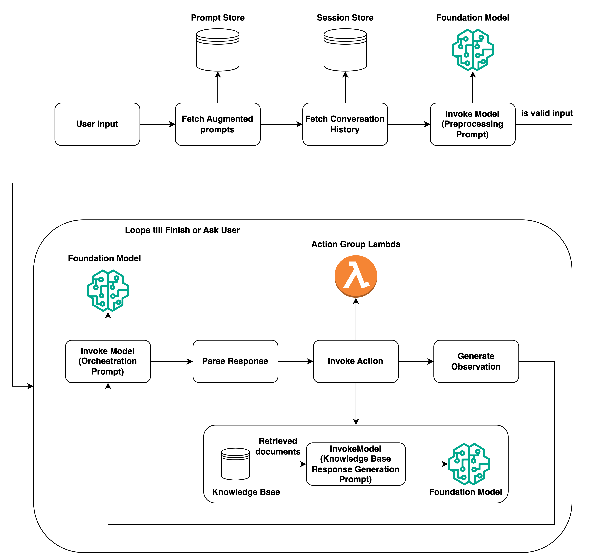
The diagram shows the loop from user input to the final answer. The orchestration model chooses the next step. The action group Lambda runs your code, and the knowledge base step retrieves documents for a response. The loop repeats until the agent finishes or asks the user.
Rule: choose an agent with action groups when the question needs several tools chosen by the model in one loop.
Trap: an agent is more moving parts than one tool call. Choose it only when the loop itself is the requirement.
Source: https://docs.aws.amazon.com/bedrock/latest/userguide/agents-how.html
X versus Y: confusable pairs
Each pair below has one decision tree, a three-row comparison, one question, and one trap. Use the question to decide. Then test the trap against the wrong options.
Hierarchical versus semantic chunking
section| B["Hierarchical chunking"] A -->|topics mix in one
chunk| C["Semantic chunking"] A -->|one document is one
unit| D["No chunking"]
Figure: the failure type decides the strategy.
- Purpose: hierarchical keeps small matches with parent context. Semantic places boundaries at topic shifts.
- Input: hierarchical takes parent size, child size, and overlap. Semantic takes maximum tokens, buffer size, and breakpoint percentile.
- Output or effect: hierarchical can return fewer results than requested. Semantic makes variable-size chunks and calls a model at ingestion.
The question to ask is whether the answer lacks surrounding context, or whether one chunk mixes two topics. Those are different failures with different fixes.
Trap: semantic chunking does not recover a table that the parser never extracted. That is a parser problem.
Managed chunking versus Lambda chunking
Figure: use custom code only when managed options cannot express the rule.
- Purpose: managed chunking applies a standard split. Lambda applies your own split rule.
- Input: managed takes a strategy and settings. Lambda takes the raw file and writes new objects.
- Output or effect: managed returns chunks with the standard metadata. Lambda output needs your own metadata and tests.
The question is whether the managed options can express the split. If they can, managed chunking has less code to own.
Trap: a Lambda split without source location metadata loses the citation path. Keep the source identifier in each output chunk.
Titan dimensions versus post-processing reduction
size| B["Set the native dimension"] A -->|model does not offer
it| C["Reduce after embedding"] C -->|index must match| D["Retest and rebuild the
index"]
Figure: a native size avoids extra code and a second retest.
- Purpose: a native size is set by the model. Post-processing reduces a finished vector.
- Input: native takes the text and a size setting. Post-processing takes the full vector and a reduction method.
- Output or effect: native gives a vector the model was trained for. Post-processing changes the vector space and needs a full retest.
The question is whether the model offers the size you need. If it does, use it. Post-processing adds a second model step that you must test.
Trap: reducing vectors with a method outside the model changes the space the index was built on. Rebuild the index and retest before launch.
Retrieve versus RetrieveAndGenerate
model runs"] -->|own prompt or own
checks| B["Retrieve"] A -->|one call with cited
answer| C["RetrieveAndGenerate"] B -->|inspect content
score location| D["Diagnose retrieval"]
Figure: Retrieve gives control, RetrieveAndGenerate gives a managed answer.
- Purpose: Retrieve returns evidence. RetrieveAndGenerate returns evidence plus a generated answer.
- Input: Retrieve takes a query and a retrieval configuration. RetrieveAndGenerate takes the query and generation settings.
- Output or effect: Retrieve returns results with content, metadata, location, and score. RetrieveAndGenerate returns text with citations.
The question is whether your code must see or change the chunks before the model runs. If yes, call Retrieve.
Trap: a multimodal knowledge base with an S3 content bucket does not support RetrieveAndGenerate. Check the knowledge base type first.
Reranker versus hybrid search
low| C["Reranker"] A -->|wrong scope| D["Metadata filter"]
Figure: a missing token, a low rank, and a wrong scope need three different tools.
- Purpose: hybrid adds a keyword match to the vector match. A reranker orders the candidates by relevance.
- Input: hybrid takes query text and its vector. A reranker takes the query and each candidate chunk.
- Output or effect: hybrid can add exact matches to the set. A reranker keeps the set and changes the order.
The question is whether the right chunk is missing or only low in the list. A missing exact token needs hybrid. A low rank needs a reranker.
Trap: a reranker is not a scope control. It can still place a wrong-scope chunk high if the words match. Use a metadata filter.
OpenSearch Serverless versus managed OpenSearch
few operations| B["Serverless collection"] A -->|shard and node
tuning needed| C["Managed domain"] C -->|capacity runs all
day| D["Pay for provisioned
capacity"]
Figure: operations effort and tuning control separate the two options.
- Purpose: both store and search vectors. Serverless removes node management. Managed gives full control.
- Input: serverless takes a collection and an index mapping. Managed takes a domain with instance and shard settings.
- Output or effect: serverless bills by use. Managed bills for running capacity, with more predictable latency.
The question is whether the team must tune shards and nodes. If yes, choose a managed domain.
Trap: a managed domain for uneven traffic and a small operations team pays for idle capacity. Serverless fits that case better.
Aurora pgvector versus OpenSearch
rows| B["Aurora pgvector"] A -->|search engine
features| C["OpenSearch"] C -->|keyword and vector
together| D["OpenSearch hybrid query"]
Figure: relational work points to Aurora, search engine work points to OpenSearch.
- Purpose: Aurora keeps vectors with relational data. OpenSearch is a search engine with vector support.
- Input: Aurora takes rows with an embedding column and SQL. OpenSearch takes documents with mappings.
- Output or effect: Aurora gives SQL joins and transactions. OpenSearch gives hybrid and faceted search.
The question is whether the vectors must join or commit with business rows.
Trap: Aurora as the choice for a large keyword search platform. The search features and tuning control sit in OpenSearch.
Query expansion versus query decomposition
one question| C["Query decomposition"] C -->|each part retrieved| D["Merge and dedupe chunks"]
Figure: vocabulary problems need expansion, topic mixing needs decomposition.
- Purpose: expansion adds alternate terms to one query. Decomposition splits one query into several.
- Input: expansion takes the question and an approved vocabulary. Decomposition takes the question and a split rule.
- Output or effect: expansion gives one richer query. Decomposition gives several queries and a merge step.
The question is whether the user uses the wrong words, or asks two things at once.
Trap: decomposition for a single-topic question adds calls and latency with no gain in recall.
Client-side tool use versus Bedrock Agents action group
call| B["Client-side tool use"] A -->|model runs a
multi-step loop| C["Agent with action group"] C -->|needs trace and loop| D["Agent trace review"]
Figure: one tool call is a client decision, a loop is an agent decision.
- Purpose: client-side tool use lets the model request one retrieval. An agent plans a sequence of actions.
- Input: client-side takes tool definitions and your code. An agent takes its configuration, action groups, and knowledge bases.
- Output or effect: client-side returns the tool result to your code. An agent returns a final answer after its loop.
The question is whether one tool call is enough, or the model must plan several steps.
Trap: an agent for a single retrieval adds a loop, traces, and cost that the requirement does not ask for.
Read a long question
Each worked scenario uses three sentences. Underline the constraint words. Remove each wrong option with one reason. Then check the answer.
Worked scenario one: a claims assistant with stale answers
Scenario: a claims team stores guides in S3 and uses a managed knowledge base. Adjusters report that answers miss the newest guide updates from the same day. The team wants no custom sync code and no new store.
missing"] -->|ingestion gap| N2["New guide not in the index"] N2 -->|sync fixes it| N3["Scheduled or event driven
sync"] N1 -->|rejected option| N4["Lambda writes vectors
directly"] N1 -->|rejected option| N5["Larger result count"] N1 -->|rejected option| N6["Stronger generation model"]
Figure: the missing guide points to ingestion, so a sync fixes the answers while three other options miss the fault.
Constraint words: same day, no custom sync code, no new store.
- Trap: a Lambda that writes vectors directly to the store. It adds custom embedding and delete code the team does not want.
- Trap: a larger result count. The new guide is not in the index, so more results add nothing.
- Trap: a stronger generation model. The fault sits in ingestion, not in generation.
Rule: answer is a scheduled or event-driven sync of the managed knowledge base, so new guides enter the index.
Worked scenario two: a parts search with exact codes
Scenario: a service desk searches manuals for part codes such as short alphanumeric strings. Semantic matches return similar parts that have different codes. The team can change the query, but not the store.
matches"] N1 -->|rejected option| N3["Larger chunk size"] N1 -->|rejected option| N4["Reranker alone"] N1 -->|rejected option| N5["Larger embedding model"]
Figure: hybrid search adds exact keyword matches, while the three rejected options do not add an exact token.
Constraint words: part codes, different codes, not the store.
- Trap: a larger chunk size. Chunk size does not add an exact token to the match.
- Trap: a reranker alone. The similar parts are still in the set, and the reranker only reorders them.
- Trap: a model change to a larger embedding. The codes still have no close meaning in vector space.
Rule: answer is hybrid search, so exact codes add keyword matches to the vector results.
Worked scenario three: a bank with entitled documents only
Scenario: a bank answers questions from policy documents. Each customer role may read only some documents, and the app receives the role from a signed session token. The model must never see chunks the role cannot read.
documents"] -->|signed token| N2["Server builds the filter"] N2 -->|in retrieval tool| N3["Only approved chunks
returned"] N3 -->|before generation| N4["Model sees approved text
only"] N1 -->|rejected option| N5["Prompt says ignore other
roles"] N1 -->|rejected option| N6["Browser sends role field"] N1 -->|rejected option| N7["Guardrail on retrieval
call"]
Figure: the server builds the filter from the signed token, so the model never receives chunks the role cannot read.
Constraint words: may read only some, signed session token, never see.
- Trap: a prompt that tells the model to ignore other roles. The chunks are still retrieved and sent.
- Trap: a role field the browser sends. The client can change it, so the server must set the filter.
- Trap: a guardrail on the retrieval call. It does not inspect retrieved references.
Rule: answer is a server-side filter built from the signed token, applied in the retrieval tool before generation.
Distractor patterns seen in the tests
These patterns repeat across long questions. Each one looks right on a first read. Each one fails for a concept reason.
first read"] -->|check the concept| N2["Name the failing concept"] N2 -->|control level| N3["Serverless where tuning is
needed"] N2 -->|wrong stage| N4["Fix at the stage that
dropped it"] N2 -->|by instruction| N5["Prompt rule used as a
check"] N2 -->|size or agent| N6["Size mismatch or agent for
one lookup"]
Figure: each distractor looks right at first and fails on a concept such as control level, stage, instruction, or size.
Trap: right store, wrong control level. A serverless option is offered for a team that needs shard tuning. The control need decides.
Trap: a fix at the wrong stage. A reranker or larger prompt is offered for missing chunks. The stage that dropped the chunk must change.
Trap: a model change for a retrieval problem. A larger model is offered for missing facts. Facts live in the index, not in the model.
Trap: a size mismatch. A vector size is chosen that the index or the model does not support. The index and model must agree.
Trap: post-processing in place of a native option. A custom reduction step is offered when the model already offers the size.
Trap: security by instruction. A prompt rule is offered instead of a filter or a server check. Instructions do not stop retrieval.
Trap: a guardrail as a retrieval check. A guardrail is offered to check retrieved references. It does not cover them.
Trap: cross-account mismatch. An Aurora cluster in another account is offered as the knowledge base store. The setup rules require the same account.
Trap: an agent for a single lookup. An agent loop is offered for one retrieval call. The loop adds cost with no added step.
Drill
Each prompt is one line. Read the answer on the next line. Then say why the wrong option fails.
fails"]
Figure: each drill prompt is answered aloud, checked against the answer line, and then explained through its wrong option.
Long policy PDFs hold answers inside rate tables. What setting must change first?
Rule: the parser, because the default parser keeps text and can miss table values.
A reranker is on, but the correct passage never appears in the candidates. What is wrong?
Trap: the reranker only reorders candidates. Widen retrieval or fix chunking.
A question names a product code that semantic search misses. Which search type fixes it?
Rule: hybrid search, with filterable keyword fields in the index.
An app must inspect chunks before the model sees them. Which operation fits?
Rule: Retrieve, called from your code or from a client-side tool.
A team wants one vector search tool shared by several client apps. What fits best?
Rule: a gateway that exposes one search tool, with a trusted identity passed to the filter.
A corpus is in one language, and queries come in another. What is the issue?
Trap: the cross-language query returns sub-optimal results. Use a model and corpus that match the query language.
An Aurora cluster sits in a second account. Can it store the knowledge base vectors?
Trap: no. The Aurora cluster must sit in the same account as the knowledge base.
An index holds 512-dimensional vectors, but the model now returns 1,024. What must happen?
Rule: the index must match the model size, so rebuild the index with the new size.
A user asks two questions in one message about two topics. What does the design need?
Rule: query decomposition, with one retrieval per part and a merge step.
Users ask for a policy rule using a local term that the documents never use. What fixes it?
Rule: query expansion with an approved vocabulary, while keeping the original query.
A guardrail is attached to a retrieval call. Are the retrieved references inspected?
Trap: no. Guardrails cover the input and the generated response, not the retrieved references.
A team must use a managed knowledge base, but it names a specific vector store. What is the conflict?
Trap: the managed type hides the store choice, so a named store needs the customer-managed type.
An S3 vector bucket is the store, and the design uses large hierarchical chunks. What is the risk?
Trap: hierarchical chunking is not recommended with an S3 vector bucket, and large combined token counts can exceed metadata limits.
Sources
Source: AWS documentation fetched or checked for this section.
section"]
Figure: the task draws on AWS documentation pages and a course slide extract, each cited in its section.
- https://docs.aws.amazon.com/bedrock/latest/userguide/kb-chunking.html
- https://docs.aws.amazon.com/bedrock/latest/userguide/rerank.html
- https://docs.aws.amazon.com/bedrock/latest/userguide/kb-test-retrieve.html
- https://docs.aws.amazon.com/bedrock/latest/userguide/kb-metadata.html
- https://docs.aws.amazon.com/bedrock/latest/userguide/knowledge-base-setup.html
- https://docs.aws.amazon.com/bedrock/latest/userguide/titan-embedding-models.html
- https://docs.aws.amazon.com/bedrock/latest/userguide/tool-use.html
- https://docs.aws.amazon.com/bedrock/latest/userguide/kb-how-it-works.html
- https://docs.aws.amazon.com/bedrock/latest/userguide/agents-how.html
- https://docs.aws.amazon.com/opensearch-service/latest/developerguide/knn.html
- https://docs.aws.amazon.com/opensearch-service/latest/developerguide/serverless-vector-search.html
- https://docs.aws.amazon.com/opensearch-service/latest/developerguide/serverless-overview.html
Source: course slide extract for this module, cited by page number in each section.
Task 1.6: Implement prompt engineering strategies and governance for FM interactions
After this section you can decide which prompt control belongs in a design. You can tell a managed prompt version from a file, a guardrail from a Comprehend call, and a flow from a Step Functions state machine. You can also describe how a prompt moves from development to QA to production, and how it moves back. The method is the same as in the rest of this module. Find the deciding constraint, then reject each wrong option with one reason.
choice"] N1 -->|flow or workflow| N4["Path design choice"] N1 -->|release path| N5["Promotion and rollback"]
Figure: each governance question in this task points to one control family, from prompt versions to promotion.
The deciding constraint
Read the last sentence of the question first. It names what must change, be proven, be stopped, or be recorded. Then scan the scenario for constraint words such as version, approve, every call, history, or edge case. Those words remove most options before you read the details.
The tree below starts from the scenario and ends at a service family. Use it as a first filter only. The sections after it explain each branch in depth.
first"] -->|prompt text must be
reused| B["Prompt Management version"] A -->|rule applies to
every call| C["Guardrail numbered version"] A -->|steps with waits or
approvals| D["Step Functions state
machine"] A -->|fixed prompt chain
with branches| E["Bedrock Flows"] A -->|intent or entities
in user text| F["Comprehend classifier"] A -->|past turns must
persist| G["DynamoDB items by session"] A -->|who used which
prompt| H["CloudTrail and invocation
logs"] A -->|output must match a
check| I["Lambda validator"]
Figure: First filter from the scenario to the service family.
Signal words for each branch:
- Fact: Template, variables, reviewed wording, or reusable prompt point to Prompt Management.
- Fact: Every call, every request, or before the model sees text point to Guardrails or a pre-step.
- Fact: Wait, approval, retry, or resume later point to Step Functions.
- Fact: Ordered prompt nodes, branch on a label, or a designed path point to Bedrock Flows.
- Fact: Intent label, entity, offset, or PII point to Comprehend.
- Fact: Earlier turns, session, or history point to DynamoDB.
- Fact: Who, when, or which API point to CloudTrail. Text of the call points to invocation logs.
Exam tip: The word exact points to a numbered version or a version ARN, not to the draft. The word last approved points to a stored pointer that can move back.
Source: https://docs.aws.amazon.com/bedrock/latest/userguide/prompt-management.html and https://docs.aws.amazon.com/bedrock/latest/userguide/logging-using-cloudtrail.html
Skills in this task
The task has six skills. Each skill names one or more services or techniques. The test wording usually asks which service fits the skill, and it rarely asks whether the skill matters. The sections below map each skill to its services and to the question that decides it.
Skill 1.6.1: Model instruction frameworks
This skill controls what the model does and how its output looks. The named tools are Prompt Management for role definitions, Guardrails for responsible AI rules, and template configurations for the response format. The deciding question is where the control lives: in the text sent to the model, in a managed resource, or in a check after the call.
control"] -->|role| N2["System instructions"] N1 -->|format| N3["Template or output
specification"] N1 -->|safety policy| N4["Guardrail on each call"] N2 -->|not a hard limit| N5["Guardrail or check
enforces limits"]
Figure: the role, the format, and the safety policy sit in three layers, and only guardrails and checks enforce limits.
Read the skill as three layers. The role sits in the system instructions. The format sits in the template or in an output specification. The safety policy sits in a guardrail that runs on each call. A wrong option usually puts one layer in the wrong place.
Skill 1.6.2: Interactive AI systems that keep context
This skill keeps a conversation going over several turns. Step Functions runs clarification steps, Comprehend recognizes intent, and DynamoDB stores the conversation history. The deciding question is whether the work is a sequence with waits, a text label, or a set of stored turns.
needs"] -->|waits or steps| N2["Step Functions"] N1 -->|text label| N3["Comprehend classification"] N1 -->|stored turns| N4["DynamoDB conversation
history"] N2 -->|clarification steps| N5["Question task for missing
field"]
Figure: the deciding question sends each part of a conversation to a workflow, a classifier, or stored turns.
Skill 1.6.3: Prompt management and governance
This skill proves who changed a prompt and who used it. Prompt Management holds parameterized templates and versions. S3 stores the template repository, CloudTrail tracks API usage, and CloudWatch Logs records access. The deciding question is whether the auditor asks about a change, a caller, or the text of one call.
Figure: the auditor question decides whether the change history, the caller record, the access record, or the call text is needed.
Skill 1.6.4: Quality assurance for prompts
This skill tests whether a prompt still works before release. Lambda verifies the expected output, Step Functions runs edge cases in order, and CloudWatch supports regression checks on live signals. The deciding question is what the test compares against, a rule in code or a baseline score from a fixed dataset.
release"] -->|rule in code| N2["Lambda verifies expected
output"] N1 -->|edge cases| N3["Step Functions runs cases"] N1 -->|live signals| N4["CloudWatch regression
checks"] N1 -->|baseline score| N5["Fixed dataset comparison"]
Figure: a rule in code, a list of edge cases, live signals, or a baseline score each give a different quality check.
Skill 1.6.5: Refine prompts beyond basic prompting
This skill improves answers without a new model. The named techniques are structured input components, output format specifications, chain-of-thought instruction patterns, and feedback loops. The deciding question is which part of the prompt needs more structure, or which signal from users shows that a change helped.
model"] -->|needs structure| N2["Structured input
components"] N1 -->|reply shape| N3["Output format
specifications"] N1 -->|steps needed| N4["Chain of thought
instruction"] N1 -->|user signal| N5["Feedback loops"]
Figure: each refinement technique answers one question about the prompt or about signals from users.
Skill 1.6.6: Complex prompt systems
This skill builds a multi-step prompt path. The task names Prompt Flows for sequential chains, condition-based branching, reusable components, and pre-processing and post-processing steps. The current AWS documentation names the feature Amazon Bedrock Flows, and this section treats both names as one feature. The deciding question is whether the path is mainly model steps or mainly service steps.
model"]
Figure: a path of mostly model steps fits a flow, and a path of mostly service steps fits Step Functions.
Prompt versions and the path from dev to QA to production
A prompt change is a release. It needs the same control as a code change. The control has two parts: a fixed artifact that each stage tests, and a pointer that each stage reads. This part of the section explains both parts and the moves between stages.
What a prompt version is
A prompt in Prompt Management has a working draft. Saving the prompt keeps a draft version that keeps changing. A version is a snapshot of the prompt at one point in time. Production should reference a version because a draft can change at any moment.
changing"] -->|create version| N2["Numbered snapshot"] N2 -->|production uses| N3["Version ARN for
applications"] N1 -->|not for production| N4["Draft can change at any
moment"]
Figure: a version is a snapshot, so production should reference it instead of the draft that keeps changing.
A prompt can hold variables written in double curly braces. A prompt can also hold variants, which are alternative messages or model settings for testing. Compare mode runs up to three variants side by side in the console. The chosen variant becomes the draft, and a new version is then created from it.
Fact: A variable is a placeholder. Test values are temporary, and they are not saved with the prompt.
Rule: Production and QA call the same version ARN. Only the environment values change between stages.
Trap: Copying prompt text into application code leaves no managed version for the reviewer to compare.
Source: https://docs.aws.amazon.com/bedrock/latest/userguide/prompt-management-create.html and https://docs.aws.amazon.com/bedrock/latest/userguide/prompt-management-deploy.html
Dev, QA, and production
Dev edits the draft and runs many variants. QA receives one numbered version as the release candidate. Production receives the version that QA passed and that a person approved. The prompt text does not change between QA and production. Only the environment values change, such as the model ID, the guardrail version, the knowledge base, and the logging destination.
version"] N3 -->|only these change| N4["Environment values such as
model ID"]
Figure: dev edits a draft, QA tests one numbered version, and production receives the same approved version.
The matrix below shows the controls for each stage. Yes means the stage has the control. No means it does not. The rows are design choices of this section, and the AWS services do not set them.
| Control | Dev | QA | Prod |
|---|---|---|---|
| Edits to the working draft allowed | Yes | No | No |
| Calls a numbered prompt version ARN | No | Yes | Yes |
| Guardrail numbered version pinned | No | Yes | Yes |
| Invocation logging enabled | No | Yes | Yes |
| Real customer data allowed | No | No | Yes |
| Approval recorded before entry | No | No | Yes |
Figure: Stage controls for one prompt. Design choices with yes or no values.
Promotion steps
Use these steps to move one prompt version through the stages. Each step has one action and one check.
- Edit the draft in the prompt builder and run the test variables.
- Create a version and record its number and its version ARN.
- Run the fixed regression set against that version in QA.
- Record the approval before the production stage starts.
- Set the production configuration to the approved version ARN.
- Watch error, validation, and latency signals during the first traffic period.
The flow below shows the two gates in the path. The regression gate asks whether the version works. The approval gate asks whether a person accepts the change.
Management"] --> B["Create version for release"] B --> C["Regression set in QA"] C -->|a case fails| D["Edit draft and create new
version"] C -->|all cases pass| E["Approval recorded outside
prompt draft"] E -->|approved| F["Production config points
to version"] E -->|rejected| G["Production keeps old
version"] F -->|metrics breach| H["Repoint config to previous
version"]
Figure: Promotion path with a regression gate, an approval gate, and a rollback branch.
The regression gate runs first because it is automatic and cheap to repeat. The approval gate runs second, after the team has evidence. The rollback branch exists even when the release passes, because live traffic can show a problem that the fixed set did not cover.
Source: https://docs.aws.amazon.com/bedrock/latest/userguide/prompt-management-deploy.html
Rollback
Rollback moves a pointer back to a version that already exists. It does not rebuild a prompt under pressure. A version is a snapshot, so the earlier version still holds the earlier text. Editing the draft back to old wording is not a rollback, because the draft is a new working copy with no release record.
Rule: Keep the previous approved version ARN in configuration, so that rollback is one value change.
version ARN"] A -->|guardrail rule| C["Pin earlier guardrail
version"] A -->|flow logic| D["Point flow alias to
earlier version"] A -->|format check| E["Roll back Lambda validator"] A -->|model change| F["Restore previous model ID
value"]
Figure: Rollback path depends on the artifact that changed.
Trap: A rollback that edits the draft has no release record. Point production to a version that never changed.
Source: https://docs.aws.amazon.com/bedrock/latest/userguide/flows.html and https://docs.aws.amazon.com/bedrock/latest/userguide/prompt-management-deploy.html. Version count limits: Not in source.
Services and techniques in scope
Each section below gives one fact, one rule, one trap, the services it pairs with, and its limits. A number that the fetched AWS pages do not state is marked Not in source. The sections follow the order of the skills, so each service appears where the task names it.
Amazon Bedrock Prompt Management
Fact: Prompt Management stores reusable prompts. A prompt holds a message, variables, a model or inference profile choice, and inference settings. An application refers to a version ARN.
prompt"] -->|numbered versions| N2["Prompt Management template"] N2 -->|TEXT or CHAT| N3["Template type sets message
shape"] N2 -->|passes variables| N4["Application calls the
prompt"] N2 -->|no steps or waits| N5["Use Flows or Step
Functions"]
Figure: a managed prompt gives reusable numbered versions, and it does not run steps or waits.
Fact: The template type is TEXT or CHAT. CHAT works only with models that support the Converse API. Variables are written in double curly braces.
Rule: Use it when several applications reuse one prompt, and each release needs a numbered version.
Trap: Prompt Management does not run steps, branch, or wait. Use Flows or Step Functions for a path, and keep the prompt inside the path.
The application sends the prompt ARN in the model ID field and passes the variable values. The request does not carry the messages, because the template already defines them. A Converse call with a managed prompt cannot include the system, inference configuration, or tool configuration fields. The fixed template is the source of those settings.
Limits and numbers: version count, template size, and variable count are Not in source.
Source: https://docs.aws.amazon.com/bedrock/latest/userguide/prompt-management.html, https://docs.aws.amazon.com/bedrock/latest/userguide/prompt-management-test.html, and https://docs.aws.amazon.com/bedrock/latest/userguide/prompt-management-create.html
Parameterized templates
A parameterized template keeps the fixed wording once. Variables such as customer tier, product name, or language change for each call. The template type decides the shape of the message. TEXT suits one prompt string, and CHAT suits a system part plus conversation turns.
Versions and the working draft
Saving a prompt keeps a draft version that changes with each edit. Creating a version fixes a snapshot for use by an application. Variants are alternative settings used for testing, and they are not versions. A production configuration must name a version, never the draft.
Approval workflow outside the service
The Prompt Management overview that this section read names no built-in approval step. Approval is built from IAM permissions, a release pipeline, and a recorded decision. Limit the users who can create versions with IAM policies. A pipeline or Step Functions workflow can wait for the decision, then update the configuration.
Trap: Giving every developer write access removes the review step. A reviewer cannot approve a change that the author can publish alone.
Role definitions
A role definition tells the model who it is, what it may do, and what it must refuse. It belongs in the system part of the prompt, or in the first part of a CHAT template. A role is a control on the model behavior, not a hard limit. Guardrails and checks after the call still enforce the limits.
Figure: the role belongs in the system part, and only a guardrail or a validator enforces a limit.
Fact: The Converse API accepts a system prompt and earlier user and assistant turns. A CHAT template in Prompt Management stores these parts.
Rule: Put the role in the system part. Put the user input and variables in the user part.
Trap: A role sentence does not enforce a limit. Only a guardrail or a validator enforces a limit.
Limits and numbers: maximum system prompt length is Not in source.
Template configurations for response format
A template configuration fixes the shape of the response. The prompt states the schema, and variables fill the content. The application then parses the reply and checks it against the same schema. Prompt Management stores the template, and Lambda or the caller performs the check.
check"]
Figure: the template states the format, and code checks each reply against the same schema.
Rule: Ask for one format in the template, then check the format in code. Do not rely on the wording alone.
Trap: Choosing the CHAT template type does not make a reply valid JSON. It changes only the message shape that the model receives.
Limits and numbers: a built-in structured output setting for every model is Not in source for this section.
Amazon Bedrock Guardrails
Fact: Guardrails applies configured policies to user inputs and to model responses. The policies cover harmful content, blocked subjects, custom words, personal data, answer grounding, and logical rule checks.
or Converse"] N1 -->|check text alone| N3["ApplyGuardrail API"] N2 -->|pin for production| N4["Numbered guardrail version"] N2 -->|attack filter| N5["Input tags around
untrusted text"]
Figure: a guardrail runs on each call, production pins a numbered version, and one filter needs input tags around untrusted text.
Fact: A guardrail has a working draft and numbered versions. It runs during InvokeModel or Converse when the request names its ID and version. It also runs alone through the ApplyGuardrail API.
Rule: Use a guardrail when a rule must act on each input or each output, not on a sample of traffic.
Trap: A guardrail that points at the draft changes behavior when someone edits the draft. Pin a numbered version for production.
Trap: The prompt attack filter needs input tags around the untrusted text on InvokeModel. Without tags, the filter does not evaluate the input.
Limits and numbers: filter strength scale and per-policy item counts are Not in source for this section.
Source: https://docs.aws.amazon.com/bedrock/latest/userguide/guardrails.html and https://docs.aws.amazon.com/bedrock/latest/userguide/guardrails-tagging.html
Filters and what each one blocks
- Content filters detect harmful text or image content in five named categories and one prompt attack category. Each category has its own strength.
- Denied topics block topics that you define in plain language, such as tax advice.
- Word filters block exact words or phrases with case-insensitive, whole-word matching.
- Sensitive information filters block or mask PII by probabilistic detection, and they accept custom regex patterns.
- Contextual grounding checks flag answers that are not supported by a source passage, which suits RAG.
- Automated reasoning checks test an answer against logical rules that you supply.
The filters work together in one guardrail. A single guardrail can hold several filter types, and the combined result decides the action. The sensitive information filter is a runtime control on the text of a call. It is not an inventory tool for stored data.
Input tags for InvokeModel and content blocks for Converse
For InvokeModel, wrap only the untrusted user text in a tag. The tag uses the reserved guardContent prefix and a suffix that changes for each request. Content outside the tags is not evaluated. For Converse, mark the content block with the guardrail configuration instead of using XML tags.
Rule: Tag the untrusted part only. Leave the system instructions and trusted reference text outside the tags.
call"] -->|InvokeModel call| B["Wrap user text in input
tags"] A -->|Converse call| C["Set guardrail config on
content block"] A -->|Check text without a
model call| D["ApplyGuardrail API"] A -->|Flow prompt node| E["Set guardrail config on
prompt node"] B -->|prompt attack filter| F["Tags are required for that
filter"]
Figure: Where the guardrail configuration goes for each call type.
Source: https://docs.aws.amazon.com/bedrock/latest/userguide/guardrails-tagging.html and https://docs.aws.amazon.com/bedrock/latest/userguide/flows-nodes.html
Structured input components
Structured input components split a prompt into named parts. Typical parts are the role, the task, the reference material, the examples, the user input, and the output rules. Each part has a clear boundary and one job. Variables fill the parts, so a team can change one part and test only that part.
parts"] -->|one name one job| N2["Role task examples and
rules"] N1 -->|user input part| N3["Input tag wraps this part"] N1 -->|change one part| N4["One part changed per test"] N4 -->|not validation| N5["Validation still needed"]
Figure: each named part has one job, and only one part changes in each test run.
The same boundaries help with guardrails. The untrusted user input has its own part, so the input tag wraps that part alone. A reviewer can also read the prompt and see which text came from the user.
Rule: Give each part one name and one job. Change one part per test run.
Trap: Structure does not replace validation. A well-labeled prompt can still return a wrong answer.
Limits and numbers: token limits per part are Not in source.
Output format specifications
An output format specification names the exact fields, their types, and their allowed values. It can appear in the prompt as a schema, or in the template as a fixed block. The application checks the reply against the same schema. Store the schema in one reusable component, so that every prompt version uses one format.
specification"] -->|fields and types| N2["One reusable schema"] N2 -->|prompt or template| N3["Every prompt version uses
it"] N3 -->|model reply| N4["Lambda checks the reply"] N1 -->|sentence only| N5["A request not a check"]
Figure: one reusable schema serves every prompt version, and a Lambda check enforces it after the model call.
Rule: Write the schema once. Check each reply against it in Lambda after the model call.
Trap: A format sentence in the prompt is a request. Only a parser or validator enforces the format.
Chain-of-thought instruction patterns
A chain-of-thought instruction asks the model to reason in steps before it gives the final answer. The pattern helps tasks with several rules, such as a classification that depends on three conditions. Ask for the final answer in its own field, so the code can parse it without reading the reasoning. Use the pattern only when the task needs steps.
instruction"] N1 -->|simple task| N3["No reasoning request"] N2 -->|final answer| N4["Separate field for code"] N2 -->|guardrail check| N5["Do not assume reasoning
was screened"]
Figure: reasoning steps suit tasks with several rules, and the final answer goes in its own field.
Rule: Ask for reasoning only when the task needs steps. Keep the final answer in a separate field.
Trap: The guardrail description excludes reasoning content blocks from its checks. Do not assume that reasoning text was screened.
Limits and numbers: token cost of reasoning output is Not in source.
Source: https://docs.aws.amazon.com/bedrock/latest/userguide/guardrails.html
Feedback loops
A feedback loop records a rating or a correction for each answer. Each record carries the prompt version ARN and the model ID. The team reviews low-rated answers, adds the cases to the regression set, and edits the draft. The loop closes when the new version passes the set and the ratings improve.
model"] N2 -->|low rating| N3["Case added to regression
set"] N3 -->|edit draft| N4["New version passes the set"] N4 -->|ratings improve| N5["Loop closes"]
Figure: each rating carries the prompt version, and low rated answers feed the next version through the regression set.
Rule: Store the prompt version ARN with every rated answer. Without it, no rating can be tied to a prompt.
Trap: A rating with no request ID cannot be matched to the call that produced it.
Limits and numbers: a built-in feedback API for prompts is Not in source.
AWS Step Functions
Fact: Step Functions runs a state machine. It coordinates tasks with state, choices, retries, waits, and parallel branches. A Choice state sends each run to one path, based on a value in the input.
approvals"] -->|long run| N2["Standard workflow"] N1 -->|short runs| N3["Express workflow"] N2 -->|waits for a person| N4["Clarification or approval
path"] N3 -->|no callbacks| N5["Callback patterns not
supported"]
Figure: Standard fits long waits for a person, and Express fits short runs where a repeat is safe.
Fact: A Standard workflow runs for up to one year and follows an exactly-once model. An Express workflow runs for up to five minutes. Asynchronous Express runs at least once, and synchronous Express runs at most once.
Rule: Use Standard for a clarification or approval path that waits for a person or runs for days.
Rule: Use Express for high-volume, short runs where a repeat is safe.
Trap: Express workflows do not support the callback or job-run integration patterns. A workflow that waits for a human reply needs Standard.
Trap: A state machine around one model call adds cost and history with no benefit. A single Converse call is enough for one step.
Standard workflows keep execution history that you can retrieve through the Step Functions API for up to 90 days after a run completes. Standard runs bill by state transition. Express runs bill by execution count, duration, and memory.
Limits and numbers: quotas for start rate and state transition rate are in the Step Functions quota pages, not in this section. Value: Not in source.
Source: https://docs.aws.amazon.com/step-functions/latest/dg/choosing-workflow-type.html and the Step Functions overview page https://docs.aws.amazon.com/step-functions/latest/dg/welcome.html
Clarification workflow
A clarification workflow asks a question when the request is missing a required field. The state machine reads the reply, checks the required fields with a Choice state, and then either calls the model or asks again. The partial answer is stored between turns, so the next turn starts with what the user already said. The model call runs only when no required field is missing.
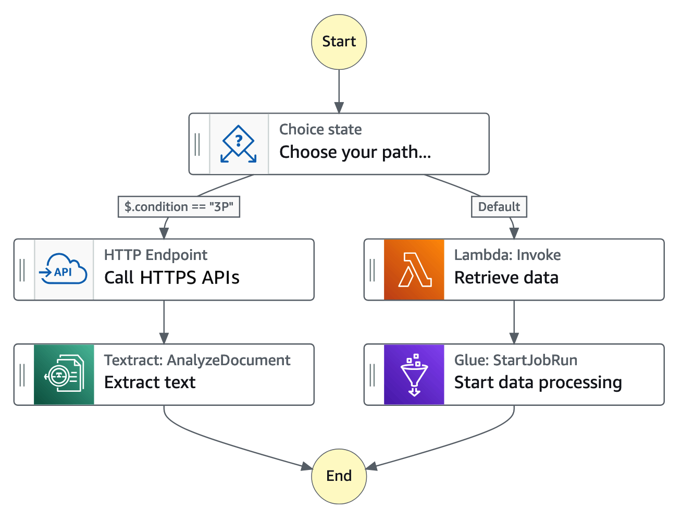
The Choice state at the top tests a value in the input. One branch calls an HTTP endpoint and then runs a text extraction task. The default branch invokes a Lambda function and then starts a data processing job. Both branches end at the same End state. A clarification workflow uses the same idea, where a missing field sends the run to a question task and a complete request goes to the model call.
Edge-case test workflow
An edge-case test workflow runs a list of hard inputs through one prompt version. A map or loop state sends each case to the model. A Lambda task checks each reply, and the workflow records a pass or fail for each case. The workflow stops the release when a case fails. Use Standard when the run can take longer than five minutes.
Figure: Each hard input passes through the model and a check, then gets a recorded result.
Amazon Comprehend
Fact: Comprehend analyzes text. Real-time PII detection accepts up to 100 KB of UTF-8 text in English or Spanish. Each detected entity has a type, a score, and begin and end character offsets.
position"] -->|PII detection| N2["Entity type score and
offsets"] N1 -->|labeled examples| N3["Custom classification"] N3 -->|real time or async| N4["Class from one document or
a set"] N1 -->|reply check| N5["Guardrails not Comprehend"]
Figure: Comprehend returns labels and positions from input text, and it does not check the model reply.
Fact: Custom classification trains a classifier on your labeled examples. It runs in real time on one document or as an asynchronous job on a set of documents.
Rule: Use Comprehend when the answer is a label or a position in the input text, such as an intent class or a PII span.
Trap: Comprehend does not write the reply and does not enforce a rule on the model reply. Use Guardrails for the reply.
Limits and numbers: toxicity detection limits and language list are Not in source for this section. Classifier training size is Not in source.
Source: https://docs.aws.amazon.com/comprehend/latest/dg/how-pii.html and https://docs.aws.amazon.com/comprehend/latest/dg/how-document-classification.html
Intent recognition with custom classification
Intent recognition is a classification task. Train a custom classifier with one class for each intent and labeled examples for each class. Call it in real time from Lambda or from a Step Functions task, then route on the returned class. Keep a fallback class for requests that match no intent.
Rule: Use a custom classifier when the intents are your own labels and you have examples for each one.
Trap: A classifier is not a conversation manager. It reads one input and returns one class. Store the turns in DynamoDB.
Intent from Lex and from a flow
Amazon Lex finds an intent in an utterance, based on a bot definition. Bedrock Flows includes a Lex node that returns the predicted intent. The Lex node processes one utterance per node, and the node documentation says it does not support multi-turn conversation. Choose Lex when the bot definition and its intents are the requirement.
Source: https://docs.aws.amazon.com/bedrock/latest/userguide/flows-nodes.html
Amazon DynamoDB for conversation history
DynamoDB stores small items by key, and it returns a session's turns with a Query. A common design uses the session ID as the partition key and the turn number as the sort key. The item holds the role, the text or a reference to it, and an expiry attribute. Reads for the last few turns stay fast because the query uses the key.
the query"]
Figure: session ID and turn number form the key, and a TTL attribute marks old turns for deletion without an exact timer.
Rule (design choice): Use session ID as the partition key and turn number as the sort key.
Fact: Time to Live is enabled on a table and names one attribute. That attribute must hold an epoch time in seconds, stored as a Number.
Fact: DynamoDB deletes expired items within a few days, not at the exact expiry time. Expired items can still appear in reads until they are deleted.
Trap: TTL is not an exact timer. Filter expired items in the Query expression, or the app can read them.
Limits and numbers: maximum item size is Not in source for this section.
Source: https://docs.aws.amazon.com/amazondynamodb/latest/developerguide/TTL.html
Amazon S3 for template repositories
S3 stores prompt template files in a repository. Teams review the file through the normal change process. A deployment step then creates or updates the managed prompt in Prompt Management. S3 versioning keeps each earlier file, so the review history stays in the bucket.
repository"] -->|normal review| N2["Approved file"] N2 -->|deployment step| N3["Managed prompt created or
updated"] N1 -->|versioning| N4["Earlier file versions kept"] N4 -->|not callable| N5["Apps call the managed
prompt"]
Figure: S3 keeps the reviewed file history, and a deployment step publishes the approved file to Prompt Management.
Fact: With versioning on, each overwrite creates a new object version, and a delete adds a delete marker. An earlier version can be retrieved and restored.
Rule: Use S3 as the source of review and history. Publish only the approved file to Prompt Management for runtime use.
Trap: S3 versioning keeps files, not rendered prompts. It does not fill variables. The application or the managed prompt must fill them.
Trap: An S3 object version is not an invocable prompt ARN. Applications call the managed prompt, not the file.
Limits and numbers: whether Prompt Management imports a file directly is Not in source. The deployment step is a design assumption.
Source: https://docs.aws.amazon.com/AmazonS3/latest/userguide/Versioning.html
AWS CloudTrail for usage tracking
Fact: CloudTrail records Bedrock API calls. Converse, ConverseStream, InvokeModel, and InvokeModelWithResponseStream are management events. RenderPrompt, ApplyGuardrail, knowledge base Retrieve, and InvokeFlow are data events.
calls"] -->|who and when| N2["CloudTrail management
event"] N1 -->|data events| N3["Selectors must enable them"] N1 -->|reply text| N4["Invocation logs instead"] N2 -->|usage counts| N5["Filter to AwsApiCall
events"]
Figure: CloudTrail answers who called and when, while prompt and reply text come from invocation logs.
Fact: Data events are off by default. To record them, the trail needs advanced event selectors for the resource type, such as the prompt, guardrail, or flow alias.
Fact: A streaming call writes a second event after the stream ends. Its event type is AwsServiceEvent, and it carries token counts. It is not an API call.
Rule: Use CloudTrail to answer who called which API and when. Enable data events for prompts, guardrails, and flows when the audit needs them.
Trap: CloudTrail does not show prompt text or model output. Use invocation logs for the text.
Trap: Counting usage from every CloudTrail event double counts streaming calls. Filter the event type to AwsApiCall.
Limits and numbers: retention in the trail destination is Not in source for this section.
Source: https://docs.aws.amazon.com/bedrock/latest/userguide/logging-using-cloudtrail.html
Amazon CloudWatch Logs for access logs
CloudWatch Logs stores log groups and log streams. Model invocation logging can deliver each request and response to a CloudWatch Logs group. Logs Insights queries can then group calls by caller identity, by prompt version, or by team. This gives the access record that the task calls log access.
by default"] -->|turn on| N2["Log group in same account
and Region"] N2 -->|body up to 100 KB| N3["Inline JSON in the log"] N2 -->|larger body| N4["Separate objects in S3"] N1 -->|requestMetadata| N5["Prompt version ARN and
team"] N1 -->|other endpoint| N6["Not captured by this
logging"]
Figure: invocation logs need a destination in the call account and Region. The requestMetadata field carries the version.
Fact: Model invocation logging is off by default. It covers Converse, ConverseStream, InvokeModel, and InvokeModelWithResponseStream on the bedrock-runtime endpoint.
Fact: A log destination has to belong to the same account and Region as the call. JSON bodies up to 100 KB stay inline. Larger bodies go to S3 as separate objects. Logs stay until the logging configuration is deleted.
Fact: The caller identity ARN is recorded automatically. The requestMetadata field is the only field the caller supplies.
Rule: Set requestMetadata to the prompt version ARN and the calling team on every call.
Trap: Calls through another endpoint, such as bedrock-mantle, are not captured by this logging. Check the endpoint that the app uses.
Trap: Logs stay until the configuration is deleted. Set a retention period on the log group as a design choice.
Source: https://docs.aws.amazon.com/bedrock/latest/userguide/model-invocation-logging.html
AWS Lambda for expected-output checks
Lambda runs code, so it can check whether a reply has the expected fields, values, and ranges. It can also compare a reply with a golden answer when the test set has one. In a flow, a Lambda function node sends an input event with its node inputs and returns its response as the node output. The same function can run in a Step Functions task.
Figure: a Lambda check returns pass or fail, and the pipeline or workflow must stop on a failed check.
Fact: The flow Lambda node receives a JSON event with the flow ARN, the alias ARN, and the node input values.
Rule: Use Lambda when the check is code: parse JSON, test required fields, test a range, or compare with a golden answer.
Trap: A Lambda check that only logs a result does not stop a release. The pipeline or workflow must fail on a failed check.
Limits and numbers: Lambda timeout, memory, and payload limits are Not in source for this section.
Source: https://docs.aws.amazon.com/bedrock/latest/userguide/flows-nodes.html
Amazon CloudWatch for prompt regression
CloudWatch shows live health for each prompt version when the logs and metrics carry the version. Alarms can stop a rollout when validation failures rise. Regression testing against a fixed dataset is a separate activity. Bedrock model evaluation jobs score a fixed prompt dataset with automatic metrics, a judge model, or human workers.
alarms"] N1 -->|answer quality| N3["Evaluation job on fixed
dataset"] N3 -->|scored by| N4["Metrics judge model or
humans"] N2 -->|dashboard only| N5["Does not show correct
answers"]
Figure: CloudWatch shows live health, and an evaluation job on a fixed dataset judges answer quality.
Fact: Bedrock runtime metrics live in the AWS/Bedrock namespace. Invocations, InvocationLatency, InvocationThrottles, and token counts are among them.
Fact: Throttled requests are not in the Invocations metric. TimeToFirstToken applies only to streaming operations. Failed calls before the model is known have no ModelId dimension.
Rule: Use CloudWatch for live signals. Use an evaluation job for answer quality.
Trap: A dashboard of latency and errors does not show whether an answer is correct. Run an evaluation for correctness.
Source: https://docs.aws.amazon.com/bedrock/latest/userguide/monitoring-runtime-metrics.html and https://docs.aws.amazon.com/bedrock/latest/userguide/evaluation.html. Evaluation quotas and prices: Not in source.
Metrics and alarms for a prompt version
Publish a custom metric for each prompt version that counts failed validations. Alarm when the failure rate passes a threshold for a set number of periods. Connect the alarm to the rollback step, so that the rollback starts without a person watching a dashboard. The course slides note that custom metrics are a supported CloudWatch feature.
Source: course slide extract page 109 for custom metrics and dimensions.
Evaluation jobs against a fixed dataset
Store a fixed dataset of prompts and expected answers in S3. Run an automatic evaluation or a judge-model evaluation for each candidate version. The judge model scores each reply and gives an explanation for the score. Comparing each candidate with an approved baseline score is a design choice made in your own pipeline.
Amazon Bedrock Flows, named Prompt Flows in the task
Fact: Flows links prompts, models, knowledge bases, Lambda functions, and other AWS services. It has a visual builder and an API. A flow has a working draft, immutable versions, and aliases. InvokeFlow calls the alias.
design"] -->|use a flow| N2["Draft and immutable
versions"] N2 -->|alias| N3["InvokeFlow calls the alias"] N1 -->|long human wait| N4["Step Functions instead"] N1 -->|single prompt call| N5["No flow needed"]
Figure: a flow fits a designed path of prompts, while long human waits and single calls belong elsewhere.
Rule: Use a flow when the path between prompts is the thing to design, version, and test.
Trap: A flow is not a general orchestrator. The node list has no wait-for-approval node, so long waits belong in Step Functions.
Trap: Flows is built on Bedrock models. A single prompt that needs one call does not need a flow.
Limits and numbers: quotas for flows are in the AWS General Reference. An inline code node is in preview in the docs read here, with a limit of five per flow. Inline code nodes are not supported in asynchronous flow execution.
Source: https://docs.aws.amazon.com/bedrock/latest/userguide/flows.html and https://docs.aws.amazon.com/bedrock/latest/userguide/flows-nodes.html
Sequential prompt chains
A sequential chain sends the output of one prompt node into the next node. A prompt node has inputs that fill its variables, and its output is the model completion as a string. The next node reads that output through its input expression. Use a chain for steps such as extract, then classify, then write.
The diagram shows a chain with five steps in order. The user query goes to an embedding step, which produces a vector with an embedding model. The retrieval step searches a vector database for similar documents. The augmentation step joins the retrieved documents with the query, and the text model writes the answer. Each arrow in the chain is the same idea as a prompt node output that feeds the next node.
Conditional branching based on model responses
A condition node sends data to different nodes, based on conditions that you define. Conditions are evaluated in order, and the first true condition wins. A default path catches every other value. A typical design asks the model for one label, then branches on that label.
Rule: Ask the model for a fixed label set. Branch on that label with a condition node that compares the prompt output.
Trap: A condition on free text fails when the model adds words. Validate the label against the fixed list before the branch.
Reusable prompt components
A prompt node takes a managed prompt by its ARN, or it takes an inline prompt definition inside the node. Use managed prompts for the parts shared by several flows and applications. One version change then reaches every flow that points to that version. The reuse rule matches the version rule in the earlier section.
Trap: An inline prompt copies the text into each flow. Each copy then needs its own review and its own version history.
Pre-processing and post-processing steps
A pre-processing step cleans or checks the input before the model node. Examples are PII masking and a language check. A post-processing step checks or reshapes the output after the model node, such as a schema check in a Lambda node. Lambda nodes and inline code nodes can hold these steps.
The diagram shows one stage that holds two smaller steps. Documents from the data source go into a chunking step, and the chunks go into an embedding step. The embedding step uses an embedding model, and the vectors go to a vector database. The diagram covers ingestion, not prompt-time flow. The idea of a stage with several steps applies to a flow, where a PII step can sit before a model node.
Rule: Put PII masking before the model node. Put the schema check after the model node.
Trap: Inline code nodes are in preview in the docs read here. Do not make a preview node the only control in a regulated design.
X versus Y: confusable pairs in scope
Each pair below has one decision tree, a three-row comparison, one question, and one trap. Use the question first. It usually settles the pair in a few seconds. The pairs cover the look-alike answers in this task.
Prompt Management versus an S3 template repository
lives"] -->|managed versions and
variables| B["Prompt Management version"] A -->|reviewed files
before release| C["S3 repository file"] C -->|deployment step
publishes| B C -->|no render step
exists| D["Code fills variables"]
Figure: A managed version is callable. A file is reviewed, then published or rendered by code.
- Purpose: Prompt Management runs versioned prompts with variables for applications and flows. S3 keeps files and their history for review.
- Input: Prompt Management takes template text, variables, and model settings. S3 takes a file, with versioning on the bucket.
- Output or effect: Prompt Management gives a version ARN that an application calls. S3 gives an object version that code must load and render.
Question to ask yourself: Does the application need a callable version, or only a reviewed file?
Trap: An S3 repository alone gives no managed invocation. The team then owns the code that fills the variables.
Source: https://docs.aws.amazon.com/bedrock/latest/userguide/prompt-management.html and https://docs.aws.amazon.com/AmazonS3/latest/userguide/Versioning.html
Bedrock Guardrails versus Comprehend
request path"] -->|rule acts on model
call| B["Bedrock Guardrails"] A -->|label or span before
any call| C["Comprehend detection"] C -->|masked text sent on| B B -->|reply checked before
user| D["Guardrail output filter"]
Figure: Comprehend can prepare the input. Guardrails checks the call and the reply.
- Purpose: Guardrails applies safety policy to inputs and responses. Comprehend finds entities and labels in text.
- Input: Guardrails takes the prompt or the response with a guardrail version. Comprehend takes UTF-8 text up to 100 KB for real-time PII.
- Output or effect: Guardrails blocks, masks, or flags content. Comprehend returns types, scores, and offsets that the caller uses to act.
Question to ask yourself: Must the control act on the model reply, or is a pre-step enough?
Trap: Comprehend masking the input does not check the reply. A reply can still contain a blocked topic.
Source: https://docs.aws.amazon.com/comprehend/latest/dg/how-pii.html and https://docs.aws.amazon.com/bedrock/latest/userguide/guardrails.html
Bedrock Flows versus Step Functions
prompt path| B["Bedrock Flows"] A -->|waits retries or
approvals| C["Step Functions"] C -->|one task calls a
model| D["Bedrock Converse call"] B -->|needs a long wait| C
Figure: Flows owns a model path. Step Functions owns state and waits.
- Purpose: Flows builds generative AI paths from prompt, model, and knowledge base nodes. Step Functions coordinates any set of tasks with state.
- Input: Flows takes a flow input and node configuration. Step Functions takes a state machine definition and an execution input.
- Output or effect: Flows returns the output of its final nodes and can be versioned behind an alias. Step Functions keeps an execution history.
Question to ask yourself: Are most steps model nodes, or service tasks with waits and retries?
Trap: A flow has no wait-for-approval node in the node list read for this section. Use a Standard Step Functions workflow for that step.
Source: https://docs.aws.amazon.com/bedrock/latest/userguide/flows-nodes.html and https://docs.aws.amazon.com/step-functions/latest/dg/choosing-workflow-type.html
Step Functions versus Lambda
steps"] -->|yes| B["Step Functions"] A -->|one task body only| C["Lambda function"] B -->|each task can invoke| C
Figure: Step Functions sequences tasks. Lambda does one unit of work.
- Purpose: Step Functions sequences tasks with state and history. Lambda runs one function for one event.
- Input: Step Functions takes a state machine definition and input. Lambda takes an event.
- Output or effect: Step Functions records each run and each transition. Lambda returns the result of its code.
Question to ask yourself: Does the requirement care about the path across steps, or about what one step computes?
Trap: Retry loops inside one Lambda function hide the run history. Use Step Functions when the history is the audit need.
Source: https://docs.aws.amazon.com/step-functions/latest/dg/choosing-workflow-type.html
CloudTrail versus invocation logs
reply text| C["Invocation log record"] A -->|which prompt version
was used| D["requestMetadata with
version ARN"] C -->|stored in CloudWatch
Logs| E["Same account and Region"]
Figure: Caller evidence and content evidence are separate records.
- Purpose: CloudTrail records API calls. Invocation logs record request and response bodies and metadata.
- Input: CloudTrail takes events from the account. Invocation logging takes four runtime operations on the bedrock-runtime endpoint.
- Output or effect: CloudTrail gives the caller, the time, and the event name. Invocation logs give bodies up to 100 KB inline and token counts.
Question to ask yourself: Does the auditor need the words sent and returned, or only the caller and the time?
Trap: CloudTrail alone cannot show which prompt text a user received. Invocation logs with the version ARN in requestMetadata do that.
Source: https://docs.aws.amazon.com/bedrock/latest/userguide/logging-using-cloudtrail.html and https://docs.aws.amazon.com/bedrock/latest/userguide/model-invocation-logging.html
DynamoDB versus S3 for conversation history
quickly"] -->|small records| B["DynamoDB items by session"] A -->|large file or whole
transcript| C["S3 object per transcript"] B -->|old turns expire| D["TTL on epoch seconds
attribute"] C -->|old files removed| E["S3 lifecycle expiration
rule"]
Figure: Small keyed turns suit DynamoDB. Whole files suit S3.
- Purpose: DynamoDB reads and writes small items by key. S3 stores whole objects by name.
- Input: DynamoDB takes item attributes keyed by session and turn. S3 takes an object and a key name.
- Output or effect: DynamoDB returns the matching items from a Query. S3 returns the object as one file.
Question to ask yourself: Does the app read the last few turns quickly, or load a whole transcript file?
Trap: S3 is a slow store for turn-by-turn chat. A DynamoDB Query returns one session's turns directly.
Source: https://docs.aws.amazon.com/amazondynamodb/latest/developerguide/TTL.html and https://docs.aws.amazon.com/AmazonS3/latest/userguide/Versioning.html
Comprehend intent classification versus Lex versus a prompt label
examples| B["Comprehend custom
classifier"] A -->|bot with intents
from utterance| C["Amazon Lex bot"] A -->|quick label from a
model| D["Prompt returns fixed label"] D -->|label not reliable| B
Figure: Three ways to name an intent, with different training effort and control.
- Purpose: Comprehend classifies text into your classes. Lex matches an utterance to a bot intent. A prompt label asks the model for one class.
- Input: Comprehend takes labeled examples for training. Lex takes an utterance and a bot definition. The prompt takes instructions and examples.
- Output or effect: Comprehend returns a class and a score. Lex returns the predicted intent. The prompt returns text that code must parse and check.
Question to ask yourself: Is the intent set fixed and trained from examples, or is it a bot with defined intents?
Trap: A prompt label is a request, not a classifier. Check it against the fixed list before the code routes on it.
Source: https://docs.aws.amazon.com/comprehend/latest/dg/how-document-classification.html and https://docs.aws.amazon.com/bedrock/latest/userguide/flows-nodes.html
Read a long question
Each scenario below is short and original. Read the constraint words first. Then remove each option by its type, and give one reason for each removal. The answer comes last. Use the same method on a real question.
Scenario 1: a reviewed prompt for three chat apps
A bank runs three chat apps that share one reply style. Each change needs a reviewer sign-off, and an auditor must see which version each app used. The apps fill runtime variables for the customer segment.
reply style"] -->|reviewer sign off| N2["One Prompt Management
template"] N2 -->|numbered versions| N3["Production calls approved
version ARN"] N3 -->|auditor check| N4["Invocation logs with
requestMetadata"] N1 -->|copy text per repo| N5["No shared version record"]
Figure: one numbered template and an approved version ARN give the auditor a version record for all three apps.
Exam tip: Underline reviewer sign-off, which version, and runtime variables. Those three phrases decide the answer.
- Keep the prompt text in each app repository. Eliminated: no shared version record for the auditor.
- Store the prompt text in one parameter string and read it at start. Eliminated: no variable fill and no variant comparison for the prompt itself.
- Call the working draft from production. Eliminated: the draft changes without a release record.
Answer: One Prompt Management template with numbered versions. Production calls the approved version ARN. Invocation logs carry the version ARN in requestMetadata.
Scenario 2: screening every chat request
A health app must remove phone numbers before any text reaches a model. The check runs on every chat request in real time. The reply text must not show a blocked topic.
topics"] -->|detect spans| N2["Comprehend finds offsets"] N2 -->|mask before model| N3["Masked input sent on"] N3 -->|Converse call| N4["Guardrail checks input and
reply"] N1 -->|Comprehend alone| N5["Reply not checked"] N1 -->|check after call| N6["Model already saw raw
number"]
Figure: Comprehend masks the input before the model, and a guardrail on the call checks both the input and the reply.
Exam tip: Underline before any text reaches, every request, and reply text. The second and third phrases remove a pre-step that only checks input.
- Comprehend alone. Eliminated: it masks the input but does not check the reply.
- A Lambda check after the call alone. Eliminated: the model already saw the raw phone number.
- Macie on the bucket of chat logs. Eliminated: Macie scans data at rest in S3, not a live request.
Answer: Comprehend detects phone numbers and returns offsets. The app masks those spans. A Bedrock guardrail on the Converse call checks the input and the reply.
Scenario 3: who called, and how slow the streamed replies were
A company must answer two questions for last week. The first asks which principal called the model and when. The second asks how long the streamed chat replies took to start.
week"] -->|which principal| N2["CloudTrail or identity ARN"] N1 -->|start time| N3["CloudWatch runtime metrics"] N3 -->|streaming only| N4["TimeToFirstToken metric"] N1 -->|wrong option| N5["Metrics alone for the
caller"]
Figure: the caller question goes to CloudTrail or the identity ARN, and the start time question goes to runtime metrics.
Exam tip: Underline which principal, how long, and time to start. A caller question and a timing question need different sources.
- CloudTrail alone for timing. Eliminated: CloudTrail records calls, not latency or time to first token.
- A runtime metrics dashboard alone for the caller. Eliminated: metrics count calls but do not name the caller.
- Invocation logging for the start time only. Eliminated: the logs give the request and response, but the question needs the metric for start time across the stream.
Answer: CloudTrail or the identity ARN in invocation logs names the caller. CloudWatch runtime metrics give TimeToFirstToken for streaming operations.
Distractor patterns seen in the tests
The wrong options in this task follow a few patterns. Learn the pattern, and the option becomes easier to reject. Each pattern below names what is wrong with it.
plausible"] -->|check its role| N2["Name what the service does"] N2 -->|storage or draft| N3["Holds data but checks no
reply"] N2 -->|log or dashboard| N4["Shows caller or speed not
content"] N2 -->|pre step or flow| N5["Wrong tool for reply or
waits"]
Figure: each distractor fails because its service holds data, shows logs, or acts at the wrong stage.
- The draft as production target. A draft is the mutable working copy. Production needs a numbered version that never changes.
- A pre-step that stands in for a reply control. Masking the input does not check the output. A reply control is a guardrail or a check after the call.
- A log that shows who, not what. CloudTrail names the caller and the time. It does not hold the prompt or reply text.
- Lambda as the answer when it is named. Lambda is the caller in most correct designs. It is the right answer only for code between services.
- A workflow service around one call. A state machine around one model call adds cost and history with no need.
- Storage presented as a control. S3 versioning, DynamoDB, and a file repository store data. None of them checks a model reply.
- A latency dashboard for answer quality. Speed and error counts do not show whether the answer is right. An evaluation job does that.
- A flow for a human wait. The flow node list has no wait-for-approval node. Standard Step Functions holds the wait.
- A right service with the wrong endpoint or detail. XML input tags apply only to InvokeModel. Invocation logging does not cover bedrock-mantle calls.
- A neighbor service from another area. Amazon Q helps developers write code. It is not the runtime service that an app calls for a prompt.
Drill
Each prompt is one line. The answer is on the next line. Say the answer aloud before you read it.
Figure: each drill prompt is answered aloud before the answer line is read.
Which artifact must production call, so that a draft edit cannot change behavior?
Rule: A numbered prompt version ARN, never the working draft.
Which control checks each model reply for a blocked topic?
Rule: A Bedrock guardrail attached to the call, pinned to a numbered version.
Which service finds phone numbers in text and returns their character positions?
Rule: Amazon Comprehend PII detection, with begin and end offsets.
Which service runs a workflow that waits three days for a person to approve each step?
Rule: A Standard Step Functions workflow.
Which flow node routes a run when the model returns a fixed label?
Rule: A condition node that compares the prompt node output with each label.
What must surround the untrusted text for prompt attack detection on InvokeModel?
Trap: Reserved input tags. Without them the prompt attack filter does not evaluate the input.
Which log names the caller of an InvokeModel call and the time of the call?
Rule: A CloudTrail management event for the API call.
Where should the prompt version used for each reply be recorded?
Rule: In requestMetadata on the invocation, captured by model invocation logging.
Which store keeps the last ten chat turns for each session and removes old turns?
Rule: DynamoDB items keyed by session and turn, with a TTL attribute in epoch seconds.
Which component fails the release when a JSON reply misses a required field?
Rule: A Lambda validator that the pipeline or Step Functions run, and that fails the run.
Which tool scores a candidate prompt against a fixed dataset and a baseline score?
Rule: A Bedrock model evaluation job with the dataset in S3.
Can a flow run in asynchronous execution with an inline code node?
Trap: No. Inline code nodes are not supported in asynchronous flow execution.
Sources
- https://docs.aws.amazon.com/bedrock/latest/userguide/prompt-management.html
- https://docs.aws.amazon.com/bedrock/latest/userguide/prompt-management-create.html
- https://docs.aws.amazon.com/bedrock/latest/userguide/prompt-management-deploy.html
- https://docs.aws.amazon.com/bedrock/latest/userguide/prompt-management-test.html
- https://docs.aws.amazon.com/bedrock/latest/userguide/flows.html
- https://docs.aws.amazon.com/bedrock/latest/userguide/flows-nodes.html
- https://docs.aws.amazon.com/bedrock/latest/userguide/guardrails.html
- https://docs.aws.amazon.com/bedrock/latest/userguide/guardrails-tagging.html
- https://docs.aws.amazon.com/bedrock/latest/userguide/logging-using-cloudtrail.html
- https://docs.aws.amazon.com/bedrock/latest/userguide/model-invocation-logging.html
- https://docs.aws.amazon.com/bedrock/latest/userguide/monitoring-runtime-metrics.html
- https://docs.aws.amazon.com/bedrock/latest/userguide/evaluation.html
- https://docs.aws.amazon.com/bedrock/latest/userguide/kb-how-it-works.html
- https://docs.aws.amazon.com/step-functions/latest/dg/choosing-workflow-type.html
- https://docs.aws.amazon.com/step-functions/latest/dg/welcome.html
- https://docs.aws.amazon.com/comprehend/latest/dg/how-pii.html
- https://docs.aws.amazon.com/comprehend/latest/dg/how-document-classification.html
- https://docs.aws.amazon.com/amazondynamodb/latest/developerguide/TTL.html
- https://docs.aws.amazon.com/AmazonS3/latest/userguide/Versioning.html
metrics"] N1 -->|read but not cited| N4["Other course slide pages"] N2 -->|listed as URLs| N5["Sources list at end of
task"]
Figure: the task cites AWS documentation pages and one course slide page, and other slide pages are read without citation.
Source: course slide extract page 109 for CloudWatch custom metrics. Other course slide pages were read but not cited for this task.